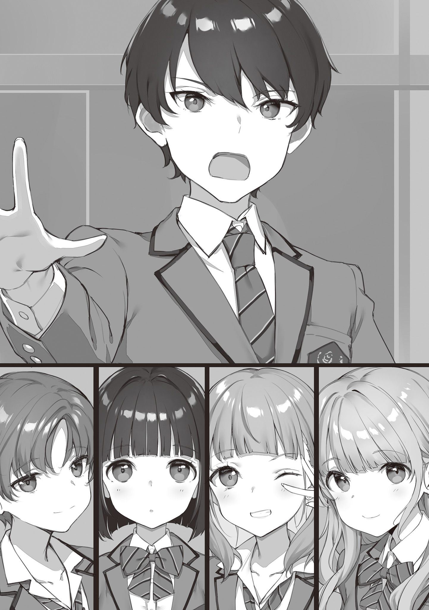
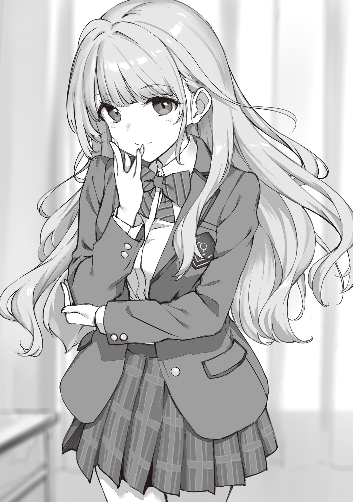
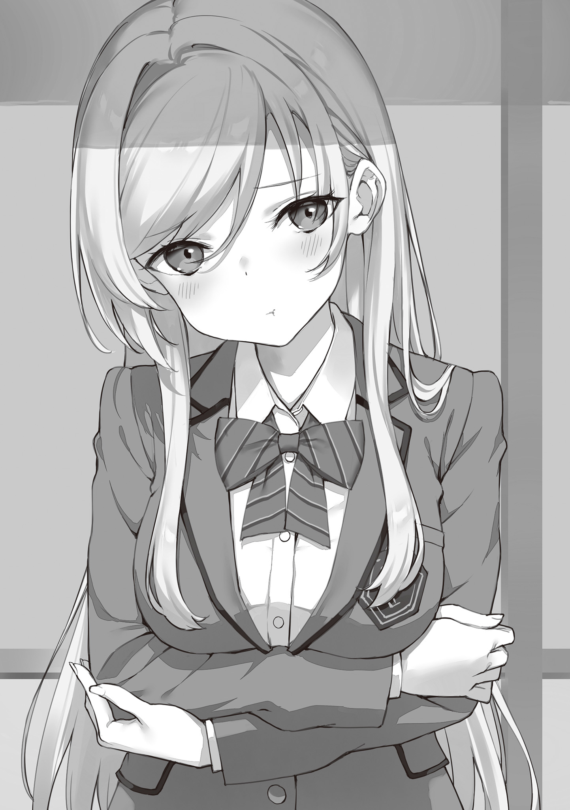
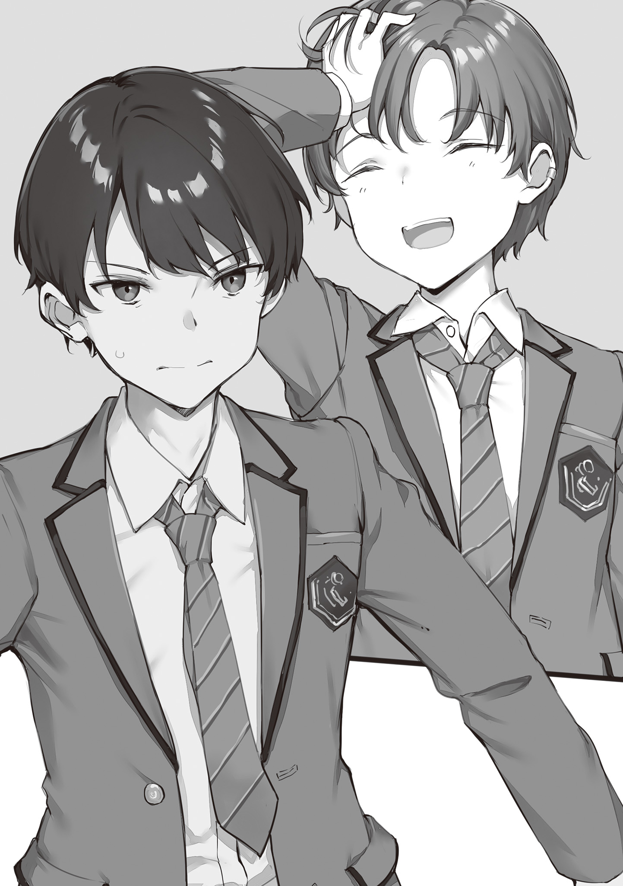
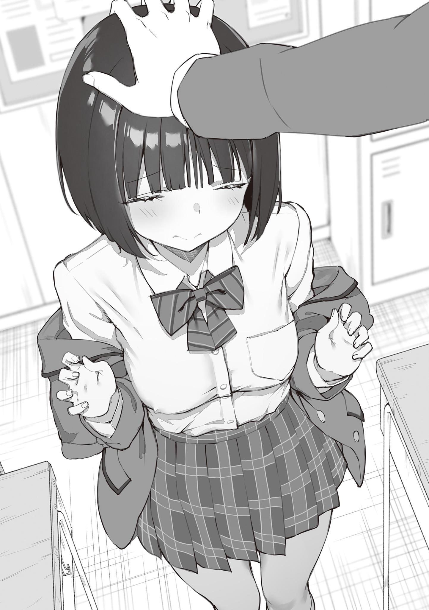

本電子書籍を示すサムネイルなどのイメージ画像は、再ダウンロード時に予告なく変更される場合があります。
本電子書籍は縦書きでレイアウトされています。
また、ご覧になるリーディングシステムにより、表示の差が認められることがあります。
口絵・本文イラスト●たかやＫｉ
＃＃
──〝完全犯罪〟を成立させるためには仲間が要る。
それも、とびきり優秀で性悪で頼もしい、ハチャメチャな仲間たちが。
こつ、と乾いた足音が夜闇に響く。
俺が──違う、俺たちが訪れているのは深夜の学校だった。目的は、校舎の中でちょっとした〝事件〟を起こすこと。もしかしたら、明日には迷宮入りの大事件として世間を
「ん……」
校門に仕掛けられているはずの
奇妙な現象に意識と視線を向けた瞬間、すぐ隣からちょんちょんと袖を引かれた。
「えっへん。これも、わたしの得意技……なでなでの権利、ぷらすいち」
「……はいはい、分かったよ」
口調と表情こそローテンション気味ながら、上目遣いで得意げな横ピースを決める小柄な少女。大人しい割に（仕草だけは）自己主張が激しい彼女の黒髪にぽふんと片手を置くと、つきたてのお餅みたいに白い
誰よりもハッキングに
彼女のおかげで、俺たちの犯行は並大抵のセキュリティじゃ止まらない。
ただし、今夜の現場は他でもない学校だ。監視カメラや警報機の
けれど、
「先生たちなら帰ってるよ、一人残らずね」
少し前を歩いていたベージュの髪の少年──〝詐欺師〟が、俺の疑問を見透かしているかのように上半身を
「まあ、正確には〝帰ってもらった〟んだけど」
「……何したんだ、今回は？」
「ほんのちょっと帰りたくなる理由をあげただけだよ。そうだね、具体的には──」
「うっさいなぁ、もう。どーせ適当な
不満げに頬を膨らませて詐欺師の発言を一刀両断に遮る赤髪の少女。
制服の上から
……ただまあ、
「そんな目で見てもらえるなんて……いやぁ、今日は最高の夜になりそうだね」
嘘つき以外にドＭという厄介な属性を併せ持つ彼には逆効果だったようだけれど。
とにもかくにも、本来的な意味での監視の目は詐欺師の嘘によって排除されている。ついでに足跡や指紋を含めた
そして、最後に立ち塞がるのは物理的な障壁──。
俺たちが侵入経路に選んだ校舎の裏口には電子錠とダイヤル錠の二重ロックが施されている。いくら暗殺者のハッキング能力が優れていても、アナログ式の錠前は破れない。何か別の方法で攻略するしかない、というわけだ。
そんなことを考えながら校庭を突っ切り、通い慣れた校舎の裏手に回る──と、
「「「「…………」」」」
裏口がぶっ壊されていた。
正確には、
「ふふっ。お察しの通り、犯人は私です」
童話のお姫様みたいな銀髪をふわりと揺らす少女──〝怪盗〟が、黒手袋を付けた右手をお
「入りやすいように
「……じゃあ、何でわざわざ？」
「それはもちろん、こちらの方がスリル満点でドキドキしますから」
にこにこと無邪気に
「ふっ……やっぱり、物騒のきわみ」
それを受けて、俺の後ろに隠れていた黒髪の少女が
「やばんじん……わたしなら、もっとすまーとにやれる。やーいやーい」
「むむ。……そんなことを言う悪い子には、お仕置きです。えい」
「ふにゃむっ!?」
怪盗の指先から放たれた何か──見えなかったけど多分消しゴムだと思う──が暗殺者の小柄な
「！ な、なんて容赦のない強烈な一撃なんだろう。土下座したら僕にも攻撃してくれないかなぁ……やっぱり、貯金の使いどころってこういう場面だからね」
「うわ、きも……って言ったら喜ばれるんじゃん。……え、詰み？ どうしよ!?」
そこそこの頻度で発生する好戦的なやり取りを羨ましそうに指を
「…………」
……まあ、見ての通り。
俺たちはまだバラバラで、仲良しこよしというわけじゃない。
強固な
それでも。
「では──
極上の銀髪を揺らす少女が、俺に。今回の事件を企てた〝黒幕〟に身体を向ける。
──俺たちは、完全犯罪組織の仲間だ。
バラバラでも絆がなくても結束感が希薄でも、信頼だけは足りている。
俺たちが企てているのは、平たく言えば犯罪行為だ。なるべく派手で大胆な──それでいて特定の条件を満たす──事件を何度となく繰り返している。各々が持つ特殊な能力を
……
そうしないと、最悪の未来が訪れてしまうからだ。
■■■■が惨殺されて、■■■■が壊滅して、世界が終わってしまうからだ。
そんな未来が、俺にだけは
「……ああ」
だから俺たちは捕まるわけにいかない。世界中のどこよりも〝正義〟の力が強いこの学園で、誰にも知られないまま歴史を改変し続けなきゃいけない。
「完全犯罪組織【■■■■】──行動開始だ」
頼れる仲間たちの顔を見渡しながら、俺は今日も堂々と号令を下す。
ただ、これは──今からほんの少しだけ〝未来〟の話だ。

＃１
まだ肌寒い四月初旬の朝。
通学、通勤ラッシュ
それでも、俺──
一つに、今日が入学式という特別な日だから。
俺はつい先月まで中学生だったピカピカの高校一年生だ。今までは近所の学校に通っていたため、ラッシュ時の電車に乗るのはほぼ初体験。俗世の常識を知らないお嬢様じゃないけど、何となく物珍しさというか非日常感らしきものがある。
そしてもう一つに、これから通うことになる
今日だけの辛抱だと思えば、ぎゅうぎゅうの満員電車だってそう悪いものじゃない。
（……っと。確かこの駅、だったよな）
受験の際にも来ているものの、念入りに表示を確認してから電車を降りる。
永彩学園の最寄り駅。改札を抜けると、人の波はきっぱり二手に分かれていた。多数派になるのは圧倒的に左手側だ。そこそこ規模の大きなビジネス街と、私立高校や大学なんかもあったはず。街全体がとっくに目覚めて活気づいているのが見て取れる。
「ん……」
そこへ吸い込まれていく人々の背中を見送ってから、俺は逆サイドへ足を向けた。
風景としては似たようなものだけれど、明らかに人通りの少ない右手側──それもそのはず、この先にある施設なんて永彩学園くらいのものだからだ。よって、周りには同じ制服を着た高校生らしき少年少女の姿をちらほらと見かける。
（駅から来てるってことは、みんな新入生……なのかな）
内心で独り
新生活の荷物は
もしかしたら春休みの間だけ帰省していた上級生かもしれないけど……まあ、どちらにしてもこれからは同じ学校に通う仲間だ。親近感というか連帯感というか、そういった感情が早くも芽生え始めているのは間違いない。
特に、永彩学園は少し変わった学校だから──と。
そんなことを考えながら青信号のＴ字路に差し掛かろうとした、その時だった。
「…………へ？」
ただ、そんなものはきっと世界の誰にも届かなかったことだろう──何しろ、だ。突如として
明らかに法を逸した速度、ゴテゴテに改造された車体、お手本みたいな信号無視。
精神的な衝撃と物理的な風圧で俺の歩みが止まる中、
「な、なんだ……事故？」「とんでもない勢いだったぞ、おい」「暴走族ってやつ？ 朝っぱらから迷惑な話だな」「族って。一人じゃん」「え、えっと、早く救急車を呼んであげた方が……」「救急車っていうか、あれ……生きてんのか？」
周囲から戸惑い交じりのざわめきが上がる。
当然の話だ。朝も早くから暴走バイクが信号機に突っ込む様を目撃したら誰だってそうなる。運転手の身を案じればいいのか、見なかったことにして立ち去ればいいのか、
「むっ……!?」
そんな状況で
いつの間にか俺のすぐ後ろにいた、同じ制服の男子生徒。今日から学友になるのだろう
「諸君、気を付けろ！ あの男は単なる暴走族ではない──〝
……刹那。
俺たちの視線の先で、何の前触れもなく唐突に真っ赤な轟炎が立ち上った。
「チッ……んだよ、ガキ共。許可もなく見てンじゃねぇ……
黒のジャケットに身を包んだ、いかにも凶悪な風貌の男。
彼はライターの
「ッ……」
──この世界には《
約三十年前から観測されるようになった異能の力。物理法則を完全に無視し、馬鹿げた結果をもたらす夢のような力。現在では若年層の１％ほど、日本全体では五十万人ほどが何らかの《
世界の発展を大きく推し進めた《
でも、もちろん──というと世知辛いけれど、それを悪事に使う人間だっている。
まさに今、目の前で炎を
「クソが。人がせっかく朝のドライブを楽しんでたってのに、邪魔くせぇ信号は生えてるわガキ共は不愉快だわ……萎えるな。いっそ、全部灰にしちまうかァ？」
イライラとした口調で八つ当たり気味の
「くっ……！」
隣に進み出てきたメガネの男子生徒が悔しげに拳を握っている。
「何だあの傲慢で自分勝手な男は……この
下唇を
この世界には、確かに《
物理法則を軽々と無視する《
そんな俺の思考を遮るような形で、燃え盛るＴ字路に新たな闖入者が現れた。
「──
「！」
釣られて視線を動かした瞬間、俺の世界から〝それ〟以外の何もかもが消し飛んだ。
それは、とても──とてつもなく美しい少女だった。
見る者の視線を奪うキラキラとしたストレートロングの金糸。表情と共に厳しくも優しくも装いを変える、透き通るような
（ほ、本物だ……本物の、一条さんだ！）
メガネの少年には悪いけど、彼と違ってこちらは名乗られるまでもない。
何しろ
「……あァ？」
格好こそ俺たちと同じ
「テメェは……どっかで見た顔だな。さては有名な
「否定はしません。投降する気があるのなら、今すぐ《
「……チッ……」
再度、わざとらしい舌打ちの音が響く。
〝
ただ、
「《
ちりっ、と赤黒い炎が肌を焼いた。
「おい女ァ……《
「……何が言いたいんですか？」
「ハッ。この俺の《
「…………」
「テメェが俺を挑発したせいで、哀れなガキ共は全員まとめてあの世行きだ。……それが嫌ならさっさと《
強烈な殺意が全方位を貫く。
到着したばかりの一条さんがどこまで把握しているかは分からないけど、この近くには永彩の生徒だけで十数人が集まっている。たまたま居合わせた通行人や近所の住人も含めれば平気で百は超えるだろう。
押し黙る一条さんの姿を見て、男は勝ち誇ったように口端を上げる。
「
……調子よく紡がれていた言葉は、そこでピタリと止まった。
どこか
「──《
押し黙っていた、わけではない。
一条さんは許可を取っていただけだ。宿した《
腰の辺りまで広がった流麗な金糸が熱風を受けてふわりと揺れる。
「もう一度言います。今すぐ《
「……、はい」
「ありがとうございます。それと……こんな《
「……、はい」
さっきまでの反抗的な態度とは一変して従順に言うことを聞く男。
ごうごうと燃え上がっていた炎があっという間に収まっていくのを確認しながら、一条さんは洗練された仕草でそっと右手を耳元へ添える。
「本部──改めて要請します。
誰もが
「──《
スマホ型の端末を顔の前に
【コアクラウン01《
【該当の
「「「……お、おぉおおおおおおおおお！！！」」」
解決を示す電子音が鳴り響くのと同時、地鳴りのようなざわめきが空間を支配した。
きっと、哀れな男以外は誰もが知っていた──一条さん。一条光凛は確かに
一瞬で悪を成敗した一条さんは、そっと胸を
「到着が遅れてすみません。
「あ、あの……
「任せてください！ お家までご一緒させていただきます」
「そこまでしてくださるんですか!? いや、ですが《
「それを管理するのも
嫌な顔一つせず、それどころか気を遣わせることすらせずに、
「お、おおお！ あれが、あれこそが！ この
かくいう俺も、念のため
「……かっけぇ」
一言、
けれど、まあそれもそのはず。みんなが奮起するのも当たり前だ。
何せ、
この国で唯一の、
＃２
「あー……静かにしろ、お前ら。授業を始めるぞ」
担任教師の声が
今朝の興奮はまだ冷めないままだけど、そんな中でも永彩学園の入学式は
次いで俺を含めた新入生一同が各々のクラスへ移動して。
たった今、ガイダンスと銘打たれた初回の授業がいよいよ始まったところだった。
「まずは前置きから話そう。……今朝、ちょっとした騒ぎがあったのはお前らも知ってるな？ 直接巻き込まれた
教壇に立つ俺たちの担任（やたら寝不足気味で髪がボサボサでワイルドな雰囲気のイケメンだ）が、誰にともなく眠たげな視線を巡らせる。もちろん、この永彩学園に入学しているからには、彼らクラスメイトも一人残らず
さておき、暴走バイク男の炎上事件。
解決した張本人である一条さんが同じクラスにいるわけじゃないけど、俺は現場に立ち会っているし、岩なんとかいうメガネの彼も近くにいた。入学式の挨拶でも軽く触れられていたから、他のみんなも大まかな事情は知っているはずだ。
「あれな。──珍しい、って思っただろ？」
気怠げながら静かな迫力を伴う眼光が俺たちを射る。
「その感覚は正常だ。今の時代、ああいう命知らずな馬鹿は
とん、っと教卓に突いた右手に体重を乗せる担任。
今の話にもあった通り、かつては──《
そこで生まれたのが
彼らは強大な〝正義の力〟を操って、当時の
「で、その正義の力ってのが……
担任教師の声が
「イメージとしちゃ〝制裁機能付きの絶対的な正誤判定システム〟みたいなもんか。どんな《
「「「……ごくり……」」」
「だから、現代の
ふと、
あれ自体は計画的な悪事じゃなかったと思うけれど……言われてみれば、彼は周囲一帯を人質に取ることで一条さんの《
（
もちろん、世界が平和なのは喜ばしいことなのだけれど。
とある秘密を抱えている俺は、
「まあ、前置きとしてはこんなところか」
そんな俺を
「《
そこで先生が、不意にとある生徒の名を呼んだ。
ついさっき自己紹介のターンがあっただけだからまだクラス全員の顔と名前が一致するわけじゃないけど、彼なら分かる。虎石
「へ……？ な、何っすかセンセ？ オレ、別に居眠りとかしてないっすけど……」
「実例を
「！ い、いいんすか、そんな目立つ役やっても！」
「いいからやれ、授業中だ」
嘆息交じりに首を振る担任に促され、
「それじゃ、センセの許可も出たことだし──見てろよみんな、大注目だ！」
懐から二枚の硬貨を取り出した。……どうして十円玉が裸でポケットに入っているのかは謎だけど、もしかしたら〝こんなこともあろうかと〟というやつかもしれない。無駄に準備のいい虎石は、鈍い銅色に輝く小銭を天高く掲げる。
「オレの《
振りかぶって、
「「「!?」」」
虎石の指先から離れた片方の十円玉は、教室内のざわめきを切り裂きながら真っ
「へへっ……どんなもんよ！」
そして、わずか数秒後には、虎石
「今オレが設定したのは〝離れれば離れるほど強烈な引力が働く〟って仕様だ。近いと何も起こらないから、こんなブーメランだって思いのままってわけ！」
「わぁ……
「だろ!? オレの《
クラスメイトから上がった称賛の声に気を良くし、虎石はノリノリで
「けどな、今のは序の口なんだぜ？ 何しろ〝磁力〟ってのは単なる比喩でしかない。軌道をきっちり描いてやれば、こんな面白いコトだってできるんだ！」
再びぶん投げられる
銅色の円形は先ほどと同じように真っ直ぐ飛んでいたものの、やがて中途半端な位置でヒュンッと鋭角に進路を変えた。次いでヒュンッ、さらにヒュンッと、まるでピンボールでもやっているかの
これが正確に操作できているなら確かに強力な《
「へいへいへぇい！ こいつがオレの最終奥義……になる予定の大技！ 色んな力を細かく設定することで自由な軌道を走り回る！ そして、弱点は！」
「弱点は!?」
「計算が難しすぎてろくに操れないことだけだぁ！」
──やっぱり、制御できていなかった。
途端に教室中から悲鳴のような声が聞こえ、誰もが隅の方へ避難したり頭を
「わ、悪いみんな！ すぐに《
「──やれやれ、それならデモンストレーションはお
そこで、相変わらず
「「「お、おおお～……!!」」」
どこからともなく歓声が上がった。
……
かつて熟練の
「見ただろう、お前ら。この通り《
静かに染み渡っていくダンディな声。
実際、その通りだ。この世界に全く同じ《
「だからこそ──模索しろ、
ぐるりと教室内を見渡して。
次いで、現役時代の風格を思わせる不敵な笑みを口元に
「永彩学園は、俺たち教員は、お前らが
──聞き慣れたチャイムの音と共に、元・
＃３
永彩学園は日本唯一の
東京都の郊外にある全寮制の中高一貫校。ただし中等部は完全選抜方式で、大半は高等部からの新入生となる。月曜から金曜まで授業があり、もちろん英語や数学といった一般科目も履修する。そこに《
衝撃的な事件と共に幕を開けた学校生活も、最初の一週間は平穏無事に過ぎ去って。
とある昼休みのことだった。
「──
（ん……？）
のんびりとした空気の中に興奮気味の声が放たれ、パンから視線を持ち上げる。
声は教室の右斜め前、廊下側の一角から聞こえてきていた。片方の机をくるりと反転させ、前後の席で向かい合ってランチを楽しんでいる二人の女子生徒。中でも黒髪をポニーテールにまとめた純朴そうな少女が、両手を胸元でぎゅっと握っている。
「今日もまた、このクラスで〝盗難〟が発生しました。入学式から一週間しか
「ん～、でもさぁ……ちなみにコマリン、今日は何がなくなったわけ？」
「！ え、と……芯です。シャーペンの芯が、一本」
「……ウチ、あんまりよく知らないんだけど。【怪盗レイン】って、確か〝被害総額が数百億！ 超ヤバい！〟みたいな人じゃなかったっけ？」
「そ、そうですけど、そうなんですけど……でも、標的を変えたのかもしれません」
「シャーペンの芯に？」
「はい、シャーペンの芯に！」
そうかなぁ、と
──五月雨事件。
ここ数日、
「思い違いとか忘れてただけとか、そういうオチな気もするけど……」
「あはは。まあ、それならそれで一安心じゃないかな」
と。
別の席から聞こえてきた旬の話題に俺なりの推測を口にしてみたところ、一緒に昼食を取っていた男子生徒がそんな
「実際、高価なモノは全く狙われてないわけだし。何かの拍子にぶつかって
「そっちの方が有り得るよな。……って、じゃあ何で【怪盗レイン】の
「それも、一応は根拠があるみたいだよ？」
ピン、と
男子にしてはいちいち仕草が
持っている《
例のバイク男なんかとは比べるべくもない、ブラックリストの筆頭だ。
「そんな【怪盗レイン】だけど……去年の終わり頃、だったかな。結構派手な盗みをやらかして、
「え。……【怪盗レイン】って高校生だったのか？」
「違うと思うけど、伝説の大怪盗なら変装技術くらいあるんじゃない？」
だから都市伝説なんだってば、と肩を
「絶対に、絶対に捕まえないといけません──〝
そんな噂をどこまで信じているのかはともかく、例の黒髪ポニテ少女は両手をぎゅっと握り締めてはメラメラと正義感に燃えている。ちなみに、この前の授業中に
（【怪盗レイン】を捕まえる……か）
彼女の発言を頭の中でなぞってみる。
ネットの情報を拾い集めるだけでも分かる通り、
だけど俺たちは
それはつまり、
「まあ……【怪盗レイン】はさすがに相手が悪いと思うけど」
「どうかな。案外、鳴瀬さんなら完全な夢物語ってわけでもないかもよ？」
「え、そうなのか？」
「もちろん、今すぐにってつもりで言ってるわけじゃないけどさ。……
三切れ中の二切れがまだ手付かずのまま残ったサンドイッチを見下ろして苦笑する友人に「ああ」と返しながら、メロンパンの最後の一口を放り込んだ俺は制服の内ポケットからスマホのような形状の電子端末──〝デバイス〟を取り出す。
正規登録した
スマホの完全上位互換であるデバイスには色々な使い道があるのだけど、中でも一番の目玉は〝
ただもちろん、今使いたいのは《
コアクラウン02：《
これは、その名の通り各
その中の一つに〝
【ランク外（通称：見習い）──評価ｐｔ：０～９９】
【ランクＥ──評価ｐｔ：１００～４９９】
【ランクＤ──評価ｐｔ：５００～９９９】
【ランクＣ──評価ｐｔ：１０００～４９９９】
【ランクＢ──評価ｐｔ：５０００～９９９９】
【ランクＡ──評価ｐｔ：１００００～】
【ランクＳ──評価ｐｔ：不問（要・特殊条件）】
才能犯罪を解決したり抑止したり、あるいは【ＣＣＣ】の発展に貢献したりする
だからこそ、というか何というか。
【
……こうなるのも仕方ない、ってことだ。
「あはは……」
地味に打ちひしがれていると、隣に座った御手洗が取り
「別に、落ち込むことないんじゃない？ ボクたち一般クラスの新入生はほぼ全員が入学と同時に
「そうだけどさ。……それで？
「《
はにかみ笑顔で促され、指先でデバイスの画面をなぞる。アクセスしたのは鳴瀬
【鳴瀬小鞠──
「！ おお……」
思わず目を見開いた。……評価ｐｔ８２。
「鳴瀬さん、
ようやく二つめのサンドイッチに手を伸ばした
「《
「へえ……めちゃくちゃ偉いな」
「めちゃくちゃ偉いんだよ。だから、今もあんな風に燃えてるんじゃないかな」
教室の前方で【怪盗レイン】の対策を練っている鳴瀬をちらりと
……出会ったばかりのクラスメイトたち。
最近の研究では《
（俺も、そのはず……だったんだけど）
不意に何とも言えない感情に襲われる。……だけど、そんなものを表に出すわけにはいかない。
「じゃあ、やっぱり鳴瀬がＡ組のトップなのかな」
「え？ ……まさか」
俺の
彼は柔らかな髪を静かに揺らして、今は
「来都、知らないの？
「……追川
言っている途中で思い当たり、中途半端に言葉を止める。
試しに彼自身のデータを《
【追川
「うわ……」
複数の死傷者が出る規模の才能犯罪で総指揮を担当できる、第一線級の
「桁違いっていうのもおこがましいな、これ……何食ったらこんなことになるんだよ」
「あはは。ボクら全員の評価ｐｔを足したって勝負にならないからね。何を食べてるのかは知らないけど、やっぱり英才教育ってことなんじゃないかな」
「永彩教育？ ……じゃない、英才の方か。でも、
「小学生の頃からお姉さんに連れ回されて色んな事件に臨場してきたみたい」
「ああ、そういう……」
名探偵○ナンばりのフットワークだ。そこまでスパルタで
「この評価ｐｔなら、普通は選抜クラス──中等部からの繰り上がりがメインの特別クラスに招待されるはずなんだけどね。自分で断って一般クラスの方に来た、って
「……お」
その辺りで、不意に御手洗が廊下の方へと視線を向けた。
いや──不意に、というのは少し違う。正確に言えば、彼は周りのクラスメイトがざわつき出したのに釣られて
「どうしたんだよ、
口先で疑問を表明しながら何気なく首を動かした俺は、
透明な窓の向こう側を緩やかに歩く一人の少女。キラキラと華やかに
「い、
興奮気味に声を潜めた誰かの
一条さん──フルネームを一条
【
──一条さんは、この国にたった七人しかいないＳランク捕獲者の一人だ。
相手を意のままに操る《
それでいて容姿端麗で。誰にでも優しくて。
欠点なんか一つも見当たらない、完璧な女の子……なのだ。
「……
俺が一条さんの魅力を（脳内で）熱く語っていると、隣から
「どうしたのさ。一条さんが通りすがった瞬間に真っ赤になって、ライブハウスのヘドバンみたいな勢いで机に顔を突っ伏したりして……」
「……そんなこと、してたか？」
「してたも何も、今まさにしてるよ」
「ふぅ……危ないところだった」
「いや、だから何が……？ 何も危なくないと思うけど」
「そんなことないって。あのまま一条さんの聖なる光を浴び続けてたら、俺の
「どういう体組成なの、キミ……？」
ジト目で突っ込みを入れつつ、御手洗はやや不審そうな表情を浮かべている。
入学早々にできた友人をこんなところで失うわけにもいかないため、俺は少しだけ声を潜めて事情を──もとい、秘密を告げることにした。
「まあ、何ていうか……俺さ、一条光凛ガチ勢なんだよな」
きっかけが何だったのかはよく覚えていない。
ただ一点、特筆すべきことがあるとすれば、俺は伝説級のＳランク
何となく気になって。
何となく目で追うようになって。
だから、俺が
「……って、わけだ」
長々と語って首を振る。
「だから、
「なるほどね。それは、立派なストー……じゃなくて、ボクは
「ほっとけ」
「
取り繕うように御手洗が再び口を開く。
「富士山どころかエベレスト並みに
「？ 応援も何も、一条さんが幸せになってくれれば俺のことなんかどうでもいいだろ」
「うわ、思った以上に重傷だなこれ……」
曖昧な苦笑と共にサンドイッチの残った一切れをぱくりと口へ放り込む御手洗。ウエットティッシュで指先を拭いていた彼は、ふと思い出したように首を
「そういえば、来都。さっき、一条さんの隣にいた助手の子が来都のこと見てたような気がするんだけど……もしかして、知り合い？」
「え？」
言われて記憶を
「……残念ながら、一条さんしか見えてなかったな」
「はいはい、ごちそうさま」
白旗を上げる俺に対し、御手洗は行儀よく手を合わせながら二つの意味でそう言った。
＃＃
──夢を、見ていた。
「はぁ、はぁ……」
夜、寮、自室。荒れた呼吸で目を覚ます。
薄暗闇の中で、掛け布団がベッドの脇に垂れ落ちているのが分かった。きっと悪夢にうなされた俺が無意識に蹴飛ばしてしまったんだろう。枕の近くに置いていたデバイスで時刻を確認しつつ、ついでにとある人物からのメッセージに視線を落とす。
【ミッション①：１－Ａ所属、
……端的かつ明瞭な指令。今の俺が抱えている、唯一にして絶対的な行動指針。
俺、
──〝夢〟を、見るんだ。
今から三年後に、前代未聞の大事件が起こる夢を。
俺が
この永彩学園で、
でも、あんな夢を見てしまったからには……あんな未来を知ってしまったからには、無視なんてできるわけがなかった。最悪の未来を変えられるのは、それを知っている俺しかいない。俺が失敗すれば、立ち止まれば、その瞬間に全てが終わる。
（だから……やらないわけには、いかないよな）
最初のターゲットは、天咲輝夜という名の少女らしい。
今の俺はまだ
世界を救うため、■■■■を救うため。
俺は、彼女を──……。
＃４
全ての《
俺たちが持つ異能は確かに強力だけど、思いの丈で強化されたり覚醒したりするようなことはない。持続時間なら秒単位で、適用範囲なら
「だから、オレの《
──一条さんとの再エンカウント（遠距離）を果たしてから二日後の休み時間。
俺は、最近仲良くなった
「二つのモノに自由な引力と斥力を設定できるのはいいけど、距離が遠くなりすぎると接続が切れるし、大きすぎるモノは運べないし、一時間で強制解除されちまう。別のモノに長く触れさせてると効果も転移するし、ホント制約が多いぜ
「ん……でも、人間くらいのサイズなら問題ないんだろ？ 前に『どんな
「げ、よく覚えてるな
「あ、そうか」
確かにそれは盲点だった。派手好きの
「じゃあ、副作用は？」
話の流れで
（まあ、その辺も《
たとえば俺の副作用だって、あまり人から触れられたい種類のものじゃない。話したくないならそれ以上は踏み込まないぞ、という控えめな気遣いである。
「ん？ ああ」
果たして虎石は、軽い調子で
「
「え、そうなのか？ 悪い、ちょっと分からなかった」
「そか。んじゃあ、もいっちょ〝魅せて〟やるとするか──！」
副作用を見せるというのに上機嫌でニヤリと笑って、指先で弄んでいた二枚の硬貨を机の上に並べる虎石。彼の持つオリジナル磁力の《
「お得意の十円玉もいいんだけどさ。せっかくだから別ので試す、ってのはどうだ？」
「別の？ そりゃいいけど……何かあるか？」
「まあ待てって。──なあ、
右手をメガホンの
さらりと髪を揺らして振り返った御手洗に向けて、俺は手元のペンを掲げてみせた。
「ちょっとペン貸してくれないか？ 超高速で飛ばして遊んでみたいんだけど」
「え、何その絶対に貸したくなくなる補足。……まあいっか」
「いいのかよ」
天空くらい心が広い。
ともかく
「じゃあ、気を取り直してショータイムだ！ ちなみに、動かし方の希望はあったりするか？ 何もなければ絶賛練習中の
「それだけはやめてくれ」
「ケチだな、
「ケチとかじゃないだろ。……あれだ、その前にやってた〝距離が遠くなるほど強い引力が働く〟ってのがいい。俺と御手洗の席くらいなら暴発はしないだろ？」
「その辺も設定次第だけど、前と同じ出力なら大丈夫だぜぃ」
ちら、と教室内を確認してから
「──《
そうして虎石は自身の《
「へっへっへ……これで、来都と
「下手したら窓が粉々になるけどな、それ。……で、副作用の方はどうなったんだよ？」
「？ 何だよ、まだ分かんないのか来都？」
俺の問いに「おっかしいな～」と唇を
口振り的に〝目に見える〟タイプの副作用なんだとは思うけど、俺には何も──
「……って、ん？」
降参の意を伝えようと視線を持ち上げたところでようやく気が付いた。コ○コロの主人公みたいだった虎石の髪が、さらに主人公感を増している。
「髪が、立ってる……静電気？」
「正解！」
自らの《
虎石
（──あ）
虎石によるパフォーマンスを一通り楽しみ、次の授業の準備を始めた頃。
《
唐突に乱心した御手洗が窓からペンを放り投げたのか、とも思ったけれど、実際は俺の手がぶつかってしまっただけだ。左脇の床でカツンと軽い音が響く。
すぐさま拾い上げようと
「──ふふ。ごめんなさい、
「ッ……!?」
それは──その声は、左隣の席に座る少女のものだった。まず目に付くのは、透き通るような銀色の長髪。まるで童話の中のお姫様みたいな、ふわふわとした柔らかさと上品な雰囲気が同時に体現されている。瞳はサファイアみたいに
そんな彼女は、俺が落としたペンを拾ってくれたようだった。日焼け対策なのか常に付けている黒い手袋の上に、お目当てのシャーペンがちょこんと乗っている。
（……手袋、か）
何ならこのクラスには、頭から漆黒のローブを
だけど、これはそういうのじゃなくて──
「……積木さん？ ペン、要らないんですか？」
「え？ あ、ああ……いや、えっと。要る、要ります」
不思議そうな瞳で見つめられてようやく我に返る。マズい、このままじゃ不審者だ。
「ありがとな、天咲」
「いえいえ、隣の席のよしみですから」
手袋越しにペンを受け取った俺が感謝を告げると、彼女はふわりと笑みを──それも男女問わず誰もが好感を覚えるだろう笑みを──浮かべてみせる。それから耳に掛かった髪を指先で軽く
「というか……むしろ、もう名前を覚えていただけていたなんて
「……そんなんじゃないって。単純に、女子と話すのはハードルが高いんだよ」
「ふふっ、そういうことでしたか。でしたら、私とお
「お揃い？」
「はい。私も、いつか積木さんとお
てへ、と付け加えて舌を覗かせる隣の席の圧倒的美少女──
見ての通りずば抜けて優れた容姿を持つ彼女は、１－Ａの男子連中から
そんな彼女に〝てへ〟なんてされた日には、心拍数が大変なことになってしまう。
「え、えっと……」
だけど俺は、荒れ狂う心臓をぐっと無理やり抑え付ける。
それは、もうすぐ次の授業が始まってしまうからというのもあるし、全く別の理由もあった。頭を
「とにかく、拾ってくれて助かった。なくなってたら途方に暮れてたところだ」
「……ふふっ。はい、そうですね」
挙動不審な俺を大きな目でぱちくりと見つめていたものの、やがて
「そうなったら、きっと【怪盗レイン】の仕業だと思われてしまいますから」
＃５
（【怪盗レイン】……か）
続く英語の授業中も、天咲の意味深な発言は俺の脳内でぐるぐると回っていた。
どこかに潜伏しているという
両者が本当に関連しているのかどうかは、ひとまず置いておくとして。
（これまで被害に遭ってるのは、四人……）
楽しい《
事件の被害者（？）は今のところ四人。時系列順に男子、女子、女子、男子となっていて、特別な法則は見当たらない。なくなったものは消しゴム、定規、ノート、シャーペンの芯といった文房具ばかりで、いずれも近い場所から発見されている。
他に何かしらの共通点を探すとすれば、
（……犯行時間）
くるっ、とノート上に羅列したその項目に大きく○を付ける。
正義感の強い後輩系黒髪ポニテ女子こと
そして、もう一つは──位置関係だ。
（最初の被害者は、俺の二つ前の席……そこから右隣、右斜め前、最後がその一つ前。全員右利きで、文房具は机の左端に寄せてるやつばっかりだ）
もしここまでの推測が正しいなら、五月雨事件は毎回似たような状況で行われていたことになる。被害者は教室の真ん中から右側の辺りに集中していて、なくなった小物は机の左サイドに寄せられていた。ターゲットにできる〝場所〟に縛りがあるようだ。
……なら、やっぱり。
次に狙われる相手も、
「──ッ!?」
瞬間、視界の端をキラリと輝く何かが
目を凝らしていなければ気付けなかっただろう
（間に合……えッ！）
五月雨事件に関するあれこれを書き
教室後方に狙いを定め、上履きの
「「「──へ？」」」
そんな奇行とほとんど同時に起こったのは、今度こそ誰もが気付ける明確な異変。
手袋だ──黒いレースの手袋が、１－Ａの天井間際まで高く舞い上がっていた。空気抵抗を受けてひらひらと滞空していたそれは、やがてゆっくりと降下してくる。
「って……な、何だなんだぁ!?」
そうして着地点に選ばれたのは
タイミングよく手袋をキャッチした彼は、そのまま困惑気味に辺りを見回す。
「急に手袋が降ってくるなんてツイてないぜ……でもこれ、どっかで見たような──」
「そ、それ！ それって、輝夜さんの手袋じゃないですか!?」
彼の疑問に応じて立ち上がったのは他でもない
「手袋が勝手に空を飛ぶなんて有り得ません。これはもしかして……いえ、もしかしなくても五月雨事件です！ さぁ、出てきてください──【怪盗レイン】さん！」
「か、【怪盗レイン】って……」
鳴瀬の
早くも発生した五月雨事件の〝五件目〟……それは、これまでのものとは少しだけ傾向が違う。盗られた、もとい移動したのは
これは確かに普通じゃない、と──つまりは才能犯罪の気配だ、と。
それをまとめて遮るように、俺は頃合いを見て静かに挙手をした。
「あー……その、ちょっといいか？」
「「「？」」」
当然のように集まる注目。
臆さないよう右手の指先で
「なあ虎石。さっきさ、俺と
「へ？ お、おう、そうだな。そのせいでオレの髪は今も立ちまくってるぜ」
「そうだったな。……で」
ちら、と視線を隣に向ける。
左隣──そこに座っているのは、１－Ａの筆頭美少女である
それを確認した俺は、ちょっとした苦笑を
「俺、実はさっきそのペンを落としちゃってさ。天咲に拾ってもらったんだ」
「……？ それがどうしたんだよ、
「いや。確か、虎石の《
髪をツンツンに逆立たせた虎石が「！」と大きく目を見開く。
効果対象の転移──それは、彼の《
「ん……そうだね、多分来都の推測通りだと思うよ」
そこへ同調の声を上げてくれたのは、俺の三つ前の席に座る御手洗だ。
彼は小さく肩を
「ボクのペン、ついさっきどこかに飛んでいっちゃったから。きっと、微妙な距離の違いか何かで急激な引力が働いた……ってところじゃないかな？」
「じゃ、じゃあオレの《
レースの手袋を握り締めながらふるふると震えていた虎石は、やがて意を決したように立ち上がると、大きな歩幅で俺の──ではなく、天咲の机の前までやってくる。
そうしてがばっと頭を下げた。
「すまねえ、天咲サン！ 今回の件は【怪盗レイン】じゃなくてオレの失態だ。煮るなり焼くなり好きにしてくれぇ!!」
「……いえ。それには及びませんが、ちょっとだけ心配です。もう、飛ばないですか？」
「ああ！ 《
ビシッと自身の頭を指差すお調子者の発言に、クラス内が和やかな笑いに包まれる。
やがて、しばらく
「…………」
そんな俺の姿を、左隣の
＃６
この日の正午、一件のニュースが
これによって【怪盗レイン】が永彩学園に潜伏しているという都市伝説は
つまり、五月雨事件は完全に解決したわけだ。
──放課後の教室は、意外にも静けさとは縁遠い。
クラスメイトは既に全員が姿を消しており、残っているのは俺だけ……なのだけど、校舎全体にはまだまだ人の気配があるし、耳を澄ませば運動部のパワフルな掛け声や吹奏楽部の未完成なオーケストラなんかも聞こえてくる。
１－Ａの教室から早々に人がいなくなったのは、それこそ今が新入生の体験入部期間だから、というのが主な理由だろう。永彩学園にも部活という概念は普通にある。
「……あら」
夕暮れの教室で一人そんなことを考えていると、不意にガラリと扉が開いた。
そよ風のような第一声。扉の向こうから姿を現したのは、透き通るような銀糸をふわりと広げた童話の中のお姫様──すなわち、クラスメイトの天咲輝夜だ。コツコツと上品な足取りで歩み寄ってきた彼女は、俺の正面まで来て立ち止まる。
「「…………」」
オレンジ色の西日に照らされる教室の中で、一人と一人が向かい合う。
先に口火を切ったのは天咲の方だった。
「まだ残っていたんですね、
「悩み中ってとこかな。……天咲の方こそ、どうしたんだ？」
「ふふっ。実は、ちょっと忘れ物をしてしまって」
「へえ」
サファイアに似た輝きを持つ瞳が
「そういえば……」
息を
「勝手に名前を使って悪かったな、【怪盗レイン】」
「──────」
その名前を口にした瞬間の変化は如実だった。
大粒のサファイアがさらに大きく見開かれ、常にふわふわと柔らかい彼女の雰囲気がほんの一瞬だけ冷たい気配を帯びる。ぞくり、と背筋が凍えるような〝本物〟の感覚。決定的な一歩を踏み出した、という自覚が心臓をきゅっと握ってくる。
「……ふふっ」
ただ。
それでも天咲
「面白いことを言いますね、
まるで世間話でもしているかのような軽い口調。
「この学園に【怪盗レイン】が潜んでいる……なんて、そんな作り話をまだ信じていたんですか？ 残念ながらデマだったそうですよ、あれ」
「デマじゃないって。むしろ、作り話なのは今日流れた報道の方だ。【怪盗レイン】はどこにも出没なんかしちゃいない──それは、天咲が一番よく知ってると思うけど」
「……そんなことができるのですか？ 【ＣＣＣ】名義のニュースでしたが」
「ちょっと協力者がいてさ」
肩を
どちらも俺の仕業だった。
「〝忘れ物〟はこれだろ、天咲？」
そこから取り出したのは一本の青いペン……そして、それに絡まったワイヤーだ。
──ネタ
凶器、というより〝武器〟は、黒いレースの手袋の内側に引っ掛ける形で仕込まれていた極細のワイヤー。先端には小さな重りが取り付けられていて、手首のスナップによって射出される。手袋の皮を
天咲はそのワイヤーを駆使して狙ったモノを〝釣り上げて〟いた。もちろん普通なら不可能だけど、彼女には──【怪盗レイン】には強力な《
【天咲輝夜──才能名：
【概要：あらゆる武器やそれに類する物品を思うがままに操ることができる】
……【怪盗レイン】の名は、そもそも〝傘〟で軍隊を蹴散らしたという逸話からだ。
そんな彼女であれば、ワイヤーを自在に操ることなど造作もないだろう。
「だから、それを利用しようと思ったんだ」
これまでの被害者の傾向から、机の左側にペンを置く癖がある
視界の端でワイヤーが
勢いよく教室後方へ転がった俺のペンは《
こうして天咲の手袋は宙を舞った……というわけだ。
だから、俺がクラスメイトの前で披露した推理は全部デタラメだ。確かに天咲は俺のペンに触ったけれど、あんな短時間で《
五月雨事件を鎮静化させたうえで、天咲が【怪盗レイン】である
それが、俺の目的だったから。
「……なるほど」
くすっと。
俺のネタ
ぞくり、と妖しい魅力が増した気がして。
「そこまで
「っ……」
とっくに知っていた事実ではあるものの、本人の口から紡がれたことで一層の迫力を帯びる。【怪盗レイン】……
「……それで」
手袋の指先で唇を
「
「…………」
「ですが──だとしたら、少しだけ無防備じゃありませんか？」
一瞬、だった。
別に気を抜いていたつもりなんかない。何なら視線は天咲の一挙手一投足に
（やっば……！）
脳内では既に警報が鳴りまくっている。……ここまでは、完全に計画通りだった。
誤算は、相手が想像以上に場慣れしていたこと。
天下の武闘派【怪盗レイン】は、
「──《
まるで抱き着くような格好で。
少しだけ背伸びした天咲
「【怪盗レイン】は最強の武闘派と言われていますが、その理由がまさに《
「……【怪盗レイン】に殺しの前科はなかったはずだけど」
「では、積木さんがはじめてですね。ＡＳＭＲの催眠音声みたいに、カウントダウンが０になったところで一思いにぶすっと刺してあげます」
鼓膜にダイレクトな処刑宣告を突き付けてくる天咲。
「むぅ……大体、積木さんが悪いんですよ？」
つつ、っと左手の指先で背中を撫でながら、天咲による脅迫系ＡＳＭＲは続く。
「私、
「捕まってしまったら……か」
耳元で
──【怪盗レイン】を捕まえる。
確かに、わざわざ奇妙な
だけど。
「そうじゃない、俺は──」
「俺は……お前をスカウトしたいんだよ、【怪盗レイン】」
ぱちくりと丸くなるサファイアの瞳を真っ

俺はようやく、本当の目的を……当面の〝ミッション〟を口にした。
「……スカウト？」
さすがに意表を突かれたのだろう。
「どういう意味ですか、
「悪いけど、そういう意味のスカウトじゃない」
「そうでしたか。なら、もう……」
「待て待て待て待て、早まるなって！」
こんな中途半端なタイミングで殺されたら短い一生に悔いが残る。
確かにこの体勢は誤算だけど、問答無用じゃないなら充分に勝機はあるはずだ。彼女なら乗ってくれるはずだ。必死の抵抗で迫りくるペンから一時的に逃れた俺は、目の前の天咲に〝早く早く〟と
「……俺は、未来を知ってるんだ」
コアクラウン02《
【積木
【概要：特定の人物に関わる特定の未来を、就寝時の〝夢〟として見る（自動発動）】
「未来視……」
わずかに拘束を緩めた天咲が、驚きを交えた声音でポツリとその単語を復唱する。
「それは……なかなか、ロマンチックな《
「聞こえはいいんだけどな。……でも、別に好きな未来が見れるわけじゃない。
強力そうな
シーンを選べるわけじゃなく、自分の意思で動けるわけでもない。特定の人物が経験する特定の未来を、延々ループで毎晩見せつけられるだけの拷問みたいな《
夢──もとい、未来。
そう。俺が毎晩欠かさず見ている夢は、いつか必ず現実になる。いや、正確には〝いつか〟じゃない。それが起こる詳しい日取りも状況も、俺は何もかも知っている。
「今から三年後の冬、三月九日火曜日。俺たちが卒業する直前に、前代未聞のとんでもない大事件が起こるんだ。他でもない、この
（そこで、■■■■は……）
一瞬にして冷たい感覚が全身を駆け巡って、
「その事件には【ラビリンス】って名前の
「つまり、私の勝ちでいいですか？」
「……まあ、今の知名度で言ったらそりゃ圧勝だろうけど」
監獄の囚人たちが犯した罪の大きさで威張り合う、みたいな
「でもそいつらは、これから
「──まさか、そんな」
「俺だって信じたくないけど、でもそうなんだ」
俺の夢が──《
「で……」
ただ、こんな
この《
「だから俺は、未来を変えなきゃいけない。色んな手を打ちまくらなきゃいけない。そのための第一歩として……まずは、才能犯罪組織を作ることにした」
「……それは、
「さっきも言った通り、潜伏されてるからだよ。三年後に特大の事件を起こす【ラビリンス】は、永彩学園に潜んでこっそり勢力を伸ばしていく。最後の最後、致命的な段階に成長するまで
「ふむふむ、なるほど」
「だから──俺たちが代わりに暴れて【ＣＣＣ】の警戒を
それも、ただ口頭で伝えるわけにはいかない。
どこに【ラビリンス】の刺客が潜んでいるか分かったものじゃないから。
「あいつらの計画は三年がかりの大長編だ。勢力拡大に
「…………」
「もちろん、途中で捕まるわけにはいかない。最強の
「……正気ですか、
その辺りで、
吐息のかかる至近距離。
「完全犯罪組織を作る……？
「……そうだよ。笑えるくらいとんでもないだろ？」
「はい。
「ただ？」
「もし、積木さんが本気で言っているなら──これほどワクワクする話はありません」
くすっと耳元で
童話の中のお姫様みたいな銀色の髪をふわりと
「積木さん。あなたは私に、たくさんのスリルをくれますか？」
「──……ああ」
願った通りの反応にようやく
三年後の冬に起こってしまう、世界を揺るがす大事件──それを食い止めるために果たさなければならないミッションは無数にある。きっと、どれか一つでも見逃したら【ＣＣＣ】の崩壊は止められない。■■■■は守れない。
……だから、俺は。
ひんやりとした右手の感触に
「それだけはいつでも保証できる」
未来を変える、完全犯罪組織としての第一歩を踏み出した。
【ミッション①：１－Ａ所属、天咲
＃＃
二〇ＸＸ年三月九日火曜日（現在から約三年後）。
事件コード：ＥＸ０１〝極夜事件〟。
■■■■を含む多くの
【ラビリンス】は永彩学園に構成員を潜ませ、離反傾向にある
故に、これらの事件を阻害・
そのために実行されるべきミッションは、以下の通りである──……
「──やっと、情報が集まってきましたね」
わずかに満足げな少女の声で、眠っていた俺は「ん……」と目を覚ます。
同時に
「生きてますか、
「……どうにかな」
「それは良かったです。
気遣いの感じられない声でそう言って水色のショートヘアをふるふると揺らす少女。
彼女は
「【ラビリンス】関連のデータ収集、極夜事件の回避方法に関する模索……」
ぽす、と彼女が俺の
「時間が掛かりますね、どうしても。全く、来都さんはこれだから」
「……悪い」
あからさまな落胆を見せつけられて悔しさがこみ上げる。
それは、もちろん彼女に対する反発心──などではなく、自分の弱さを呪うモノだ。
「俺がちゃんとしてれば、もっと効率よく情報を集められるんだけどな……」
せっかく《
夢の中で突き付けられる未来が残酷すぎて、
「……やめてください」
む、と不知火が困ったような顔をした。
「そんな風に謝られたら、わたしが来都さんを
「……違ったのか？」
「風評被害もいいところです。わたしは、これでも〝優しい子〟で通っているので」
「だったら愚痴くらい聞いてくれよ。別に謝りたいわけじゃない、ただ誰かに甘えようとして絡んでるだけなんだから」
きっと
「まあ、それならいいのですが……」
納得してくれたのか、今度は水色のショートヘアをこくんと縦に振る不知火。
「というか──そもそも、来都さんが〝ちゃんとしてない〟なんて言っていません」
「？ そうなのか？」
「はい。だって、わたしがその《
深い紺色のジト目。
「よくまともな精神状態でいられますね、
「まとも……？ まともに見えるか、これが？」
「……いえ。そういえば、ついさっき同い年の女子に甘える情けない姿を見せつけられたばかりでしたね。どう考えてもまともな性癖ではありません」
優しい子を自称している割には辛辣だ。
辛辣なのだけど、俺の反応を受けて
「これでも食べて気を
「……いいのかよ？ 気に入ってるなら、お前が──」
「たくさんストックしてるので」
得意げに
「そんなことより、です」
ピンク色のチョコを一つ食べた不知火は、舌先で
「第一のミッションはお疲れ様でした。
「……ん。でもさ、夢の内容はほとんど変わってないぞ？」
記憶を
「相変わらず極夜事件は起きるし、【ＣＣＣ】は壊滅してる。状況は前と同じだ」
「それくらいで解決するなら、そもそも来都さんやわたしがここまで苦労する必要はありません。当面の方針を決めるだけで何日掛かったことか……」
水色のショートヘアが
彼女が
不知火の持つ本当の副作用──それは、睡眠の代わりに毎晩〝自分自身に課した決まり事〟を一つ遂行しなければならない、というものだ。いわゆる束縛系の副作用。複数の
厄介にも聞こえるけれど、これは俺の《
だって不知火が何らかの行動を、たとえば〝天咲輝夜の動向を追い続ける〟縛りを作った状態で俺が眠れば、三年後の俺は彼女に話を聞くだけで調査結果を回収できるんだ。設定する
俺の《
これを繰り返すことで、俺たちはどうにか未来の状況を探っていた。
「……それで、どうだ？」
あまりに地道な作業に改めて
「情報が集まってきた、って話だったけど……」
「そうですね。これなら、そろそろ次の行動に移ってもいい頃かもしれません──というわけで、
俺の問いを受けて、こくりと神妙に
彼女は再び深い紺色の瞳で俺を
「【ミッション②：１－Ｂ所属、
＃１
校舎の屋上と言えば、学園アニメや漫画における超定番スポットだ。
だけど、ああいった青春は所詮フィクションであり、実際は安全性への配慮から完全閉鎖されている場合が多い。
ただ──それは、要するに〝扉に鍵が掛かっている〟というだけの話であって。
「
「……二番乗りがいたら困るけどな」
永彩学園には複数の校舎があって、どれも上空から見て円形となっている。やたら背の高い塔を中心に、半径の異なる三つの円が
そんなわけだから、俺たちのいる外側の校舎──通称〝大円〟は断トツで大きく、屋上の景色もなかなかに
「ふふっ……風が気持ちいいですね、とっても」
そして。
俺の同伴者である
……
繰り返すようだけど、俺──
天咲はその一人目のメンバーだ。
「積木さん、こっちです」
柵に寄り掛かって風を浴びていたかと思ったら、今度はスカートを揺らしながらくるりと振り返ってしゃがみ込み、ちょんちょんと俺を手招きする。……どう見ても
「むぅ……あの、積木さん？」
早朝なのに
「私、勇気を出して積木さんをお隣に招待してみたんですが……無視されてしまったんでしょうか？ それとも積木さんは、女心を弄ぶのが趣味なんですか？」
「へ？ って……あ、ああ、悪い！」
むくれたような物言いで我に返り、慌てて足を動かす。屋上を取り囲む柵の前にはちょっとした段差らしきものがあって、それをベンチ代わりに腰掛けた。
「……ふふっ。すみません、ちょっとワガママを言ってしまいました」
隣の天咲が
──五月雨事件の終焉から一夜が経過していた。
昨日の放課後、俺は【怪盗レイン】こと天咲輝夜に事情の一部を明かし、彼女を〝完全犯罪組織〟にスカウトした。天咲はそれに
「積木さんが中二心に
「……何？ その洞察力」
「私の《
「それで……積木さん、昨日のお話ですが」
天咲の銀髪が視界の中でふわりと揺れた。
「【ラビリンス】という組織が、
「ああ、それなら……」
「【ラビリンス】の勢力拡大は〝洗脳〟が基本なんだ。強力な精神干渉系の
「洗脳、裏切り、闇堕ち……ふふっ。
「……言っとくけど、別に俺が名付けたわけじゃないからな？」
文句があるなら名付け親、もとい某協力者の少女に言ってもらいたい。
「とにかく、洗脳された裏切り者が一斉に蜂起して、それをきっかけに始まったのが三年後の大事件──極夜事件、ってわけだ。……まあ、肝心の洗脳持ち
「分かってない、ですか？ 《
「そうなんだよ。……正直に言うと、さ」
《
「──でも、何度も同じ未来を見るからさ」
俺の《
「昨日も話したけど、一人だけ協力者がいて……色々と試してみたんだ。たとえば、学園内で起こった
「記録……？ そうすると、何か良いことが起こるんですか？」
「今の俺は、そいつが〝記録〟を持ってることを知ってる。ってことは、三年後の俺だってもちろん知ってる。で、そこに重要な情報が載ってるなら、三年後の俺は今の俺に〝価値のある夢〟を見せるために全力で工夫してくれる──かもしれないだろ」
「思った以上に
「そりゃもう」
驚いたように目を丸くする
「最初から
「なるほど。……それは、とっても素敵です。そこまで準備してようやくスタートラインに立てるほどの強敵……ふふっ、考えるだけでもワクワクしてしまいますね」
「ワクワク、か。そういえば、昨日もスリルがどうとか言ってたな」
「はい！ 私、身を焦がすようなギリギリのスリルが心の底から大好物なんです」
物騒な言葉とは裏腹に、はにかむように口元を緩める
平たく言えば、すぐ隣で至上の美少女が
「…………」
もちろん、
手袋を付けた右手を頬に添えて、天咲はなおも続ける。
「【怪盗レイン】をやっているのだって、わざわざ
「へえ？ じゃあ、天咲が潜伏先に
「
「……入学早々に五月雨事件を起こしたのは？」
「てへ、すみません。潜伏し始めてから二日間は大人しくしていたんですが、どうしても我慢できなくて、うずうずして……鎮めるために、
「二日て」
やけに吐息たっぷりで色っぽい言い回しだけど、騙されちゃいけない。スリルに恋する大怪盗様には、とりあえず〝潜伏〟と〝我慢〟を辞書で引いてもらわないと。
（ただ、まあ……だから俺の
五月雨事件は言ってもお遊びの
でも、その前に。
「天咲がメンバーに入ってくれたのはありがたい。だけど、完全犯罪組織として【ラビリンス】に対抗するには二人じゃ足りない。俺たちには、もっと戦力が必要だ」
協力者の少女に託された新たなミッション。
振り返ってみれば、最初のミッションこと【怪盗レイン】のスカウトだって〝
「仲間探し、ですね。ＲＰＧの幕開けみたいでドキドキします」
意外にも俗っぽい
「もう目を付けている方はいらっしゃるんですか？
「そうだな、次に仲間にしたいやつならちゃんと決まってる。そいつの名前は──……」
──
自分の中でざわつく感情を抑えながら、俺は静かにその名を口にした。
「潜里羽依花……くぐりういか……」
「すみません、私は知らない
「隣のクラスだからな。まだ入学して一週間だし、知ってる方が不思議なくらいだ」
「ふむふむ。……ちなみに、その方は」
そこで一旦言葉を切ってから、天咲は当然の疑問を紡ぎ始めた。
「積木さんが思わず組織に誘ってしまうほど〝悪い子〟なんでしょうか？ たとえば、舌にピアスを開けているとか」
「口の中までは見たことないけど、開いてないといいなぁとは思う」
「では、おへその辺りに」
「そもそも悪い子の基準はピアスじゃないだろ」
大体、その理屈だと天下の大怪盗である天咲
「そうじゃなくて──」
妙な想像を断ち切って。
俺は、興味
「あいつはさ、暗殺者なんだよ」
＃２
──世界最高峰の
全構成員の素顔や本名はもちろん、関連情報の一つすら【ＣＣＣ】に
構成員はいずれも優秀な《
組織名の【Ｋ】は他でもない
【怪盗レイン】と同格かそれ以上の認知度を持つ、超ド級の悪党である──。
「……あの方が？」
「その、はずだけど……」
昼休み。
今日もゆっくりサンドイッチを
日本初の
そんな教室の中に、
一言で表すなら〝妹っぽい〟雰囲気の女の子……だろうか。
少し重ためで
体格としてはかなり小柄な部類だ。マスコット系の愛らしさというか、いわゆる
眠たげな表情はローテンションのダウナー系にも見えるものの、既に愛されキャラとしての地位を確立しているんだろう。
（暗殺者には見えないけど……）
でも、間違いない。
何しろ
「どうやって口説き落としましょうか、
隣のお姫様がサファイアの瞳を好奇心で輝かせながらこそっと耳打ちしてくる。
「あれだけ
「別に、告白するわけじゃないんだから人気は関係ないけど……確かに、スカウトする前に何かしらの〝弱み〟は
「弱みですか？」
ああ、と同じく声を潜めて
「あいつの決定的な弱み……たとえば、暗殺者としての犯行現場か何かを押さえる。潜里が持ってる《
それを盾にすれば、話くらいは聞いてもらえるはずだ。詰め方としては【ＣＣＣ】の内部情報を餌にする懐柔策か、もしくは実の家族である【Ｋ】の構成員を人質に取る形の強硬策か。二択のどちらで攻めるべきか、しっかり見定める必要がある──と。
無言で思考を巡らせていたところ、
「今日の
「え？ ……そうか？」
「はい。さっきから顔もどんどん険しくなっていますよ？ 今はこんな感じです」
両手を使ってえいやと器用に目尻を上げる天咲。……意識はしていなかったけど、言われてみればその通りだ。もしかしたら、
「……えっと。それは、悪かった」
「とりあえず、今はもうちょっと
「──ね、ねえ。そんなところで何をしているのかしら、積木くん？」
「！？！！？！？！？！？！！？？！？！？？」
その瞬間、後ろから投げ掛けられた天使の声に思わず呼吸が止まりかけた。
一時的な無呼吸状態に陥りながらも、俺はフィギュアスケート選手ばりのクイックターンで振り返る──
「む……」
数日前に引き続き俺の視界に降臨してくれた一条さんは、けれど普段とは少し異なる表情をしていた。胸元の柔らかな膨らみの下でそっと腕を組み、
……怒っている？
もしそうだとしたら相当にレアな表情なのだけれど──そして一条さんを怒らせる全ての要因を直ちに駆逐してくる気概はあるけれど。ただ、それよりも何よりも、俺にとっては絶対に無視できない重要な発言がその前にあった。
「あ、あの！ 今、積木くんって……お、俺のこと知ってるんですか、一条さん!?」
「へぁ!?」
素っ頓狂な声を上げる一条さん。
悲鳴さえも
それから「こ、こほん！」と一つ
「え、ええ……それは、うん、そうね。……たまたまよ？ 本当に偶然。別に
──どうなってるんだ、これは。ちょっと
「……調子に乗らないでください、
と。
天使よりも上等な形容詞を探して頭の中の辞書を
青空の色をそのまま写し取ったかのように鮮やかな水色のショートヘア。
童顔ながら可愛らしい印象の彼女は、見慣れたジト目で俺を
「

「うっ……」
「そ、そう！ ええ、だから覚えていたの。本当に、それだけなんだから！」
こくこくこくっ、と慌てたように首を縦に振る
「それで……話を戻すのだけど」
何はともあれ俺のことを認知していてくれたらしい一条さんは、遠慮がちに口を開きながらそうっと視線を俺の隣へ向けた。そこには、もちろん
むむ、と再び
「
「──あ！ あそこにいるの、一条さんじゃない!?」「うそ!? わ、わたし、大ファンなんだけど……！」「ヤッバ、可愛すぎ……！ 握手とかしてもらえるかな!?」「マジ無理マジ無理！
「……
廊下に舞い降りた大天使の姿に突如発生するギャラリー。それを確認した
そんな光景を見ていた天咲が、感心したように手袋越しの右手をぴとっと頬に添えた。
「アイドルも顔負けの大人気、ですね。さすがは最年少のＳランク
「…………」
「……あの、積木さん？ もしもし、聞こえてますか？ もしもーし？」
「『またね』って……『またね』って言ってたぞ、あの一条さんが」
天咲に声を掛けられながら強烈な感動に打ち震える俺。
覗き行為、というあまり見られたくない場面を目撃されてしまったような気はするけれど、こんなに
そんな俺の隣では、天咲が好奇心旺盛なサファイアの瞳をこちらへ向けている。
「積木さん、もしかして……」
「う……そうだよ、俺は一条さん推しなんだ。何なら初恋の
「そこまでは聞いていませんが……ふふっ、覚えておきます」
そうして彼女は、改めて視線を俺の後ろへ投げた。相変わらず隣の女子にダル甘で絡んでいる暗殺者を見つめてから、天下の大怪盗はピンと人差し指を立てて。
「
「名案？ ……それって、どんなのだ？」
「はい。ここは、せっかくなので──羽依花さんに、積木さんを暗殺してもらおうかと」
「…………、へ？」
物騒なんて言葉では到底収まるわけがない不穏な提案。
困惑する俺に返されたのは、思わず
＃３
──カチ、コチ、カチ、コチ、と。
七限、日本史。この日最後の授業は《
（……あと十分か）
つい一分前にも見上げた時計をもう一度確認してしまう。……〝この生活〟が始まってから、とにかく日中の時間が長く感じられて仕方ない。
気を
永彩学園高等部１－Ａに所属する二十五人の生徒たち──全員が
「ぐぅ……すぅ……ぴぃ…………うにゃうにゃ」
ただし、だからと言って誰もが
教室の右側前方。教卓からの見晴らしも良い大胆な席で机に突っ伏して居眠りをしているのは、鮮やかなピンクレッドに染まったミディアムヘアが特徴のイマドキ女子──五月雨事件の際に
俺の席からは背中しか見えないものの、着崩した制服の上から純白のカーディガンを
性格的にはギャル……いや、もっと正しく表現するなら〝明るくてコミュ力お化けの
「──おい、
とはいえ居眠りは居眠りだ。
俺たち一年生の歴史を担当してくれている女性教員（二十代後半／独身／ヨガと料理が趣味）が、あからさまな
「起きろ。……まだ寝ぼけてるのか、
「ぐぅ……んぇ、あれ？ むにゃ……ミナたん、ウチのこと呼んだ？」
「ミナたん言うな」
ピクピクと
教卓に手を突いた彼女は、じろりと赤髪の少女──深見瑠々を
「今は授業中だ。露骨な居眠りについて、何か言うことがあるんじゃないか？ 別に言葉を飾る必要はない。
「言うこと……素直な
んーと、と何やら考え込む深見。
彼女が首を
「……ミナたんの声が落ち着いてるから寝心地良くて超感謝、みたいな？」
「！ ほう……どうやら辞世の句は完成したようだな、深見瑠々」
「え、ちょ、何怒ってんのミナたん!? ウチ、言われた通り素直に褒めたんだけど！」
たん、っと机に両手を突いて立ち上がる深見。……どう見ても会話が
その代わり、彼女には別のモノがあった。
「もう、こうなったら──」
声色に少しだけ
（……懐中電灯？）
「《ねむくなくなーるくん試作３号》！」
どこぞの猫型ロボットみたいに、彼女は〝それ〟の名前を高らかに告げた。
「制作中の新アイテムだよ。ウチの眠気を、誰かにムリヤリ押し付けるっ！」
スタイリッシュな懐中電灯、じゃなくて《ねむくなくなーるくん試作３号》が、ネイルでキラキラに彩られた深見の指先でくるくると踊る。
そう──何でも、深見瑠々には〝発明〟という珍しい趣味があるらしい。
この世に存在する様々な《
（【ＣＣＣ】ですら研究途中の分野だっていうし、とんでもない熱量だけど……）
複雑な感情を抱きながらちらりと
とにもかくにも、深見は制服の上から着たカーディガンを白衣の
「まだ試作品だから効くかどうか
ぎゅっと目を
解き放たれたのは青白い光──その直撃を受けたのは、他でもないミナたんだ。授業中の先生に眠気を移そうとするとはなかなか豪胆な発想だけど、多分本人は後のことなんて何も考えていないんだろう。ワクワクと成果を心待ちにしている。
そして、対するミナたん先生の反応はと言えば。
「ふぁ……」
「え、うそ!? 実験の時は全然ダメだったのに……もしかして、完成してる!?」
「耐えられ……な……」
「～～～っ！ やったやった！ ウチ、やっぱり発明の天才なのかも──」
「──というのは冗談だ、馬鹿め。さて深見、抵抗と言い訳はそこまでか？」
「へ!? ミナたん、まっ──ぎ、ぎぶぎぶぎぶぎぶ！」
嘆息交じりに教壇から降りて、
「きゅぅ……」
椅子にぺたんと座って目を回している深見
「全く、私の授業を聞こうともしないからこうなるんだ。では、続けて──」
きーん、こーん、かーん、こーん、と。
その辺りで、聞き慣れたチャイムの音が非情にも
「──……続きは明日だ。各自、今夜はしっかり寝ておくように」
苦虫を
……一応。クラスメイトと先生の名誉のために補足しておくと、こんな茶番は
ただまあ、それでも。
（今日は、おかげで時間が短く感じたな……）
今の俺の頭にあるのは〝放課後〟のことだけだった。ドキドキと、
簡単な連絡事項だけで構成された帰りのＨＲを終えた後。
張り詰めた糸のような緊張感に
「……っぷはぁっ！」
ベッドの上に
ひょっとして、ずっと呼吸をしてなかったのか……？
さすがにそんなことはないはずだけど、感覚としては似たようなものだ。たかが校舎から寮まで歩いただけで息切れしてしまうくらい、全方位に注意を向けていた。
「ふぅ……」
鞄に続いて俺自身も背中からベッドに寝転がる。
その辺りで、制服の内ポケットに入れていたデバイスが着信音を
『お疲れ様です、
呼吸を整える
『──今日も、殺されずに済みましたね』
どう考えても異論しかない……ないのだけど、まあ客観的に見れば筋は通っている。潜里の弱みを
だから俺たちは、匿名で潜里羽依花とコンタクトを取ることにした。
通常、
そんなわけで、使ったのは封書という古風な手段。
デバイスで打った
【──宛：潜里羽依花】
【天下の
【
【依頼の前金は、規定額の三倍を潜里羽依花の個人口座宛てに振り込んでいる。成功報酬はさらにその三倍の額を用意している】
【ただし今回の条件として、潜里羽依花に個人で仕事を請けていただきたい。他構成員の関与や情報の
【《Ｋ》の名に傷が付かないよう、良い成果を期待している】
超高額の依頼料に関しては、
依頼自体が
「……ったく……」
実際、何の文句もない名案だ。……俺の命が危険に
『ちなみに、
緊張の糸が切れてぐったりと寝転がる俺に対し、ボディーガード役を買って出てくれている天咲がデバイス越しに（聞きたくもない）経過報告をくれる。
『暗殺者でない私でも四回は殺せそうなくらい隙だらけでした。ふふっ、羽依花さんが慎重な方で良かったですね？』
「え。……マジかよ、かなり警戒してたつもりなんだけど」
『そうだったんですか？ 姿を潜ませやすい人混みの中を通ってくれたり、きょろきょろと首を振って死角を作ってくれたり……暗殺ポイントのバーゲンセールでしたが』
「う、裏目すぎる……！」
今さらゾクッとしてベッドから
ただ──まあ一応、今日までは殺されないだろうという算段ではあった。例の依頼をしたのが四月十九日の金曜日で、今日が二十五日の木曜日。学生の行動パターンなんて大抵は曜日で決まるんだから、最初の一週間は〝調査〟のターンだ。
──つまり、
『つまり、積木さんの命も明日まで……ですね』
「…………」
ごくり、と
そんな俺の恐怖を、不安を、懸念を、まとめて吹き飛ばすかのように──。
デバイスの向こうの天咲
『もちろん──私がいなければ、ですが』
＃４
次の日の放課後になっても、俺はまだ存命の人物だった。
緊張感と警戒心は昨日までの比じゃないくらいで、春の陽気の
（今のところは、だけど……）
寮の階段を上がりながら内心で
そうして
ガチャリ、と扉を開けると、目の前に天咲
「──……は？」
「てへ。来ちゃいました、
てへじゃないけど。
悪びれた様子も見せずにちろっと
「あー、えっと……」
「どうやって侵入したんだよ？」
「お忘れですか、積木さん？ 私の《
「……それで、何をやったんだ？」
「ボールペンでつつつーっと窓に穴を開けました」
「おい」
いかにも怪盗、もしくは空き巣っぽい手口なのはいいけど、今このタイミングで侵入経路を増やさないでほしかった。
冷ややかなジト目で見つめてみると、天咲は
「ご安心ください、積木さん。羽依花さんは《
「
無事に暗殺を切り抜けたら修理依頼を出しておこう。もちろん、天咲の名義で。
……それにしても。
視線をもう一度後ろに向ける──女子、だった。ここは女子禁制の男子寮で、家主は俺で、なのに目の前に女子がいる。それもとびきり
「？ ええと、
物珍しげに部屋の中を見渡していた
「んー、と……」
吐息が感じられるくらいの至近距離で、サファイアの瞳が興味
「っ……な、何だよ、天咲？」
「いえ。……もしかして、ドキドキしてますか？」
「！」
そよ風みたいに優しい声音が「ふふっ」と少しだけ
「確かに積木さんは思春期の男の子ですから、女の子を部屋に上げるというイベントで緊張してしまうのも無理はありません。ただ、顔を赤くするのはまだ早いですよ？」
「……まだ、早い？」
「はい。だって私、まだ制服です」
右手をそっと胸の辺りに添えて意味深にはにかむ天咲。……まだ制服、とは、何だか不思議な表現だ。まるで、これから制服じゃなくなるような──
「じゃーん」
──俺の疑問を軽々と置き去りにして。
自前の
「私、今からこれに着替えます。とっても可愛くてお気に入りなので、積木さんにはこちらできちんとドキドキしてほしいです」
「え──な、なん、」
時折思うのだけれど、このお姫様のからかいレベルは小悪魔の
「……何で、パジャマ？」
「あれ、言っていませんでしたか？ 今夜から私、付きっ切りで積木さんを護るので」
「はぁ!?」
平然とした顔でとんでもないことを言う天咲
度を越えた衝撃でリアクションしか取れなくなっている俺をニコニコと上機嫌で見つめながら、天下の大悪党こと【怪盗レイン】は世間話でもするみたいに告げる。
「だって、
「や、だからって……」
「クローゼットの中に隠れているので、飼いやすいペットみたいなものですよ？」
「そういう問題じゃないんだけど」
こんなに
ただ、
俺たちの狙いは
「はぁ……分かった、分かったよ」
論理と感情と理性と衝動を頭の中で
「はい。……困らせてしまってすみません、
ともあれ天咲は、とんっと軽やかな所作で俺から
「では──積木さん、先にシャワーをお借りしてもよろしいでしょうか？」
「シャワー」
「あ、えっちな想像ですか？」
「確認しただけだよ。えっと……風呂場ならそこを出てすぐ右の扉だ」
「ありがとうございます。ふふっ、
「覗いた時点で非常識だっての」
「むぅ……積木さんは
スリル満点な完全犯罪組織の
しばらくすると
（な、何だこれ、何だこの状況……！）
あらゆる音が
ちなみにどうでもいいことだけど、覗きが
「くっ……」
天咲
その時、唐突にコンコンとノックの音が響いた。
「!?」
『──
次いで聞こえてきたのは隣室の友人、
「ごめんね、いきなり押し掛けちゃって」
果たして御手洗は、申し訳なさそうに指先で
「来週の《
「ああ、それなら──」
友人の所望する情報を頭の中から引っ張り出す俺。御手洗は律儀にそれらの数字をデバイスのメモ帳アプリへ打ち込んで、はにかむような笑顔を俺に向けた。
「ありがとう来都、おかげで落第しないで済むよ」
「
「あはは。……って、ん？」
そこで御手洗は、不意に何かに気付いたように眉を
ははーん、と、
「
「うっ……い、いや、これはその」
「大丈夫、そんなに薄い壁じゃないから気にしなくていいよ。お幸せに、
邪魔しちゃ悪いとばかりに手を振って、さっさと隣の部屋へ引っ込んでいく友人。
「……はぁ」
そんな彼の後ろ姿を見送りながら、色々な意味で頭を抱える俺だった。
＃５
──夜は嫌いだ。夢を見るから。
どんなに気を張っていても悪夢から逃れられないから、やっぱり夜は大嫌いだ。
「…………」
それでも今日ばかりは、さすがに悪夢よりも暗殺者の方が差し迫った脅威だろう。
時刻は深夜一時ごろ。
少し前から、俺はベッドの上で
クローゼットからは天咲の息遣いを感じる。……気のせいかもしれないけど、まあ感覚の問題だ。天下の武闘派【怪盗レイン】。宣言通りクローゼットの中に（自ら）押し込められた彼女は、一晩中寝ないで俺を護衛してくれるつもりらしい。
張り詰めたような静寂。
俺自身も、カフェインと緊張と警戒とで全く眠れない──と、思っていたのに。
（あ、れ……？ 何で、俺……こんなに……）
普段よりも強烈な睡魔に襲われてどんどん
……おかしい。これは、普通じゃない。
まるで薬でも盛られたみたいな、異常なまでの眠気が意識を刈り取って──……
「んっ……」
──気が付いたのは数分後か数時間後か、全くもって見当が付かない。
けれど俺が意識を取り戻した時、身体の上に誰かが乗っていた。
掛け布団の内側。温かくて柔らかい感触。それと相反する強烈な悪寒。
一夜を共にする恋人みたいに全身で
「……うごかないで」
耳元に、吐息。
「わたしは、殺しのえきすぱーと……
「っ……」
「あなたはもう、ぜったいぜつめい……抵抗するだけ、むだだから」
ナイフを握っていない方の手、ひんやりと冷たい左手が俺の
──睡眠薬か。
ようやく気が付いた。多分、さっき飲んだコーヒーに混ぜられていたんだろう。だから
（これが、本物の〝暗殺者〟──！）
身体はろくに動かせないのに、心臓だけは異常なまでに早鐘を打っていた。状況は笑えないくらい最悪だ。
……これはもう、詰みか？
いや、声くらいならどうにか出せそうだ。全力で叫べば──過激なプレイか何かだと勘違いされない限り──隣の部屋の
ただし、下手に潜里
故にこそ極限状態の集中力でタイミングを計り始めて、しばし。
「…………？」
違和感があった。
とっくにビビり散らかしている俺はまな板の
「ん……」
……薄闇の中の暗殺者。
もぞもぞと俺のベッドに入り込んでいる彼女の格好は、前に教室で見た時と同じオーバーサイズの制服姿だ。体格は小柄ながら、薄いシャツに包まれた胸元──むぎゅう、と俺に押し付けられた膨らみは凶器みたいなサイズ感。彼女が身体を
「わたしは、殺しのえきすぱーと……
真正面から、ではなく真上から俺に抱き着いて、耳元でそっと
黒髪ショートに包まれた顔立ちは、幼いながらも息を
「らいとの趣味も、癖も、人柄も、性格も、好きな人も、好きな曲も、好きな本も……」
「っ……」
「……ぁむ」
暗がりの中で、甘い匂いと柔らかな感触に埋め尽くされる中で、耳たぶをかぷりと
「
甘えるような切ない声。
もはや握っていたナイフをどこかへ捨ててしまった彼女が、そっと俺の頭の脇に両手を突く。とろん、と
まるでキスでもするみたいに、潜里羽依花はゆっくりと顔を近付けてきて──
「……え？」
瞬間、だった。
俺たちの意識の外から、具体的にはクローゼットの辺りからひゅんっと高速で飛来してきた極細のワイヤー。五月雨事件の際にも使われていた【怪盗レイン】の
「わぷ……」
単に射出して巻き取るだけのワイヤーにあるまじき複雑怪奇な軌道。
けれど
「む……えい」
対する潜里の反応速度は、さすが【Ｋ】所属の暗殺者と言えばいいのか、思わず拍手したくなるくらいには圧巻のものだった。手放していたはずのナイフを
……ただし、彼女はあくまで〝暗殺者〟だ。
正面からの
「え、え……え？」
四方八方から襲い来る極細にして不可視のワイヤー。キンキンキンッ、と鈍い音を発しながら潜里がその猛攻を防ぐものの、惜しいことに天咲のワイヤーは部屋中に張り巡らされている。一本や二本、百本や二百本切断したところで意味はない。
やがて手数が及ばなくなり、どんどん後手に回り……ついに拘束された潜里は、俺の上に倒れ込んで「……きゅぅ」とか弱い断末魔の声（？）を上げた。
遅れてクローゼットから出てきたのは天咲だ。
「すみません、私としたことが……」
パチリ、と室内に明かりが戻る。
真っ先にこの体勢を
「ご無事ですか、
「あ、ああ……天咲のおかげで、助かった」
「いいえ、違います。積木さんの命が助かったのは私の活躍ではなく、単に羽依花さんの方に殺意がなかっただけ……今回は、私の負けです」
珍しくむくれたような声音でそんな言葉を
「む、む……あなた、だれ」
潜里も潜里で、ワイヤーで
「「…………」」
天下の大悪党【怪盗レイン】と、
バチバチと視線を戦わせる規格外の
「とりあえず……一旦仕切り直さないか、二人とも？」
今も胸元に押し付けられたままの柔らかい塊が気になり過ぎて、情けない声を上げた。
＃６
深夜二時過ぎの男子寮。
軽くシーツを整えたベッドの縁に
潜里
「ん……」
ちょこん、とベッドに座った暗殺者の姿を改めて観察する──見た目だけなら、本当に
──そんな彼女に対して。
まだまだ命が惜しい俺は、例の暗殺依頼が〝ニセモノ〟であることと、今すぐにキャンセルさせて欲しいという要望を真っ先に伝えていた。
「びっくり、ぎょうてん……さぷらいず」
あまり驚いているようには聞こえないけれど、満天の星々みたいに
「なんで、そんなこと……らいとは、ドＭ？ 女子高生に、ころされたい……？」
「そういうことじゃない。……ちゃんと、事情があるんだ」
真っ当な疑問に首を振る。
それから俺は、一週間前に天咲へ話したのと同じ説明を潜里にも告げた──三年後に起こってしまう事件のこと。
「──そこに、潜里をスカウトしたいんだよ」
もったいぶらずに言い切って、ごくりと
もちろん、すぐに
（強硬策を取るか懐柔策に切り替えるかは相手次第、って感じだけど……）
伝説級の暗殺者を前に、言い知れない緊張が全身を支配する。
対する潜里の反応は──見たところ、あまり
……そして、
「わたしを誘っても、いみない」
俺の誘いを突き放すように、淡々とした声が紡がれた。
「だって、わたしは──落ちこぼれだから」
「──……は？」
意味が
拒絶されるだけなら分かる。でも、その発言は全く理解できない。
「……どういう意味でしょうか、羽依花さん？」
そこで、困惑する俺に代わって謎の究明に動いてくれたのは
「先ほどの襲撃を見る限り、充分な
「……つーん」
「つーん？」
「わたしのこと捕まえた人に言われても、むかつくだけ……むり、やだ、きらい」
「反抗期のお子様ですか」
「そのお子様に
「……む……」
淡々とした表情に少しだけ反抗心を混ぜ込んで天咲の頭をポンポン
「
「まだ仲間にもなってないうちからリリースするなって」
「……なあ、潜里」
改めて星空にも似た瞳を真っ
「俺も、天咲と同じ意見だ。お前が落ちこぼれだとは思えない」
「ん。……もっと言って、もっと」
「お前はどう見ても暗殺のエキスパートだろ？ 今日だって、簡単に王手を掛けられた」
「むふぅ……もっと、もっと。なでなでもして、らいと？」
「図に乗らないでください」
びし、とデコピンをする
「ふにゃ！ あぅう……」
両手で頭を押さえてベッドの上をゴロゴロと転がっていた
「ねえ。……らいとは、知ってる？ わたしの《
「……？ ああ」
もちろん、それくらいは知っている。
【潜里
【概要：あらゆる電子機器に意識を接続し、自由自在に操ることができる】
「えっへん……」
ぱたぱたと潜里の足が得意げに揺れる。
「ハッキングは、とくい……むてきの、
「……暗殺前の下調べにはもってこい、って感じだな」
「ん。ちなみにわたしは、
横ピース。やっぱり、無表情ながら仕草の方は人並み以上に雄弁だ。
「っていうか、それなら落ちこぼれでも何でもないんじゃないか……？」
「
──それは、極度の依存体質だそうだ。
潜里羽依花が持つ《
（そういえば、１－Ｂの教室でも近くの女子に抱き着いてたような……）
あれは《
長めの前髪の下から俺を見つめる潜里の瞳は、どこかぼうっとした熱を帯びている。
「だから、わたしは……依存できる人を、探してる。知らない人だと怖いから、なんでも知ってる人がいい……その点、暗殺のターゲットはかんぺき。いっぱい調べるから、なんでも知ってる人だから……好きになるのも、致し方なし」
「……好き？」
「？ うん。わたしはもう、らいとにメロメロのベタ
淡々とした表情のまま黒髪をさらりと揺らし、当たり前のように言い放つ潜里。……天咲とはまるで系統が違うけれど、
ともかく。
引き続きぱたぱたと素足で空を切りながら、潜里はローテンションのまま続ける。
「それが、落ちこぼれの原因……ターゲットの人が、殺せない」
「……では、いつもあんな風に抱き着いているんですか？
「？ ちゃんとしたお仕事は、今回がはじめて。あいどる的に言うなら、研修生」
「暗殺の、ですか。……【Ｋ】にトレーニング体制があったなんて、驚きです」
「えっへん。パパもママもお兄ちゃんも、わたしのことを溺愛してるから……
「なるほど……それは、確かになかなか甘やかされていますね」
「ふ。かわいさが、罪……生まれた時から、
冗談めかして言いながらふるふると首を振る潜里。
伝説の
「……待て。ちょっと待ってくれ、潜里」
どうしても聞き捨てならない彼女の発言に、俺は恐る恐る口を挟むことにする。
「じゃあ、お前は……もしかして、人を殺したことがないのか？」
「もちのろん」
「──────」
それは、今日一番の衝撃だった。
潜里
だから〝落ちこぼれ〟を自称している。
「わたしは、人を殺せないから……だから、らいとの仲間になってもお荷物。かわいいマスコットとか、かわいい受付嬢とか、かわいいメイドさんしかできない」
「……
「まったくもって」
「そうかよ。……ったく」
淡々とふざけ倒す潜里に肩を
そうか──そう、だったのか。
この時の潜里羽依花は、まだ誰も殺していないのか。滑らかなその手を、まだ赤く染めてはいないのか。
……未来の映像がフラッシュバックする。
今の彼女よりもほんの少しだけ成長した姿。
今の彼女よりもほんの少し──いや、随分と冷徹で鋭利な雰囲気を
彼女が振るった凶刃が■■■■の命をいとも
「……っ……」
俺は、彼女が三年後の未来で何をするのか知っているけれど──。
それは【ラビリンス】の勢力拡大と同じことだ。俺が《
……だからこそ、
（選ぶのは強硬策でも、懐柔策でもない──第三の選択肢だ）
そこに映る未来を振り払うように、俺は小さく息を吸い込んでから言葉を継ぐ。
「
「そういうこと。わたしは、らいとの期待にこたえられない……ざんねん」
「いや、違う。むしろ正反対だよ」
「……せいはんたい？」
きっと俺は、心のどこかでこうなることを願っていたんだろう。
用意していた二種類の
「だって、俺は──お前に
「え……」
ぱちくり、と目を
多分、彼女にとっては予想外の発言だったはずだ。
だけど俺たちの組織はそうじゃない。人を殺せない彼女にこそ用がある。
「……いいの？」
しばしの
「殺せないわたしでも……いいの？」
「だから、殺せないお前がいいんだって」
「…………それは。びっくり、ぎょうてん…………おどろきの、てんかい」
淡々とした声音で
「ん……」
右手は耳元へ。
ふわり、と甘いミルクみたいな匂いを漂わせて、潜里
「うれしい。らいとのこと、ちゃんと好きになりそう……せきにん、とってね？」
──名称未定の完全犯罪組織。
そこに、
【ミッション②：１－Ｂ所属、潜里羽依花をスカウトすること】──
♭♭ ──《side：
『──
『
『臨場可能な
『【ラビリンス】は、もはや一介の
『秩序のため、正義のために、ここで
「お願い、
二〇ＸＸ年三月九日火曜日、早朝。
デバイスからの動員指示が一向に鳴り
「大丈夫。きっと、大丈夫だから」
だけど、半分くらい──いや、大部分は単なる
だとしたら、これは極めて計画的な大事件で。
世界の崩壊を防ぐためには、過去に──それも下手したら数年前に──戻って【ラビリンス】の勢力拡大を妨害するくらいしか正攻法がないのかもしれなくて。
それでも私は無理して笑う。
だって、
「安心して、翠。今もたくさんの
「……、はい」
私に抱きすくめられたままの翠が沈痛な表情で小さく
「ですが、光凛さま。【ラビリンス】には──……」
説得するのは諦めて、代わりに何か重要なことを言おうとしてくれていた翠。
だけど、聞こえたのはそこまでだった。
（侵入者──!?）
驚きながらもどこか冷静にデバイスを取り出し、最大光量で視界を確保する。
普通の
そう──並大抵の相手なら。
（……違う。この、人たちは──）
ゾクッと全身を刺す殺気に貫かれながら、息を
これは、きっと。
そもそも引き起こしてはいけなかった、最大最悪の〝大災害〟──だったのだろう。
＃１
生徒数がさほど多くもないことを考えれば異常なまでの規模だ。《
そんな教室の一つに俺たちはいた。
「ふむふむ……」
童話の中のお姫様みたいに優美な銀髪を
「大円校舎の三階。メインの昇降口からは離れていて、教室移動の際の通り道にもなりづらい場所……どうでしょう、
──アジト。
そう、俺たちが探しているのはアジトだった。何しろ俺たちは完全犯罪組織……大きく
いつも通り黒の手袋を付けた天咲が、指先をぴとっと自身の顎に触れさせる。
「ただ、単なる空き教室なのであまりワクワクはしませんね。そのうち地下か何かを改造して、もっと広くて便利な隠れ家を作りましょう」
「地下って、お前……」
「ご安心ください。私、とってもお金持ちですから」
「……パトロンが【怪盗レイン】ってどうなんだ、この組織？」
得意げに胸を張る天咲に思わず微妙な顔をしてしまう。なかなか攻めた判断ではあるけれど、とはいえ【怪盗レイン】による窃盗事件の被害総額は数百億とも数千億とも言われている。校舎の極秘リフォームくらい、きっと
エレベーターとか作るか？ 何かこう、隠されたボタンで起動するやつ。
「ふっ……」
と──そこで俺の背中から顔を出したのは最近加入したばかりの新メンバー、
「しぶやは、幼稚」
「渋谷ではなく
「
くいくい、と腕を引いては甘えるように見上げてくる潜里。仕草としては
「…………」
──潜里羽依花という少女は全体的に小柄で妹っぽい雰囲気、なのだけれど。
胸というただ一点に限って言うなら、天咲輝夜を
「らいと？ ……死んでる？」
「っ……い、いや」
「ほら。羽依花さんには悲報ですが、
「む……家具屋はいじわる」
「平仮名にすると合っているようにも見えますが、輝夜です」
「ふふん。悔しいなら、攻撃してくればいい……へいへい、ピッチャーびびってるぅ」
しゅばばば、と俺の両サイドから交互に顔を出すという謎の遊びに興じながら天咲を
「分かりました。では──《
「え。……ふにゃぁっ!?」
目で追い切れないくらいの高速で放たれた何か。その直撃を受けた潜里は
対する天咲は、いつも通りの余裕と共にピンと人差し指を立ててみせた。
「峰打ちです──ならぬ、消しゴム
「……ふ。かぐらは、あほ……暗殺のプロに勝てると思ったら、大間違い」
「？ 私は神楽ではなく輝夜ですが……何が、アホなんでしょうか？」
「もう反撃済み」
え、と固まる
俺の背中から顔を出した
「一瞬のはやわざ……わたしくらいになると、動くまでもない。投げて、引っ掛けて、飛ばすだけ……背中のホックは、外しやすい」
「え、え？ ……え？」
「あんまり動かない方がいい。……ズレる、から」
びし、と人差し指を突き付けて決め
……どうやら、消しゴム
（でも……どうなんだろうな？ 天咲は基本からかう側の性格だし、俺の部屋に来た時もあんな感じだったし、それくらい軽く流されて終わるんじゃ……）
ちら、とお姫様の様子を
「～～～～っ！」
照れていた。それはもう、めちゃくちゃ照れに照れていた。
制服の内側で下着のホックが外されただけ、と言えばだけなんだから、見た目上は何が変わったというわけでもない。それなのに天咲は右手で胸元を抱くようにして、耳やら首筋やらをかぁっと真っ赤に染めている。
「あ、あの、あの……
「そのぅ……今だけ、後ろを向いていていただけませんか？ 私、攻めるのはとっても好きなんですが…………攻められるのは、ちょっとだけ弱くて」
「ぶい」
得意げに横ピース（無表情）を決める潜里の隣で「ご、ごめん！」と後ろを向く。
いつも不敵で余裕たっぷりな小悪魔系お姫様──。
そんな天咲
「──じゃあ、そろそろ本題に入ろうか」
それからややあって。
俺たちは、何も天咲を辱めるために
「三年後に【ＣＣＣ】を壊滅させる
「ですぽいんと……略して、ですぽ？」
「まあ、それでもいいけど」
何となくデートスポットみたいで
「調べが付いてるだけでも、
「ふむふむ。ちなみに、闇堕ちするのはどなたですか？」
「１－Ａ屈指のエリート様、だよ。その名も──」
──
それは俺や
与えられた《
過去七日以内の自分自身に
「今の追川は将来有望の
自分自身にも刻み付けるべくはっきりと告げる。
極夜事件の阻止に
「らいと、らいと。どうやって止めるの？」
と、そこで隣から真っ当な疑問が投げ掛けられた。こてりと
「あ、あー、えっと……ここから先は、少し具体的な話になるんだけど」
軽い前置きを挟んでから
「来月の頭にある特別カリキュラム、宿泊研修。そこでは【ラビリンス】構成員の仕込みで一人の生徒がカリキュラムと無関係の行動に出て、追川の秘密を暴いちまう。それが闇堕ちの決定的な原因になる。だから、まずはその生徒──〝
「！ そのひとも、なかま？」
「ああ、仲間だ」
「だけど、それだけじゃダメなんだよ。問題の先延ばしにしかなってない」
仮に今回の介入を防げたとしても、秘密という名の爆弾が残ったままなら
「要は、根本的な原因まで潰さなきゃいけないってことだ。そのためには、もう一人の仲間──〝天才マッドサイエンティスト〟の力が要る」
言いながら俺は、脳裏にとある少女の姿を思い浮かべる。……つまり、あと二人だ。彼らを仲間に引き込むことができれば、そこで俺たちの組織は完成する。
「ってわけで、必要なのは残る二人のスカウトと、追川
「ん。らいととわたしの、はじめての共同作業……きあい、じゅうぶん」
「いいえ、残念ながら羽依花さんはオマケです。
「むぅ……今度は、ぜんらだけど？」
「やれるものならどうぞ。ふふっ、一度も素顔を割られていない【怪盗レイン】が素肌を
またもやバチバチと視線を戦わせる二人の過激な
「待てって。まだ話は終わってない」
そんな天咲と潜里に対し、俺はちらりと時計を見てから口を挟むことにした。
「そろそろ決めなきゃいけないことがあるんだ」
「決めなきゃいけないこと、ですか？」
「ああ。それは……」
きょとんとした表情で銀糸を揺らす天咲の前で、俺は
「──俺たちの、組織名だ」
「「！」」
極めてワクワクするその響きに、二人の目付きが変わった気がした。
＃２
大型バス特有の断続的な振動が小刻みに
俺が生まれるずっと前に観測され始めた《
ただ、あらゆる分野が飛躍的に進化したわけじゃない。
バス──というか車は、せいぜい自動運転が普通になった程度。羽が生えて
『──いいか、ひよっこ
そんなバスの中に、良く言えば渋い、悪く言えば眠たげな声が響いた。
バス前方の
『今日からお前らには、三つの班に分かれて特別カリキュラムを受けてもらう』
『五月六日から十日まで、最大五日掛かりの〝宿泊研修〟だ──ただ、な』
『改めて言っておくぞ、この研修は遊びじゃねえ』
……決して声が
どちらかと言えば投げやりに紡がれた一言なのに、
『知ってるヤツもいるだろうが、永彩学園には一年の夏明けと二年の末、計二回の〝ふるい〟がある。ま、進級査定みたいなモンだ。それまでに既定の
『一年夏明けの最低基準は──評価ｐｔ１００以上の〝Ｅランク〟』
『要は
ぐるりと視線を巡らせる先生。
教師・射駒戒道はいつも眠たげで髪だってボサボサだけど、生徒思いで相談にも必ず乗ってくれる。それでも、クラス全員が夏を越えられることはまずない。
（評価ｐｔ、か……）
真っ当な
通常、評価ｐｔとは才能犯罪の解決に際して与えられるものだ。ただし見習いの段階では臨場要請なんか回ってこない。せっかく永彩学園にいるんだからカリキュラムに沿って稼ぐのが王道で、中でも特別カリキュラムや定期テストは評価ｐｔの
と──そこで先生は、眠たげな視線をちらりと俺に向けてきた。
『一応、闘争心ってやつも
『
……違う、俺じゃなかった。
先生の、そしてクラスメイトたちの視線が集まった先は俺の右側、くじ引きで隣同士になった追川
「……ふん」
今もまた、周りから向けられた称賛と羨望の
『で、だ──』
そんな
『今回の宿泊研修では各班に二人ずつ、抽選で〝犯人役〟を割り振らせてもらう』
『犯人役に選ばれたヤツは、自分の《
『それ以外のヤツは、もちろん正義の〝
普段の授業以上に真剣な空気が流れる中で、要点を押さえた説明が紡がれる。
そこで行われるのは、
犯人側は起こした事件の規模と、指名ターンにどれだけの
逆に
『ちなみに……
『
「「「……（ごくり）」」」
方々から唾を
それは、
──と。
「あ、あの……すみません、すみません
そこで、不意にどこからか声が上がった。
『どこだ
「ここです、ここ！ 先生の目の前にいますからっ！」
ぴょこんっと背中でポニーテールを跳ねさせながら最前列の席で立ち上がる鳴瀬。釣られて『おおすまん』と手刀を作る先生だけど、こればっかりは仕方ない。
【鳴瀬
【概要：ある人物が思い浮かべたヒトやモノの現在地を特定することができる】
【副作用：他人から認識されづらくなる（常時型）】
──
『あー……それで、どうした鳴瀬？』
「あ、はい。その……先ほど、宿泊研修の中で犯人役の方が事件を起こす、というご説明がありました。それは、ええと……〝フリ〟ということなんでしょうか？」
確かに、そこは気になるポイントだ。いくら
そんな懸念を受けて、
『こういう
「？ えっと、はい。分かりました！」
言われるがままに席を立ち、両手を伸ばして当のアイテムを受け取る鳴瀬。
我らが担任はそれを満足げに見ていたのだけれど──刹那、銀色の光が
「!? にゃ、にゃんですかこれ!? 私、わたし埋まってます！ なんで!?」
……もごもご、と着ぐるみ越しに薄っすら聞こえる抗議の声。
『まあ、使い方は見ての通りだ。こいつがなかなかの優れものでな……』
それをすっぱり無視して、先生は手元のデバイスを操作し始めた。すると鳴瀬（を包み込んだ着ぐるみ）の上に黒背景の白文字がパッと浮かび上がる。
【鳴瀬小鞠──状態：死亡】
【死因：胸部刺突】【凶器：刃渡り10ｃｍ程度の刃物】【死亡推定時刻：５分以内】
「「「お、おおお……」」」
「な、何が、何が起こってるんですか!? 私も見たいです！ みんな、ズルい！」
鳴瀬の尊い犠牲（？）をもってダミータグの試運転が完了する。……なるほど。これなら実際に被害者を出すことなく《
『研修の間は全員にこいつを持っててもらう。犯人役が傷害、殺人の
『ついでに、当たり前だが研修で使う《
『
……全力を尽くす。
もちろん、そのつもりだ。ただし俺が力を注ぐのは宿泊研修そのものじゃない。残る仲間のスカウトと、隣に座る〝裏切り者〟予備軍こと
「ふぅ……」
気合いを入れ直す俺を乗せて、大型バスは順調に目的地へ向かっていた──。
＃３
──
「んっ……」
長時間のバス移動。それも後半は視界を奪われ、辺りの様子が全く確認できないままここへ連れてこられたため、何だか奇妙な違和感がある。
どこかの建物の中の一室だった。
雰囲気としては食堂、もとい学食みたいな感じだ。木目の浮き出たテーブルと椅子とが適度な間隔で並んでいる。わずかに湾曲した壁面には大きな窓があって、
絵に描いたような大自然。……やっぱり、それなりの距離を移動したんだろう。
ぐるりと食堂内を見回してみれば、
参加メンバーは五十音順に
「……ふふっ」
中には麗しい銀髪のお姫様がお忍びな感じで手を振ってくれていたり。
「チッ……」
やさぐれ系御曹司が舌打ち交じりに輪の外へ出ていたり。
他に目立った顔触れとしては、さっそくデバイスを取り出して室内の写真を撮りまくっている
なかなかに濃いメンバーが集まった、と言っていいだろう。
「いやはや──諸君、ようやく始まったな！」
と、そんな中で真っ先に声を上げたのは一人の男子生徒だった。
きっちりビシッと固められた黒髪、度の強そうな銀縁メガネ。いかにも
所持する《
整髪料の代わりに《
「世界の平和を支える一流の
メガネをキラリと光らせながら両手を広げ、熱いトークをかます岩清水。見ず知らずの建物に放り込まれた直後だというのに、早くもスイッチが入っているらしい。
そんな岩清水が、ぐるりと俺たちを見渡した。
「さて……どうだろう、諸君？ まずはみんなでこの建物の探索をして、研修をするにあたっての最低限のルールを決めておかないか？」
──たとえば消灯時間なり、料理当番なり、夜間の見回りなり。
彼が提案してきたのはその手の話だ。この共同生活には凶悪な
そのため、反対の声は一つも上がらない……でもなかった。
「勝手にしろよ。──オレはパスだ、テメェらの
椅子に座って乱暴に足を組んでいた彼が、威圧的な声で岩清水の提案を一蹴する。
故にその言葉は力を持ち、岩清水は反発するどころか「おお！」と
「なるほど、これが強者の余裕というものか……！ 無論、自由にしてくれて構わないとも！ 君なら地道な捜査などせずとも犯人を挙げられると期待しているッ！」
「……ふん」
熱弁する
「無責任なこと言うなよな。犯人を挙げる……？ んなもんは評価ｐｔが足りないテメェらが一生懸命やりやがれ。オレには何の関係もねぇ」
「う、うむ……それはそうだが。しかし、これは模擬とはいえ凶悪犯罪の──」
「しつけぇな」
瞬間、ただでさえ鋭かった追川
「グダグダ抜かしてんじゃねぇ。……何が強者だ、何が余裕だ。どうせ全部くだらねぇ世辞なんだろうが。何も知らねぇヤツがオレに指図してんじゃねぇよ……！」
立て続けに吐き捨てられる
言葉足らずな怒りにどうすることもできない俺たちを
「え、何でいきなり怒ってるわけ……？ ってか目付き、わる！」
──
冷え切った空気を物ともせずに割り込んだのは、赤のセミロングを肩口でくるんと巻いた明るくてコミュ力お化けな
「あのさ、レン？ あんたがウチらのこと嫌いだってゆーのは知ってるけどさ、せっかくの研修なんだからちょっとくらい
「…………」
「無視とか、アリ？」
「……知るか。オママゴトなら好きにやってろ」
突き放すような口調で言い捨てて。
追川は、
「うひゃあ～、みんなゴメン！」
深見が両目を
「説得失敗しちった。やっぱ、慣れないことはするもんじゃないっていうか」
「い、いや……こちらこそすまない、深見君。おかげで助かった」
律儀に頭を下げる岩清水。深見の方は反射で割り込んだだけにも見えたけど、確かに今のやり取りは放っておいたら暴力沙汰に発展していた可能性もある。
「この岩清水
追川と対立する形になった岩清水はしばらく
「仕方ない。では、
──建物内の探索は、ざっと一時間足らずで終わった。
最初の特記事項として、食堂にあった窓や入り口の扉はどれも開かなかった。裏口も他の窓も外から電子錠でロック済み。そのため、建物の外観は全く分からない。
それでも俺たちはいつからか、この建物を〝館〟と呼んでいた。
構造としては円柱状。全ての壁が内向きに湾曲していて、中心部には柱だけでなくエレベーターと階段がそれぞれ二セットずつある。入り口と裏口、どちらから足を踏み入れた場合でも直進すればエレベーターゾーンに突き当たる形だ。
一階にあるのは食堂、キッチン、大浴場、ジム、遊戯室……といった共同施設。
食堂には立派な西洋
あえて特徴的な点を挙げるとすれば、食堂の右隣に女子の大浴場、対極に当たる遊戯室の隣に男子の大浴場──と、いわゆる点対称の造りになっていることだろうか。
二階と三階の造りは完全に同じだった。
円周に沿って等間隔に部屋が並んでおり、扉の真ん中には武骨なデザインのネームプレートが掛けられている。どうやら二階が男子部屋、最上階である三階が女子部屋に指定されているみたいだ。部屋数は各階十部屋。俺たちの班は男子も女子も五人ずつという構成なので、どちらの階も半分までしか埋まっていない。
部屋の錠前はデバイス管理。そのため、空き部屋の扉はどこも開かない。
ちなみに、食堂にも廊下にも至るところに監視カメラがある──ただし、これらは〝採点用〟であって生徒側からは干渉不可だそうだ。デバイスの各種機能は使えるものの、不正防止のため外部との通信は全面的に禁止されている。ゴミすらも廊下のダストシュートから捨てる形式になっていて、外に出ることは一切できない。
「…………」
そんな館の中を、俺はひときわ注意深く観察して回っていた。
＃４
ルールを作ろうと言い出したからには、と張り切って初日からキッチンに立った彼。武器になりそうなサイズの大鍋で作られた
そうして夜。まだ事件も起きていないため、今日は早々に解散となって。
俺の部屋にはやっぱり
「……大丈夫かな、これ」
「監視カメラの位置と撮影範囲はちゃんと把握しましたよ？」
「いや、そうじゃなくて……」
「それに、女の子の方から押し掛けていますから。無理やりではなく合意です」
「合意でもねえわ」
相変わらず聞き
俺のベッドの上にぺたんと座ってくすくすと上品に笑う天咲は、制服からジャージに着替えていた。機能性重視の格好なんだろうけど、適度に膨らんだ胸元やちらちら
「
そこで、人差し指をぴとっと
別に、部屋から全く出てこないというわけじゃない。岩清水の麻婆豆腐には手を付けなかったものの、自分でキッチンに立って適当に腹を満たしていた。
もちろん、その間も誰とも目を合わさずに……だけど。
「ああいうの、ミステリーなら完全に〝死亡フラグ〟なんですが」
「『こんなところにいられるか！ 私は部屋に戻らせてもらう！』ってやつだな」
「それです。他の皆さんに悪態まで
「まあ、そうかもしれないけど……」
──殺される、じゃなくて。
俺の知っている未来では、追川
そんな前提を振り返っていると、ベッドの上の天咲がわずかに身を乗り出してきた。
「この前、
……【ラビリンス】の思惑を徹底的に妨害する、新たな完全犯罪組織。
一人目の仲間は目の前にいる天咲
二人目の仲間は、Ａ組とは別の研修を抜け出して今ここへ向かっている
いつもと違って長い銀髪を一つに結んだ
「ということは、つまりです。
「……あのさ。可愛い女の子だから、って理由で選んでるわけじゃないからな？」
にこにこ笑顔のお姫様に
その辺に投げ出していたデバイスを手に取った俺は、よく暇潰しのお供にしている動画投稿アプリをタップした。外部との通信が遮断された環境だけど、抜かりはない。オフライン保存してきた映像の中から目的のものを選択する。
「これ、知ってるか？」
画面左上に表示された切り抜き動画のタイトルは──〝日本中を騙した子役〟。
……今から十年近く前の話だ。
幼少期から卓越した演技力で一世を
ただ──彼の発言は、最初から最後まで一つ残らず嘘だった。
デタラメだったんだ。少年の話は告発でも何でもなくて、単なる作り話だった。それなのに誰もが騙されて、警察沙汰になって、そのアイドルは捕まった。少年が話した噂はどれも妄言だったものの、他に大量の〝闇〟を抱えていたらしい。
この事件から付けられた異名が〝日本中を騙した子役〟。
批判と注目と称賛の渦に
「──はい、もちろん知っています」
俺の手元を
「ですが、これがどうかしたんです……か、って」
そこで〝何か〟に気が付いたようだ。両手をシーツに乗せた彼女はそのまま膝立ちで
「…………」
ごくり、と思わず喉が鳴ってしまうけれど。
それでも
「芸名だから名前は違うけど、目元なんか今も全然変わってないだろ？」
日本中を騙した子役──その名も、
あの天才子役の
「あの方が……本当に？」
「信じられないかもしれないけど、間違いない。音無は〝日本中を騙した子役〟だし、俺が知ってる三年後の未来では……【ＣＣＣ】のブラックリストで【怪盗レイン】に匹敵する、史上最強クラスの詐欺師になってる」
「──……ふふっ。なるほど、それはとっても
一瞬だけ驚いたように目を見開いて、
……要するに、今じゃないんだ。
天咲
かつて日本中を騙した
「で、だ。そんな音無に、
天咲にスカウトの前提を知ってもらったところで、肝心の宿泊研修に話を戻す。
「Ｘは【ラビリンス】の存在をチラつかせて、音無のやつを思い通りに動かす魂胆だ。ほら、
「あ、
「ちょっとは威厳がないといけないからな」
世界有数の大悪党【怪盗レイン】に倣って
「とにかく、その
「ふむふむ。……それで、追川さんの〝秘密〟というのは？」
「ああ。っていっても、
──〝純血の威光〟なる異名を持つＣランク
彼は２０００オーバーと規格外の評価ｐｔを持っている。ただし実を言えば、それらは全て〝捜査補助〟の項目で与えられたものらしい。複数の
平たく言えば、自分自身の力で事件を解決したことがない。
「それが追川の隠し事なんだ。このまま行くと、音無に暴かれて散々なことになる」
「……散々なことに、なるのでしょうか？
「俺もそう思う。だけど、根拠ゼロのデタラメで人気アイドルを破滅させた詐欺師が絡んでるからな……今の話だって、捉え方次第では〝おこぼれで評価ｐｔを稼いでる〟ことになるのかもしれない。親の七光りとか、コネがどうとかさ」
そんな自覚を多少なりとも持っているから、
これを引き起こすのが
「どうやって止めましょう、
目の前の
だからこそ俺は、頭の中で作戦を振り返ってから「ん……」と口を開く。
「音無は
「愉快な方ですね、とっても」
「倫理観がぶっ壊れてるだけだよ。……でも、それならスカウト方法は簡単だ」
好奇心に輝くサファイアの瞳を見つめて告げる。
【サイドミッション①：１－Ａ所属、音無友戯をスカウトすること】
──追川
「まずは宿泊研修の陰で〝別の事件〟を起こして、音無の動きを妨害する。その上で、あいつにちょっとした勝負を吹っ掛ける──乗ってくるはずだ、多分な。そうしなきゃ研修が終わっちまうように仕向けるから」
「ふふっ。音無さんの性質を利用する、ということですね？」
「ああ」
一つ
俺たちは、完全犯罪を遂行する。
「きっと、本物の犯人役は今日の夜にでも動くと思う。何かしら事件が起きたらすぐ対応できるように、俺たちも〝準備〟しておかないとな」
「はい、積木さん」
ふわりと頷いた天咲は、ベッドの隅に置いていた小さなポシェットをごそごそと手元に手繰り寄せた。中から取り出されたのは、Ｂ６サイズの白いカード。続けて色とりどりのペンとハサミが顔を出す。
「──わくわくドキドキの仕込みタイム、ですね」
スリルを愛する【怪盗レイン】の表情は、
そんなこんなで、あっという間に夜が更けて──
＃＃
……〝事件〟は早々に起こった。
翌朝、数人のクラスメイトが一階の食堂に集まっていたタイミング。
大きな窓から降り注ぐ陽光と建物の外に広がる大自然、それらと不釣り合いなほど立派な西洋
寝ぐせで普段以上にぴょんと跳ねた赤の髪を
「なんかさ。ウチのリボン、盗られてるんだけど……ヤバくない!?」
思わず「！」と顔を見合わせるクラスメイトたち。
その表情には不安と疑念と警戒と、確かな好奇の色が
──そう、つまり。
ここからが、
＃５
ネームプレートで指定されていた通り、女子の部屋は館の三階だ。
硬水よりもずっとお堅い
部屋の造りは、一つ下の男子部屋と全く同じだ。ベッドがあって、机があって、壁際にはハンガーラックや化粧台もある。ラックには替えのワイシャツやピンクの寝間着（もこもこ系のやつだ）なんかも掛かっていて、そこはかとなく背徳的な気分になった。
「むむ！ そこ、なんかえっちぃ目で見てない？」
「見てない、見てない」
……速攻でバレてジト目を食らった。一軍女子はさすがに目ざとい。
ともかく、そんな深見の部屋にいるのは研修参加者全員──じゃなかった。昨日に引き続き、
開かない窓の外には、さっきまで一階で見ていたのと同じ大自然が広がっている。
「──ウチさ、ここのラックに制服掛けてたんだよね」
肩先で切り
無意識に俺の精神を弄びながら
「
自信なさげな表情。
昨日の彼女がリボンを付けていたかどうか、なんてさすがに覚えていないけど、
「ふむ……鍵は掛けていたのか、深見君？」
そんな色香に
「もち！ ウチ、そんな
「……そうか。ならばこの部屋は、密室だったということになるが」
「えぇ～。密室って、マコっち
「マコっち。……マコっち、とは？」
「え、あだ名だけど？ ほら、
「──良い、実に良い！ この岩清水誠、感動したッ！ ぜひとも使ってくれたまえ！」
男泣きする岩清水。入学式の朝から思っていたけれど、メガネに似合わず熱い男だ。
まあ、それはそれとして──〝密室〟。
リボンの盗難、というと事件の規模としては
（その辺が才能犯罪の難しいところなんだよな……）
──ここで、改めて今回の宿泊研修メンバーを紹介しておこう。
「マコっち……素晴らしい……メガネ関連でないあだ名は初めてだ……」
昨日から仕切り側に回っている、規則を愛する男こと岩清水誠。
彼の《
「うへぇ……口紅だけで十本もある。あたしのスパイクとどっちが高いんだろ、これ？」
続いて現場検証もそこそこに、化粧台のメイク道具に興味を示している
陸上部に所属しているスポーティーな彼女の《
「へいへい、さっそく動くとは大胆不敵な犯人だぜ！ うぉおお、燃えてきたぁ！」
さらには相変わらずコロ○ロの主人公みたいなノリを見せる
何かと目立つ彼の《
「……ん……」
ついでに、今しがた遅れて合流してきた
つまり──深見
（めちゃくちゃな話だよな、やっぱり……）
研修の犯人役が誰なのかは知らないけど、思わずそんな感想が浮かんでしまう。いくら
「──あ、あの！ あのあのあのっ！」
と、そこで一生懸命に声を張り上げながら部屋の真ん中でぴょんぴょん飛び跳ねたのは鳴瀬小鞠だった。突然の奇行に隣の深見が目を丸くする。
「ちょわ！ どしたのコマリン、急にジャンプなんかしちゃって……」
「急じゃないです、急じゃ！ 瑠々さんが気付いてくれないからじゃないですかぁ！」
ぷくぅ、と
ともかく、むくれた鳴瀬はポニーテールを揺らしながらデバイスを取り出して言う。
「えっと……とりあえず、みんなで〝臨場登録〟だけでもしておきませんか？」
「あ、確かに！ すご、コマリンってば天才じゃん？」
「！ ……えへへ、そうですか？ えへへ～……そっか、天才か～……えへへへ」
「天才的にちょろくて天才的にかわゆいぞコマリン～！」
おだてられて一瞬で機嫌を直す鳴瀬と、大きな瞳をキラキラさせながらそんな友人にむぎゅうと抱き着く深見。女子同士のスキンシップを眺めているのも気が引けるので、俺はそそくさと視線を
そうして起動したのはコアクラウン01こと《
この世界の秩序を
そしてこの際、多くの事件ではもう一つの
それこそが、コアクラウン03──《
《
その点、コアクラウン03が生成する容疑者リストは絶対的なもの。
情報自体は【ＣＣＣ】管理のデータベース……つまりは《
「…………」
……やっぱり、どう考えても
そんな俺の
ちなみに、
①事件前の三日間で犯人と１５ｍ以内に接近している
②事件前の三日間で犯人の声を聞いている（電子媒体越しを含む）
③事件前の三日間で犯人から《
──コアクラウン03《
三日という期間が設定されているため、研修参加者以外の──たとえば
よって、居合わせた
「う～む……」
そこで困ったような声を上げたのはリボン盗難の被害者、
彼女は肩の辺りで内側に巻かれた赤の髪を人差し指にくるくると巻き付けて、薄っすらメイクが施された桜色の唇をちょこんと
「でもさ、今回は犯人なんか分かんないよね？ 割と誰にでもできちゃうし……ミキミキがさっきウチの服ガン見してたから、ちょっと怪しいかも～って思ってるけど」
「え。……ミキミキって、もしかして
「ガン見の自覚があるならそうなんじゃん？」
赤とオレンジで彩られた太陽みたいな瞳で俺を見つつ、すぐににゃははと破顔して「冗談冗談！」と笑い飛ばす
あまりの手掛かりのなさに何となく
「──……、あら？」
その時だった。
ハンガーラックの下を
「「「？」」」
当然ながら、室内にいる全員の視線が彼女へ集中する。お
まるで、Ｂ６サイズの白いカードをハサミで切り分けたような紙片。
俺にとっては非常に見覚えのあるそれを片手に、天咲はにこにことした笑顔で続ける。
「ラックの下にこんなものが落ちていました。犯人からのメッセージ、でしょうか？」
「……ほう？ 天咲君、そこには何と？」
「はい。何でも【次はもっと大きなものを〝消失〟させる】──だそうです」
「「「！」」」
天咲が読み上げた端的なメッセージに、ひときわ大きな衝撃が室内を駆ける。
そこには様々な感情が混ざっていたことだろう。予告状とでも言うべき一文に「おぉおお……意外に本格的、っつーか……」とビビり始めるお調子者もいれば、ロマンを感じたのか「我も、我もこういうのやりたい！」と目を輝かせる中二病系女子もいる。
「え……えぇ!?」
だけど、中でも群を抜いて驚いた表情を浮かべていたのは、後輩系黒髪ポニテ女子こと
「か、輝夜さん！ それ、それって本当にそこにあったんですか……!?」
「はい、間違いなく。キャスターの下に挟まっていましたよ？」
「そ、そう……なん、ですか」
天咲から
動揺が隠し切れていないその背を見て、直感する──深見
（……まあ、そりゃビビるよな）
昨日から何かと
もちろん、カードを仕掛けたのは
犯人役の鳴瀬ですら予定していなかったであろう〝連続消失事件〟の前振り。
（さて……）
ここから先は──俺たち完全犯罪組織が、このカリキュラムを乗っ取らせてもらう。
＃＃
一通りの調査を終えた俺たちは、ひとまず
歴戦の
部屋を出る際、廊下でくすんだ金髪の不良少年──
「……チッ」
聞き耳を立てていたのだろうか。
俺たちと慣れ合いたくないというだけで、全く興味がないわけでもないようだ。
そして──、
食堂に戻ってみると、つい一時間前まであった西洋甲冑が跡形もなく消滅していた。
「え……」
ポカン、と
けれど甲冑があった場所には、さっきと同じようにメッセージカードが落ちていて。
そこに刻まれていた文面は──【次は最も強き者を〝消失〟させる】。
「──……さっそく、か」
第二の事件が勃発したのは、宿泊研修二日目の午前中だった。
＃６
不意打ちのように発生した〝第二の事件〟──。
改めて状況を整理しておくと、消えたのは金属製の西洋
……今朝、俺たちが一階に集まっていた時、甲冑は確かにあったはずだ。
つまり事件が起こったのは、みんなが深見の部屋に行っていた
「「「…………」」」
しばらく、誰も言葉を発さなかった。
色々なニュアンスが感じられる沈黙だけど、メインの感情はきっと〝警戒〟だ。密室とはいえ実際には過半数の生徒が実行可能だった第一の事件と違い、第二の事件は消えた物もタイミングも相当にシビア。お遊びの域を超えている。
だけど、俺の沈黙はそれとはちょっと意味が違う。
当たり前だ。だって俺は、とっくに真実を知っている。
（この事件の犯人は、
ちらり、と食堂の隅に立つからかい上手のお姫様にさりげない視線を送る。
天咲の持つ《
「……ん……」
深見の部屋に意味深なメッセージカードを残し、甲冑を消し去ったのは俺たちだ。
けれど、それは誰にもバレちゃいけない。完全犯罪にしなきゃいけない。何しろ、これは三年後の極夜事件を食い止めるための第一歩なんだ。世界の崩壊を防ぐため、最悪の未来を回避するため。こんなところで
──まずは、俺たちにとっての〝敵〟の存在を明確にしておこう。
甲冑消失事件。この騒動の真相に……つまりは〝天咲輝夜の犯行〟という真実に
「また、メッセージカード……何でしょう、どういうことなんでしょう？」
鳴瀬の方は言うまでもない。《
「むぅう、我の臣下に配備しようと思っていたのに……やられた……」
黒ローブの下でしゅんとしている中二病系女子、久世妃奈。彼女の持つ《
……
それでも、否、だからこそ。
誰かが《
「っていうか……犯人って、天咲じゃないのか？」
「「「!?」」」
静寂の中に投げ込まれた第一声。
それは水を打ったように広がっていき、居合わせた
「──私、ですか？」
「どうしてそう思うのでしょうか、
「どうしても何も。
「……はい、そうですね。エレベーターに乗り遅れてしまって」
「食堂で一人になる時間があった、ってことだ。で……天咲の《
二人でいる時より随分と他人行儀な、というより
……疑惑濃厚。
もしもこの段階で
ただ。
（来いよ、詐欺師……このままじゃ、せっかくの研修が
ごくりと、人知れず唾を
これは、ある意味で賭けだった。
（まあ、ここでスルーされたら一巻の終わりなんだけど……！）
いつの間にかドキドキと早鐘を打っている心臓。
じわり、と手のひらに
実際にはほんの数秒だったんだと思うけれど、処刑台に上らされているかのようなその時間は、体感にして何分にも何時間にも錯覚してしまうほどで。
「──待った」
だから。
その声が聞こえた瞬間、俺は込み上げる
「確かに、ライトの推理は筋が通ってる……今のところ、矛盾はないよ」
男子にしては少し高めの、聞き取りやすい透明な声。
テーブルに寄り掛かって
（でも、俺は知ってる──）
──
彼の正体は、かつてワイドショーを
そんな音無は、
「だけど残念、違うんだよ。カグヤちゃんは犯人じゃない」
「……そうなのか、音無？」
「うん。だって──」
軽い調子で
（……雰囲気が、変わった？）
ゾーンに入った、とでも言えばいいのか。
見る間に迫力を増した音無は、演技派で知られた元天才子役は、そっと口元を緩めて。
「──カグヤちゃんには、アリバイがある」
自信満々に、有り得ないことを言った。
＃７
宿泊研修二日目の昼、一階食堂。
特殊なルーティーンで〝演技モード〟に入った音無友戯の声が朗々と響く。
「僕の《
「……それは、まあ」
隠す必要もないので
【
【概要：自身が
彼の《
対面の音無が小さく肩を
「僕はね、日頃からちょくちょく
「面白いネタ？」
「うん。実は僕、ちょっとＭっ気があるんだよねぇ。怒り狂った人の声とかが聞こえてくると、編集して罵声系ＡＳＭＲにできるかなぁって思っちゃうんだ」
「性癖に忠実すぎる……」
「僕くらいになるとね。……さて」
褒めたつもりはなかったのだけれど、音無には称賛の言葉に聞こえたらしい。得意げに口角を上げた彼は、それから視線をすっと窓の方へ向けた。館の外の大自然を切り取る湾曲した窓──そこを、今回の〝
「これは、僕たち全員──おっと失礼、レン以外の全員がルルちゃんの部屋に集まってすぐの音声なんだけど。ちょっと聞いてみてくれるかな？」
──〝
ざわざわとしたノイズ混じりの
『むむ！ そこ、なんかえっちぃ目で見てない？』
『見てない、見てない』
『もう……ちょっとだけ、心配です』
そして、そんな俺に苦言を呈しているかのような、そよ風みたいな天咲輝夜の声。
「うわ、デジタルタトゥー……ミキミキの
「だから見てないんだって」
嫌な言い方をしてくれる。
二度目のジト目を向けてくる深見に俺が反論を試みる中、音無の《
「これがカグヤちゃんのアリバイだよ」
相変わらずテーブルに腰を預けた体勢の
「合流が遅れたって言ってもせいぜい十秒か二十秒ってところじゃない？ いくらカグヤちゃんの《
「……ふふっ。証言ありがとうございます、音無さん。ただ……」
「ただ？」
「〝カグヤちゃん〟は
「はぐぅあっ!?」
童話のお姫様みたいに柔らかな笑顔のまま繰り出されたストレートな暴言を受け、テーブルから転がり落ちたかと思えば
「こ、このボディブローの
「ふふっ。私のことは、カグヤちゃん様で」
「仰せのままに、カグヤちゃん様！」
にこにこ笑顔でピンと人差し指を立てる
とはいえ、今は感心している場合じゃない。

「えっと……あのさ、
「犯人？ ………………ああ」
「忘れてただろ、お前……」
「忘れてないよ。ただ、あまりの衝撃で記憶から飛んでいただけだ」
それを世間では忘れるっていうんだけど。
俺だけでなく
「犯人なら決まってる。こんなことができるのは、アスカちゃんしかいないよ」
「──へ？」
小麦色に焼けた肌、健康的に引き締まった筋肉。入学早々に陸上部への所属を決めた彼女は、朝練にも全て参加して〝心身ともに強い
だけど、持っている《
【箕輪飛鳥──才能名：
【概要：選択した二つの物体の位置を、距離や障害物を全て無視して入れ替える】
【ルール：使用には発声が必須。効果対象は実物、または写真に触れることで選択できる】
「──要は、犯行可能性の問題だね」
まるでドラマの探偵役みたいに、音無は
「
「……箕輪の《
「そうだね。というか──そもそも、ライトは武器があれば本当に甲冑をバラバラにできるの？ 十数秒で、音も響かせずに？ 僕には無理だよ、間違いなくね」
高圧的に責め立てるわけでも強い口調で押し切るわけでもなく、音無は絶妙な距離感で天咲を
「「「…………」」」
ただし、そんなことを知らないクラスメイトたちはすっかり音無のペースに乗せられていた。スポーツ系女子、箕輪飛鳥を見る目がだんだんと疑いの色を帯びていく。
「ちょ、ちょっと……ちょっと待ってくれよ、みんな！」
その辺りで、箕輪が初めて抗議の声を上げた。
「あたし、絶対に犯人とかじゃないからな!? 確かに《
「大丈夫だよ、アスカちゃん。犯人役なら事件を起こすのが〝正々堂々〟だから」
「や、だから違うんだってば……！」
わ～っと両手で頭を
絶体絶命の立場に追い込まれた彼女はしばらくああでもないこうでもないと策を巡らせて、それからパッと顔を持ち上げた。
「──じゃあ！ じゃあさ、あたしのこと監禁してくれよ!?」
「え……監禁？」
「あたしの部屋の椅子かなんかに縛り付けとくんだよ。見張りもいていい、別に男子だって構わねえ。……だってこれ、連続消失事件なんだろ？ あたしが監禁されてる間に第三の事件が起きてくれたら、それで完璧に疑いが晴れるじゃんか！」
ぎゅっと拳を握りながら、箕輪が
もしもこれが本物の才能犯罪なら──実際にどこの誰とも知らない
だけど、これはあくまでも研修で。
彼女が犯人だという推理も、言ってしまえば消去法でしかなくて。
「……分かった。じゃあ、そうさせてもらおうかな」
結局、反対の声は誰からも上がらなかった。
＃８
「ふにゅうにゅ……あぶないところだった。もう少しで、餓死。だいぴんち……」
宿泊研修二日目、午後。
俺と
「……一応
今さらながら尋ねてみる。
伝説の
それでも俺の膝を占拠した
「よゆう。だってわたしは、てんさい。まだ、本気だしてないだけ……それに、パパもお兄ちゃんも、ゆっくりやすみなさいって。めいれいだから、いたしかたなし」
「命令って」
彼女を溺愛している
「まあ、元はと言えば俺が頼んだんだけど……でも、退学だけは気を付けてくれよ？」
「ぶいぶい」
「
ベッドの縁で
不安な前途を憂いながら遠い目をした──ちょうど、その時。
「……お」
部屋の扉が外から解錠される音を聞きつけて、俺は直ちに思考を止めた。
続けてガチャリと扉が開く音。普通なら異常事態だけど、驚く必要はない。むしろ、驚くとしたら〝彼〟の方だろう。だってここは、俺でも天咲でもなく〝彼〟の部屋。俺たちは潜里の《
「ん……」
ゆっくり部屋へ入ってきた彼の姿を捉えつつ、堂々と椅子から立ち上がって……一言。
「よう、音無。……待ってたよ」
＃９
〝彼〟──もとい、
天咲が右隣に、潜里がすぐ後ろに控える中、俺は部屋主である音無と向かい合う。
「悪かったな、勝手に侵入して」
「……いいや？ そんなことはいいんだ、別に」
ついさっきまで対立していた俺と天咲が一緒にいることで、既に大まかな状況くらいは察しているんだろう。絶妙にチャラくて
「ねえライト。僕は……もしかして、嵌められたのかな？」
「ま、そういうことになるのかもな」
後ろの潜里がちらちら顔を
「ちょっとした事情があってさ。天咲が《
「……いきなり矛盾してない？」
「してないよ。だって……そうすれば、お前が無罪にしてくれるだろ？」
──
任意の音を記憶して、それを好きなタイミングで流すことができる。多くの《
だから、
「お前が〝アリバイ〟だって言ってた天咲の声……あれって、確か五月雨事件の時に言ってたやつだよな？ お前はそれをたまたま
「はい。だって私、
黒レースの手袋に包まれた右手で
つまり──天咲
「……ライトは、それを狙ったの？」
「そんなの、賭けじゃない？ もしも僕がカグヤちゃん様を
「今ごろ大慌て、だな。お前が乗ってくれなかったら、きっと全部の計画が破綻してた」
苦笑の代わりに右手の指先で
「だけど、分は悪くないとも思ってた。……なあ音無。お前、研修が始まる前にどっかの誰かから妙な指示を
「！ よく知ってるね、ライト」
「まあな。ちなみにそれ、どうするつもりだった？」
「甲冑が消えたりしなければそろそろ動こうと思ってたよ。何しろ僕は、いつでも面白そうな方に乗るって決めてるから。……それが、どうしたの？」
「どうもこうも、それが
「──……、え？」
「お前は宿泊研修を終わらせたくなかったんだろ？ 例の指示をクリアするには時間が必要だった。だから、俺は早々に事件を終わらせに掛かったんだ──あのまま《
「そっか。……ああ、なんだ。そういうことか」
ポツリと、小声で
掲げた右手でそっと顔を覆った
「なるほどね──久しぶりに、騙された」
……騙される、というのは、一般的に喜ばしいことじゃないだろう。
だけど音無
「確か、ライトの《
「全部じゃないけど、多少は」
「やっぱり。まあ、こんな大胆な賭けに出られるくらいだもんね」
納得したように
そうして彼は、おもむろに制服のポケットに手を突っ込むと、
「──僕、実は捕獲者なんかどうでもいいんだよねぇ」
演技ではない素の表情と素の声で、音無友戯は朗々と語る。
「〝日本中を騙した子役〟……例の事件で数千万人を騙した僕は、嘘に
「無敵かよ、こいつ……」
「うん。その代わり、普通に褒められてもあんまり嬉しくないんだけどね」
小さい頃から〝褒められる〟のが当たり前だったのだろう元天才子役は緩やかに首を横に振る。捉えようによっては切ないエピソードなのかもしれないけど、残念ながらドＭのせいで台無しだ。涙なしでも余裕で語れてしまう。
「そんな僕が
入試面接の想定解答とは大きくかけ離れた、特殊な志望動機が紡がれる。
「僕はもう、並大抵の嘘じゃ満足できない。厄介な《
右手で髪を
そんな彼の事情を、性格を、俺は──全てとは言わないまでも──知っていた。面白そうだと感じればどんな誘いでも構わず乗ってしまう、
だからこそ、俺はこのやり方を選んだんだ。
「なあ
「……仲間？」
いかにも不思議そうな声が
ただし、そこに〝疑問〟はあっても〝疑念〟はない。だって、一つの事件を通して実証してきたからだ。俺たちが彼と同じく、
「詳しく聞かせてよ、ライト」
「ああ」
興味
「──だから俺は、最悪の未来を変えるための秘密結社にお前の力が欲しいんだ」
一通りの事情を伝えた上で、真っ
「別に、大層な信念なんか要らないよ。そんなモノがなくても、お前にとっては悪い話じゃないはずだ。だって俺たちはこの三年間、
「なるほど、そうだねぇ……」
ふむ、と考え込む音無。……理屈だけなら高確率で乗ってくれるはずだけど、とはいえ１００％の保証はない。詐欺師の思考は読み切れない。
そんな俺の内心を知ってか知らずか、音無は返事の代わりにこう尋ねてきた。
「ライトたちは、僕に接触してきた悪い人──通称〝Ｘ〟だったっけ？ そのＸの組織と対立してる、ってことなんだよね」
「【ラビリンス】だな。そいつらが、三年後に極夜事件を起こすことになる」
「ふぅん……そんなに大した相手だとは思えなかったけどなぁ。サブデバイス越しに通信してただけだけど、偉そうで騙されやすそうで、単なる小悪党っていうか」
「…………」
人物評がなかなかに
「……まあ、本当なら〝対抗勢力〟なんて最後までいなかったわけだからな。向こうからしたら
「ライトの《
不意に右手でそっと髪を持ち上げて、何やら〝悪い〟顔をする音無。
そうして彼は、史上最強の詐欺師（候補）は、露骨に口端を上げて提案してくる。
「彼らの接触を利用するっていうのはどうだろう、ライト？」
「……利用？」
「うん。ライトの計画に合わないなら無理にとは言わないけど……〝完全犯罪〟をするんでしょ？ せっかくなら僕たちが《
「──ふふっ、なるほど。《
と。
そこで横合いから口を挟んできたのは
お姫様みたいな銀色の髪がふわりと揺れた。
「私も賛成です。目指すは完全犯罪ならぬ完全勝利……もちろん、作戦構築の部分は
「そう、だな……ちなみに
「《
「……
「いやだなぁ、ライト」
「僕を誰だと思ってスカウトしたのさ？ 今ごろＸは、僕のことを〝【ラビリンス】に興味
（まあ、それはともかく──《
末恐ろしいモノを感じながらそっと胸元で腕を組む俺。
俺の《
（……ん？ っていうか……あれ？）
そこで俺は、
けれど、そんな俺に構うことなくピンと人差し指を立てたのは天咲だ。
「音無さん。Ｘさんとは、今でも連絡が取れるんでしょうか？」
「通信用のサブデバイスなら持ってきてるよ。ただ、この館だと外とのやり取りが──」
「むむ。それなら、わたしの出番……じゃみんぐなんて、いちころの巻」
「……いや、ちょっと待て」
「結局どうなんだよ、
「？ 今さら変なことを
わずかな戸惑いを含んだ俺の問い。
それを受けた音無は、何なら意外そうな表情で口元を緩めて──言い放つ。
「僕はこれでも、
……音無
いずれ史上最強の詐欺師に至る男は、もうとっくに俺たちの仲間になっていたらしい。
【サイドミッション①：１－Ａ所属、音無友戯をスカウトすること】──
【ミッション③：１－Ａ所属、
＃＃
《
（……そんなことは、分かってる）
同じ部屋にいる仲間たちに
音無を止めるだけなら、そもそもこんな大掛かりな計画は必要なかったんだ。特別カリキュラムに
俺たちの〝初陣〟は──まだ、始まったばかりなんだから。
＃１
「私、実は【怪盗レイン】なんです」
「えっ」
「ん……ちなみにわたしは、
「ええ!? じゃ、じゃあ……じゃあまさか、ライトも！」
「俺は、別に何でもないけど」
「うえぇええええええ!?」
──音無
宿泊研修二日目、午後。第二の事件を通じて〝仲間〟になった俺たちは、今さらと言えば今さらながら、手近なベッドの上で円になって自己紹介に興じていた。
「むふぅ……落ち着きの極み……らいと、らいとぉ」
……いや。だらけの
「へえ。そっかそっか、なるほどねぇ……」
ともかく音無は、
「【ＣＣＣ】を騙し切る、なんて言うくらいだ。戦力は充分、って感じなのかな？」
「その通りです、音無さん」
ちょこんと上品に正座した
「私、とってもとっても楽しみです。【怪盗レイン】としての活動はしばらく自粛していましたから……うずうずして仕方ありません」
「……自粛、してたか？ 五月雨事件は……」
「せいぜいスナック程度のスリルでした。あのくらいでは、もう満足できませんよ？」
聞き覚えのない尺度で例の事件を評しつつ、恋焦がれるような妖しい瞳で俺を見つめる
それでも俺は、
「前にも言っただろ？ まだ仲間が
「あ、そういえば。……一応
「違うって」
ジト目で見られても、
俺たちの組織には──三年後の極夜事件を防ぐための秘密結社には、あと一人だけ必要不可欠なメンバーがいる。次で最後だ、これ以上焦らすつもりは全くない。
「四人目の仲間候補。そいつの名前は……深見瑠々、だ」
「「!!」」
彼女の名前を口にした瞬間、天咲と
──
それはつい数時間前、第一の事件でリボンを盗まれた１－Ａ屈指の美少女だ。肩の辺りまで伸ばされた赤の髪はくるんっと内側に巻かれていて、アイドルもかくやというほどに整った容姿はメイクやらネイルやらでさらに底上げされている。赤とオレンジが混ざったキラキラの太陽みたいな瞳、制服の上に重ねている白のカーディガンも特徴的だ。
性格は純粋、
「うーん……あのさ、ライト。こう言っちゃなんだけど、何でルルちゃんが必要なの？」
ここまでのプロフィールで〝引っ掛かる〟部分が特になかったからだろう。元天才子役の音無
「ルルちゃんの《
「まあ、それもないとは言わないけど」
曖昧な
【
【概要：対象Ａが対称Ｂにどれだけの好感度を持っているか計測することができる】
……前提として。
個々人で全く異なる効果を実現する《
けれど彼女には、それを補って余りある能力があった。
「深見の趣味が〝アイテム発明〟だってのは知ってるだろ？ 教室にもよく試作品を持ち込んでるけど……あいつ、三年後にはその分野で覇権を取ってるんだよ」
デバイスの画面表示を《
そこに刻まれているのは、深見瑠々が
好奇心旺盛な天才少女──。
ただし、彼女の探求心はちょっとばかり度が過ぎていた。
輸入が禁じられた植物の使用、取り扱い厳禁とされる薬物の導入、
「だから、まあ……要するに〝マッドサイエンティスト予備軍〟って感じだな」
一通りの情報共有を済ませ、デバイスを引っ込めながら肩を
「今はまだ無邪気に発明を楽しんでるだけだけど、俺が知ってる未来では偉人級の大物になってる。才能犯罪絡みで使われる全アイテムの生みの親、ってくらいにな」
「ふむふむ……」
そよ風みたいな声音で
「伝説の怪盗に、ポンコ──ではなく
「む。……ダメダメ怪盗は、負けたくせに生意気の極み」
「負けていません。積木さんは今も生きていますから、あの勝負は引き分けです」
「ふぅん？ 引き分けなら、そっちもポンコツだけど……？ うぷぷ、やーいやーい」
「……むっ……」
「まあまあまあまあ」
天咲と
「いいなぁ、カグヤちゃん様にポンコツ呼ばわりされるなんて。録音しとけばよかった」
……面倒なドＭは放っておいて。
【サイドミッション②：１－Ａ所属、
天才マッドサイエンティスト候補生・深見瑠々──彼女を仲間に引き入れるのは俺たち組織にとって必須課題だ。重要度は相変わらず最高レベル。これを達成できなければ目の前の
「じゃあどうやってスカウトするのか、だけど。……深見は、割と好奇心だけで動くタイプだ。興味があることなら、善悪とか倫理はあんまり気にしない」
「……んむ……」
体勢が変わったことで俺の背中に抱き着くような格好になっている潜里がもぞっと
「過去のでーたも物色中……小学校の卒業文集に、将来の夢は〝魔法少女になって秘密結社に入ること〟って書いてある。きっと、きょうみしんしん……あめあられ」
「性格的にはな。ただ、一つ問題がある」
「……？ るるるは、かわいいけど？」
じ、と超至近距離から俺を見つめる星空のような瞳。この一瞬でＳＮＳのアカウントまで特定したのか、手元のデバイスには深見の写真がずらりと並んでいる。
「……知ってるし、
「びっくり。わたしは、とんでもなく可愛いから選ばれたのだとばかり」
「どんな選考基準だよ」
「そうじゃなくて……問題なのは、俺たちの方だ。この組織は未熟どころか未完成。いくら深見が純粋でも、正面から誘っただけじゃさすがに信じてもらえない」
あぁ～、という反応が三人から
深見瑠々は確かに純粋で騙されやすく、性格的にもスカウトの難易度は低いはずだ。それでも『俺たち悪の組織やってるんだけど一緒にどう？』なんて誘いに乗るかどうかと言われたら、いくら何でも否だろう。……いやまあ、もしかしたら無警戒で飛びついてくるかもしれないけど。その可能性に一点賭けするのは怖すぎる。
「では
天咲の問い掛けに「ああ」と首を縦に振る。
正面から誘っても信じてもらえないなら、発想を逆転させればいい──向こうに〝気付いて〟もらえばいいんだ。深見自身に俺たち組織の存在を嗅ぎ付けてもらえばいい。自分で探り当てた秘密なら、きっと疑う余地もないから。
というわけで。
「なあ
♭♭ ──〈side：
「……ふぁ」
暇だった。もう、ビックリするくらい退屈だった。
解決すべき事件はもう起こってる、けど──正直、あんまり乗り気じゃなかった。
「どうせ、ウチの《
……ウチは、幼い頃からド派手なことが好きだった。
たとえば特撮とか、ヒーロー漫画とか、魔法少女アニメとか。キャラクターたちが巨大な力で大暴れして強いヤツをぶっ飛ばすような、そんな物語が大好きだった。
だから、この《
物理法則を超越する異能の力。それだけ聞くとテンションが上がるけど、ウチが欲しかったのは《
「むむぅ……、えい」
枕元に置いていたお気に入りのぬいぐるみを唐突にモフる。
この子は、ウチが世界一のアニメだと思っている『魔法少女☆フェアリーライト』の登場人物だ。主人公たちと違って魔法の才能に恵まれなくて、最初は親友の魔法少女（正体がバレちゃいけないんだけど五話でたまたま見つかっちゃう）をこっそり心配してるだけだった。いわゆる
──だけど、この子は。
誰よりも魔法の才能に恵まれなかった女の子は、誰よりも勉強熱心だった。
『魔法少女☆フェアリーライト』の世界で、魔法の才能は生まれもってのモノ。どんなに努力しても身に付けられないから、この子は別の方法を探した。いつもボロボロになって帰ってくる親友のために盾を作って、武器を作って、アイテムを作って、ついには秘伝の魔導書を解読してそれを扱えるようになった。魔法が使えなかったのに自分の力だけで親友たちと同じ舞台に立って、最後には手を取り合って戦った。
ウチの最推しだ、人生の。
この子に憧れて色んなことをした。色んなモノを作ってきた。つまらない現実を変えるための武器を、アイテムを、ひたすら追い求めてきた。
そんな学校生活は、楽しい──だけど、まだ足りない。まだまだ、
「なんか面白いこととか、起こんないかなぁ……」
いつものクセで指先にくるくると髪を巻き付けた、その時だった。
『──っていうのが、次の作戦だ』
「えっ」
どこからか声が聞こえて思わず目を丸くする。……壁、薄くない？ 音漏れとかそういう次元の話じゃない。スピーカーか何かで直接流しているみたいな声量だ。
『第二の事件──
『続く第三の事件も、計画自体は完璧だ。……だけど、やっぱり戦力不足だな』
『せっかく完全犯罪組織を作ったってのに、これじゃ実行に移せない』
「……計画……事件……完全犯罪、組織？」
壁の薄さなんて、もうどうでも良くなっていた。
気になるのは内容の方だ。甲冑消失事件？ じゃあこの声の主は特別カリキュラムの犯人役？ だけどそれなら、完全犯罪組織なんて言葉は
──というか、
「この声、ミキミキ……だよね。な、なになに、どーゆーこと？」
ウチの疑問に応えてくれる人は、もちろんどこにもいない。
でも、間違いない──階下から聞こえる怪しい声の主は
盗み聞きの背徳感と緊張感にドキドキと心臓が高鳴る。
……ドキドキ？ いや、違う。違わないけど、これは多分〝ワクワク〟の方だ。不安じゃなくて期待がメインの高揚感だ。変に物音を立てて下の会話を邪魔してしまわないように、ウチは自分の部屋にも関わらずこくんと静かに唾を
『ん……もう一人、なかまが必要』
別の声が聞こえた。聞き覚えがあるようなないような、淡々とした女の子の声。
『それで、完璧……秘密結社、ばくたん』
『だな。俺たちの組織に必要な最後のピース──実は、もう目星も付けてある』
「……誰、なんだろ……？」
良くないことだと分かっていても、すっかり聞き入ってしまう。
完全犯罪組織にスカウトされるような人。……どういう人が選ばれるんだろう？ やっぱり、強い《
「…………」
気持ちが
──その時、だった。
『
「！！！！！」
ぺたん、と、いつの間にかフローリングの床にへたり込んでいた。
部屋に流れるのは、さっきまでのやり取りが
「すごい話……聞いちゃった、かも」
できたばかりの──違う、これから生まれる完全犯罪組織。
知っての通り、世界の秩序を守る【ＣＣＣ】は超優秀だ。最強の
それでも、
「……ウチが仲間になったら、楽しいことができるかもしれないんだ」
１００％信じたわけじゃない。安全の保障があるわけでもない。
ただ、ウチの《
というか、そもそもだ。
ウチの手を引っ張って、無茶で無謀でワクワクする冒険に連れ出してくれる仲間……ずっとずっと待っていた存在かもしれない
「……よし」
覚悟なら、とっくに決まっていた。
＃２
コンコンコン、と、やや乱暴に扉がノックされる音が響いた。
『──ねえ！ ウチさ、
「来てくれましたね、瑠々さん」
扉の向こうから聞こえる必死な声に
展開としては思惑通り、と言っていいだろう。
ちなみに例の会話は、俺が何となくの雰囲気で台本を書いたものだ。
扉の下にわずかな隙間があったのと、音無が誇り低きドＭだったのが幸いした。
「……だな」
天咲に促されて一つ
「ぁ……」
ガチャリと扉を開けると、そこでは深見瑠々が所在なさげに立ち尽くしていた。
肩の辺りでくるんと内側に巻かれた鮮やかなピンクレッドの髪、薄っすらメイクでキラキラに際立つアイライン、思わず息を
少し街を歩くだけでモデルにアイドルにと引っ張りだこになりそうな美少女は、俺を見るなりパッと顔を明るくして、それから思いきり距離を詰めてくる。
「ねえ──ねえ、ミキミキ？」
……多分、声を潜めて話したいだけなんだと思うけど。
明るくてコミュ力お化けの
「あのさ。さっきの話、ちょっと聞こえちゃって。それで、ウチ……」
「……ちょっと待ってくれ、深見。続きは中でもいいか？」
「ん、ん！」
こくこくっ、と頷く深見瑠々。
扉を外に開け放ち、彼女を部屋へ招き入れる。とはいえ宿泊施設のワンルームだ、五人全員が座れるようなテーブルなんてあるはずもない。招待した側の俺たちは思い思いの場所に散り、一応は客人である深見にベッドを譲ることにした。
「へえ……なんか、意外なメンバー……かも」
当の深見はきょろきょろと俺たちの顔を見回している。
肝が据わっているようにも見えるけど、もしかしたら緊張を
「……えっと、それで」
そんな
太陽みたいな赤とオレンジの瞳で俺を見上げた彼女は、少しばかり言葉に迷うような素振りを見せながら、それでも懸命に口を開く。
「あのね？ なんていうか、さっきの話なんだけど……」
「さっきの話、ってのは？」
「えと、完全犯罪組織がどうとかってやつ。……ゴメン、盗み聞きするつもりはなかったんだけど、ウチの部屋ってこの上で……なんか、聞こえちゃって」
「──……、へえ？」
ザッ、と一歩だけ前に詰め寄って。
右手で顔を覆うようにしながら
「僕たちの秘密を知っちゃったんだ、ルルちゃん」
「え、ぅ……あ？ ゆ、ユーギ……だよね？ なんか、いつもと印象ちが──」
「ふふっ、残念ですね」
音無の本性を知らない深見が混乱に目をぐるぐるさせる中、くすっと
「お
「えぇ!? ちょ、ちょっと……ちょっと待って、違うから！」
「？ ですが、聞いてしまったんですよね？」
「き、聞いたけど！」
「じゃあ違くありません」
「～～～!! 待って待って、待ってってばぁ！？！？」
（〝悪の組織〟って部分に
内心で
ともかく、だ。
「一旦ストップだ、
「む……そうですか、分かりました。
「み、みきみきぃ～！ 助けてくれるの遅いんだけど!? でもありがと超感謝！」
大人しくワイヤーを引き上げた天咲を見て、既にベッドの縁ギリギリまで追い詰められていた
「……おお。らいとのマッチポンプ劇場、だいせいこう？」
そこ、うるさい。
大きめのサングラスをずらしながら余計なことを言う
「あー、えっと……それで深見、結局どういうつもりで乗り込んできたんだよ？ 見た感じ、俺たちを【ＣＣＣ】に売ろうって腹でもなさそうだけど」
「そう、それ！ その話！」
ぐいっと膝を使って器用に距離を詰めながら。
セミロングの赤い髪を揺らした深見瑠々が、さっきよりも真剣な表情を浮かべる。
「ミキミキさ、さっき……ウチのこと、欲しいって言ってくれてたでしょ？ なんか、告白みたいな……プロポーズみたいなやつ。…………ぁぅ」
「……自分で言って照れるなよ」
「て、照れてないし！ バカじゃん!?」
意外にも純情な深見がぶんぶんと真っ赤な顔を振る。さすがの一軍女子も、プロポーズはまだ経験がなかったらしい（プロポーズじゃないけど）。
とまあ、それはともかく。
「あのね──ウチ、興味があるの！」
続けて語られたのは、彼女の抱えていた憧れと挫折の歴史だった。
特撮や魔法少女のようなド派手な世界を夢見ていたこと。自分に与えられた《
「だから……ホントに、
照れ隠しのためか、深見は右手の指先にくるくると髪を巻き付ける。
「ずっと、そういうのに憧れてたから……ウチの名前を呼んでもらえて、嬉しかった」
「……そうなのか」
「うん。……でも、でもね？ ここでなし崩し的に仲間になるのは違うと思う。ウチ、そんな軽い女じゃないっていうか、誰とも付き合ったコトとかないっていうか……」
「何の話だ、それ……？」
「何でもない！ えっと……だから、えっと！」
むむ、と言葉に詰まっては、いかにも困ったような表情を浮かべる
だからこそ、俺も少しだけ〝予習〟をしてきていた。
「じゃあさ。──入団試験、ってのはどうだ？」
「
「ああ。聞いての通り俺たちは次の事件を計画してて、そこに深見の協力が欲しいと思ってる。できればその先も、仲間として活動したい。……だから、最初の一回だけ〝仮メンバー〟として俺たちの作戦に参加してみてくれないか？」
ピン、と一本だけ人差し指を立てる。
深見を仮メンバーに据えた上での完全犯罪──それを、入団試験の代わりとする。
「もちろん一方的な試験じゃない。俺たちも深見も、お互いの実力を何となくしか知らないはず……だから一旦手を組んでみて、お互いにお互いを試せばいいんだ。事件を
「！ そ、それ……『魔法少女☆フェアリーライト』第二十三話と全く一緒じゃん!?」
そんな俺の提案を受けて、ベッドの上の深見が驚いたように目を丸くした。
「ウチの推しがみんなの仲間になる神回！ ミキミキ、見てるの!?」
「ちょっとだけな」
深見の
そして彼女の言う通り、入団試験というのは当の魔法少女アニメでも使われていた手法である。合理的で楽しげで、深見の性格を考えれば乗ってもらえる可能性が高い。
「～～～！ やっぱ、勇気出して正解だったかも！」
その証拠に、同志を見つけた彼女はキラキラと目を輝かせている。
「ちなみにミキミキ、ウチはどんな
「そうだな。探知系の《
「あるある！ だって、大学の研修室に忍び込むために
えっへん、とばかりに大きな胸を張る深見。そして、
「だから──だからさ、ウチが欲しかったらムリヤリにでも手に入れてよ」
底抜けの明るさと
「その代わり、ウチもちゃんとみんなを信じたいって思ってるから！」
……と、いうわけで。
【試験項目①──
【試験項目②──それを用いて
互いに互いの実力を測るために、互いの信頼を勝ち取るために。
次なる事件は、深見瑠々の〝入団試験〟を兼ねるものと
＃３
宿泊研修二日目の夜、館一階の食堂に
……こう聞くと残虐な連続殺人事件でも起こっているみたいだけど、何もそういうわけじゃない。第二の事件で最大の容疑者となった《
「はい、どーぞ！」
ちなみに、料理当番は真っ白なエプロンの似合う深見瑠々。
《
……いや待て、病み付きになる？
「なあ深見、このカレーのレシピって……」
「え？ あー……ミキミキは、聞かない方がいいと思うけど？」
さっと目を
（ったく……）
副菜のコーンスープに口を付けながら、何となく辺りの様子を
食堂内の空気はどこか
──やっぱり、箕輪が〝犯人役〟の一人だったんだろう。
誰かが断言したわけじゃないけど、そんな認識が固まりつつあるようだった。
と、そこで。
「ごちそうさまでした！ とても、とっても美味しかったです！」
ぱちん、と胸元で手を合わせながら幸せな笑顔でそう言って、黒髪ポニーテールの
「瑠々さん！ 瑠々さんって、お風呂もう入っちゃいましたか？ ついさっき、
「お風呂？ まだだけど……んー、ウチは後にしとこっかな。ほら、あっすーとヒナちもいるし。
「む……そうだな。この
「りょー」
んぐ、とカレーを
そんなこんなで、夕食直後に大浴場（女湯）へと連れ立ったのは
──だけじゃなく、俺も続けて席を立った。
「あれ。ライト、
失礼なことを
「僕も行こうかな。カグヤちゃん様に見つかって身も心もズタボロにされたいし」
「……動機が独特すぎるけど、普通に犯罪だから《
「それは困っちゃうなぁ。まあ、さすがに
頭の後ろで両手を組みつつ適当な調子で
「で、実際のところは？」
「ちょっと部屋に戻るだけだよ。……っていうか
「いやだなぁ、忘れるわけないじゃないか。元素周期表もアメリカの大統領も全部覚えてる僕だよ？ 記憶力には並々ならぬ自信があるんだから」
「…………」
「まあ、お察しの通り
……何というか、詐欺師との会話は妙に疲れる。
ひらひらと手を振ってくる音無を放置して、俺は一人で食堂を後にした。腹ごなしも兼ねてエレベーターではなく隣の階段を使う。滞在二日目となる館。裏門側も全く同じ構造になっているため、たまに自分の現在地を見失うことがある。
そんなことを考えながらせっせと足を動かして──
二階へ行くと、
「え」
「あ、らいと」
俺の姿を認めるや否やぽいっと久世──黒ローブを
「お、お前、まさか……
「……ん……」
満天の星空みたいな瞳がさっと
「違う。これは、不幸な事故……あんらっきー。ちょっと、手がすべっただけ」
「おい」
突っ込んだところで「うぅ……」と久世が
改めてジト目を向けると、落ちこぼれ暗殺者は今度こそ本当のことを教えてくれた。
「手刀で、気絶させただけ……わたしの手にかかれば、一瞬のできごと。捕まってた女の子も、今ごろすやすやたいむ」
「それならいいんだけど……でも、監視カメラは？」
「らいとは、わたしの《
どや、と口に出しながら無表情ダブル横ピースという大技（？）を決める潜里。
「……言われてみれば、確かに」
彼女にとっては要らぬ心配だったみたいだ。
とはいえ、今この瞬間に誰かが廊下を通りすがるとマズい。二人して
その後、哀れな久世妃奈は、潜里によってガムテープでぐるぐる巻きにされていた。
「だ、大丈夫なのか、それ……？ 口も塞いでるみたいだけど」
「騒がれると、こまるから。……だいじょうぶ。鼻は開いてるし、ごはんも持ってきてあげる。殺し以外なら何でもお任せの
淡々とふざけ倒す潜里
「ん……それより、なにより」
全体的に幼い印象のある彼女の幼くない部分に圧倒される俺を
「や、家具じゃないんだから……調べてあるよ。久世の身長は１５３ｃｍってとこだ」
「む。……わたしは、いつもこっそり背伸びして、あと健康診断のデータもちょっとだけかいざんして、やっと１４８ｃｍくらいのさいずかん。おしい」
「
ぴょん、っとベッドの上に飛び乗って高さをアピールする潜里に苦笑しつつ。
俺はポケットからあるモノを取り出した。見た目はボードゲームで使う駒みたいな、ビビッドカラーの小さな人形。Ａ組の研修メンバー全員に支給されたアイテムだ。
「らいと、これなに？ 結婚指輪……の代わり？」
「時期尚早なんてレベルじゃないし、もしそうだとしたら安物すぎる」
「わたしは、らいとの稼ぎがへぼへぼでも平気。貯金残高書き換えられる系女子だから」
「一瞬で大問題になるぞ、それ……」
「そうじゃなくて……こいつは〝ダミータグ〟だ。傷付けられると一気に膨らんで、全身を包む着ぐるみみたいな状態になる」
「！ もしや、もこもこ？」
「もこもこだ。だから、生地の厚さの分だけサバを読める。……ま、バレはしないだろ」
潜里にダミータグを手渡しながら久世の黒ローブをちらりと
まさか、彼女が中二病であることに感謝する日が来るとは夢にも思わなかったけど。
「とりあえず、監視交代の時間はもうすぐだ。そろそろ準備しないと間に合わない」
「む。じゃあ……その前に」
とた、っとベッドから華麗に飛び降りて、そのまま俺の前に立つ
「……何してるんだ？」
「なにって、おれはなでなでをようきゅうしてるだけだが？」
「何でラノベ風……っていうか、急になでなでとか言われても意味が──」
「わたしは、お仕事をした」
淡々とした表情を小さく持ち上げて、潜里は
潜里は、じぃっと夜空みたいな瞳で俺を見る。
「報酬があって
「……分かったよ」
懇願に負けてぽふっと彼女の頭に右手を乗せた。
さらさらとした黒髪を
「らいと、らいとぉ…………んぅ」

気付けば
「もっとぉ……もっとして、らいと？」
吐息交じりの切ない声。
理性を溶けさせる魔力に思わず一歩後ずさって、それでも逃れられなくて。
（これ、マズ──）
──コンコン、と。
「「！」」
「お取込み中悪いね」
俺が目を
「大変だよ、二人とも。ライトのプレイが激しすぎるせいか、ウイカちゃんの
「てれてれ、てれり」
「何で
「あれ、バレちゃった」
おかしいな、とばかりに
彼はベッドで寝ている
「監視役交代の時間だよ。つまり、そろそろ──
♭♭ ──〈side：
「ぶくぶくぶく……」
──私、鳴瀬小鞠には悩みがある。
悩みというのは、目立たないことだ。教室の最前列にいても先生から見つけてもらえないし、待ち合わせ場所に着いているのに
だからこそ、目立つ人がとっても羨ましい。
（だって……
個性豊かな研修メンバーの顔を思い浮かべてしまう。瑠々さんは明るくて
そして、もう一人はさらにとんでもない。
「
優しくにこっと笑いかけられただけで「ふわ！」と声が出てしまった。
まるで注目されるのに慣れているような。
追われることに慣れているかのような、洗練された余裕すら感じてしまう。
「うぅう……私も、私も輝夜さんみたいになりたいです……」
「私みたいに？ ……ええと、小鞠さんは立派な
「……？ はい、もちろんです！」
「でしたら、私みたいにはならない方がいいと思いますよ」
くす、っと意味深な笑みが
あまりピンと来なかった私が「それってどういう──」と尋ねようとした瞬間、輝夜さんはミステリアスな笑顔のまま小さく首を横に振った。
「すみません。髪を乾かすのに時間が掛かるので、先に上がっていますね」
ちゃぽん、と水面を揺らしながら均整の取れた
だけど、落ち込んでいても仕方がない。
尊敬の
そんなことを
「──……えっ？」
変な声が出た。でも、きっとそれが当然の反応だったと思う。
だって──そこに、輝夜さんはいなかった。
はらりと落ちるバスタオル。包まれていたはずの輝夜さんはどこにもいなくて、消失していて、代わりに落ちていたのは見覚えのあるメッセージカード。
【次は世界の一部を〝消失〟させる──】
……特別カリキュラム、宿泊研修。
第三の事件は何の前触れもなく、犯人役であるはずの私の目の前で起こったのでした。
＃４
──
そんな報告を受けて宿泊研修第Ⅱ班のメンバーが
監禁されている
ちなみに、第一発見者である
女子の脱衣所といっても、男子が使っている反対側の
「
そこで、真っ先に話を切り出したのは頼れる
高い湿度のせいで
「まずは確認だ。彼女が自らの意思でどこかへ去った、という可能性はないのか？」
「……いえ。それは、そんなことは有り得ないと思います！」
ぶんぶんと首を横に振る後輩系ポニテ少女、鳴瀬。風呂上がりにも関わらずジャージの
「
「ほう、なるほどな」
鳴瀬の要望を受けて
「…………」
ここで、第三の事件の犯人である俺たちの立場からすれば。
事件現場が大浴場に
「この岩清水誠、了承した。では、少しばかり調べてみるとしよう──《
【岩清水誠──才能名：
【概要：あらゆる状態にある〝水〟を意のままに操ることができる】
「っ……!?」
彼が《
戦闘にも調査にも応用が利く非常に強力な《
けれど、結果はあまり
「うぅむ……痕跡の
神隠しにも似た状況に
その時、視界の端で鮮やかなピンクレッドの髪が揺らめいた。
「ってか……とりあえず、カグちんが見つかれば
「あ、えっと……」
その反応で、確信する──この宿泊研修における犯人役は、鳴瀬と岩清水の二人だ。
鳴瀬からすれば第三の事件は〝相方（＝岩清水）が起こしたもの〟というのが最も自然な解釈で、それを《
ただ、それでも。
「──はい。はい、やってみます！」
視線を持ち上げた鳴瀬は、覚悟を決めたようにこくりと
難しいところだけど、それが妥当な判断だとは思う。ここで拒否してしまえば犯人役としての疑いが濃厚になってしまうし、そもそも天咲
「《
そっと両目を閉じて、鳴瀬が真剣な面持ちで自身の才能名を口にする。
【鳴瀬
【概要：ある人物が思い浮かべたヒトやモノの現在地を特定することができる】
彼女の《
そのため、当然ながら館内に潜んでいる天咲は、鳴瀬の《
「ぇ。…………いない、です」
居場所の代わりに紡がれたのは、少し
「なん、で……変です、おかしいです！ 私の《
「ほう。鳴瀬君、考えられるのはどういった可能性だ？」
「可能性……たとえば、たとえば妨害系の《
「……あとは？」
「っ……輝夜さんがもうこの世界にいない可能性、くらいです」
「お、おいおい……
真っ青な顔の
……鳴瀬の《
状況的に最も疑わしいのは《
一体どういうことだ──？ と。
いよいよ不可能犯罪じみてきた第三の事件に混乱する
（これで、深見の実力は証明完了……あとは、俺たちが捜査を混乱させるだけだ）
そんなことを考えながら、内ポケットから取り出したデバイスを起動する。
──〝臨場〟。
コアクラウン01《
「……なあみんな、ちょっとこの事件に〝臨場〟してみてくれないか？」
「臨場……？ だが
「いいから。……見れば分かる」
多くは語らずに押し切ってしまう。
「「「なっ……!?」」」
そこに刻まれた
……繰り返すようだけど。
超重要な
その点、
【ＣＣＣ】が何の情報も持っていない未知の相手が容疑者の中にいる──という意味だ。
「お、おい、おいおいおいおい……」
意外にもビビりな
外で起こっている事件ならともかく、閉じられた環境で実施されている宿泊研修に〝外部犯〟が、それも【ＣＣＣ】に一切の足取りを
──ならば。
天咲輝夜は、研修に便乗した外部犯に誘拐された可能性すらある。
「い、
「うぅむ……どうだろうな」
だけど、いかにも難しい顔でそれに異を唱えたのはマコっちだ。
「脱衣所や大浴場はさすがに例外だが、この館には数え切れないほどの監視カメラが仕掛けられている。そんな場所に外部犯が侵入しているなら、連絡などせずとも学園側がとっくに動いているのではないか？ 明らかに研修の
「そ、それは…………言われてみれば、確かにそうか」
「うむ。これが犯人役生徒の起こした事件なら、先生を呼んだ時点で
ぐぬぬ、とばかりに複雑な心境を反映した言葉。
（──違うだろ、岩清水）
けれどそれは偽りだ。
宿泊研修の犯人役である
ただし、このカリキュラムには〝
だから、虎石よりも冷静でいられて。
だから、研修を中断するという判断には至れない。
（
すぐ隣の黒ローブを
宿泊研修の陰に隠れた連続消失事件。第三の事件が終了した段階で、クラスメイトである
「…………」
──
くすんだ金髪のＣランク
【サイドミッション②：１－Ａ所属、
＃５
草木も眠る
コンコン、と軽やかなノックの音を響かせて、深見瑠々が部屋に飛び込んできた。
「うぅ……疲れたよみきみきぃ～！ じゃなくて、だんちょー！」
扉を閉めるなりぐったりと廊下に座り込み、うーんと両手で伸びをする深見。
「……って、団長？」
「ん！ だってウチ、合格なんでしょ？ ウチの発明品はちゃんとカグちんを隠してくれたし、みんなもバレずに事件を完遂したし……
にぱ、っと心の底から
「……っ……」
深見瑠々という少女は１－Ａどころか学年全体でも筆頭クラスの人気を誇っているのだけど、その理由は〝とにかく
こうして
「それでね、だんちょー」
「見回りの結果は
「へえ……そんなアイテムもあったのか」
さすがは未来の天才マッドサイエンティスト。
ちなみに、眠っていた──というのは、
……
まあ、とにもかくにも。
「でね！ ついでに、ちょっとウチの《
「……なるほど、な」
予想を確信に変えてくれるありがたい情報提供に、俺は
深見
彼女のスカウトを始める直前に音無はそう言っていたし、事実として
だけどそれは、あくまでも捕獲者として見た場合の話だ。
【深見瑠々──才能名：
【概要：対象Ａが対称Ｂにどれだけの好感度を持っているか計測することができる】
彼女の持つ《
つまり俺たちに疑いを向けている
俺たちが完全犯罪組織である限りずっと重宝する《
「……っていうかさ、だんちょー？」
と。
そこで深見（
「ちょっと気になってたんだけど。だんちょーってさ、たまに……朝だけめっちゃウチのこと嫌いになる時、ない？」
「────…………何で、そんなこと？」
「や、えっと、気のせいかもだけど！」
わたわたと手を振る
「あのね！ ウチ、こんな《
「……まあ、そりゃ気になるだろうけど」
「ん、ん！ で、だんちょーは大体
それで……と言葉尻を濁して、深見がちらりと視線を持ち上げる。
「…………」
──そうか。
それは、気付いていなかった。
「あー……その、不快な思いをさせたなら悪かったな」
俺はズキリと刺すような痛みを胸に感じながら、それを隠して首を振る。
「俺、持ってる《
「あ……そっか、そだよね！ ゴメン、なんか変に勘繰っちゃった！」
あからさまにホッと胸を
（隠し事ばっかりで申し訳ないけど……）
ともあれ深見が
彼女を引き連れて部屋の中へと戻る──俺に与えられた宿泊施設の一室。そこには、ようやく全員
潜里と深見なんかほとんど初対面だし、その他のメンバーだってせいぜい知り合ってから一
それでも歴史に名を刻む予定の
（やっと、か……）
……感慨深い気持ちはあった。
俺だけが知っている三年後の未来。そこで【ＣＣＣ】を壊滅させて世界を
ここから、始まるんだ。
世界の滅亡を防ぐ第一歩は、ここから始まる。
俺たちが始める。
「さぁ、そろそろ宿泊研修も大詰めだ──」
──だからこそ、俺は。
頼もしい仲間たちをぐるりと見回して、自身を奮い立たせるためにも口角を上げた。
「これから連続消失事件の締めになる〝最後の事件〟を起こす。目的は、もちろん【ラビリンス】の思惑を妨害すること……極夜事件に
「スリル満点ですね、
「そりゃな。……というか、これからもそうだよ。俺たちは【ラビリンス】に流れるはずだった戦力を【ＣＣＣ】に
神隠しに遭った（ことになっている）
──相手は見習いじゃない、英才教育を受けたＣランクの
だけど【ラビリンス】を止めるためには、こんなところで
「ん……ねえねえらいと、ねえらいと。ほんとに、ほんとに大丈夫？」
そこで、妙にリズミカルな拍子でつんつんと俺の制服を引っ張ってきたのは
満天の星々みたいな黒白の瞳がじっと俺を
「らいとが帰ってこなかったら、わたしは
「そんなの？」
「逆に、そそる？」
「そそらねえわ」
「──ご安心ください、羽依花さん」
不謹慎なことを言い出す潜里に対し、くすっと
「何か問題が起こったら、私が力づくで〝
「……？ 武器屋は、今は亡き人だからむり」
「武器屋ではなく輝夜です。確かに今は
「……こわ。がくがく、ぶるぶる……」
俺の
「いいなぁ、カグヤちゃん様に殲滅されるなんて……待てよ、僕も今から寝返れば!?」
あと詐欺師、お前は面倒だから口を挟むな。
「んむぅ……」
「そういうことなら、らいとをお願い。……かぐや」
「
ぱちくり、とサファイアの瞳を
「宗旨替えですか、
「なんのことか分からない。かぐやはあほ。ひゅーひゅるひゅひゅー」
「……ふふっ」
「お願いされてしまったら仕方ありませんね。元より私、羽依花さん以外に後れを取るつもりはありませんから。……もっとも」
くす、っと笑って俺を見る天咲。
「私たちのリーダー、秘密結社の
「……ああ、そうだな」
覚悟を示すべく同意する。
もちろんそうだ、その通りだ。俺たちは【ラビリンス】の思惑を妨害するため、今後も
だから俺たちは、闇に
「本番は明日、だけど……」
そこまで思考を巡らせた俺は、改めて口を開くことにした──連続消失事件、最後の一幕。最も派手で大掛かりで、だからこそ
「──まずは、力仕事だな」
＃６
次の日の朝。
一階の食堂に降りると、他の研修メンバーがざわついていた。
いつも通り嫌な夢を見たせいで出遅れてしまったらしく、既にほとんど全員が
「どうなってんだ!? お、オレの《
「……っ……」
取り乱したように頭を抱える
彼らが
……いや。
窓の外には、何もなかった。
食堂の片側一面を覆うわずかに湾曲した窓。ここからは、大きな山や深い森といった豊かな自然が一望できていたはずだ。少なくとも昨日の夜までは。それなのに今、窓から見えるのはただただ広大な平原。山も、森も、何もない。
まるで世界の一部が消失してしまったかのように、景色が様変わりしている。
「……何があったんだ、これ？」
「どうやら〝連続消失事件〟の一環らしいな」
ポツリと
「これが窓枠に刺さっていた。【次は《
「《
「宣戦布告だよ、
やれやれ、と肩を
「さすがに今回の〝消失〟は、箕輪君の《
「あ、ああ……なるほど」
箕輪が解放されているのはそういう事情だったらしい。
岩清水の説明が終わった途端、食堂内に聞こえるのは虎石が「ぎにゃぁあああ！」と
──もう、誰もが理解していた。
これは、明らかに異常事態だ。カリキュラムの枠を超えた立派な〝事件〟だ。見習いとはいえ
だからこそ、彼女が名乗りを上げるのは自然な流れだった。
「っ……白状します、白状しちゃいます！ 私、宿泊研修の〝犯人役〟でした！」
……
目立たないという副作用に対抗するため大きく大きく右手を掲げた彼女は、ポニーテールを背中で跳ねさせながらぎゅっと下唇を
「ごめんなさい、
「へ？ えっと、うん……ありがと？」
「いえ、犯人ですから！」
律儀に罪を自白してぶんぶんと首を振る鳴瀬。
だけどそれでも、彼女が犯行を認めたのは〝第一の事件〟だけだ。
「
バッ、と広げた右手を窓の外に向けて、鳴瀬は真剣な口調で言い放つ。
犯人役であることの暴露──それは、今回の研修において非常にリスキーな選択だ。ろくに評価ｐｔが入らないんだから、特別カリキュラム一つを捨てているようなもの。当面の目標であるはずのＥランク昇格が大きく遠ざかることになる。
「協力してください、皆さん。私たちで、私たちで真犯人を見つけましょう──！」
それでも鳴瀬が自白を選んだのは、やはり確信しているからだろう。もはやカリキュラムどころじゃないと、犯人役であることを伏せていても仕方ないと。
一人の
「……やれやれ、鳴瀬君の心意気には完敗だ」
次いで上がったのは硬派な声。
「そういうことなら白状せざるを得ない──二人目の犯人役は、この
「じゃ、じゃあ……ホントに外部犯、ってことになるのかよ？ ……マジでか？」
「大マジだ、
「や、それはあたしが言い出したことだから別にいいんだけどさ……」
マジかぁ、と片手を腰へ
ともかく──二人の犯人役が相次いで自白したことにより、宿泊研修を舞台にした特別カリキュラムは実質的に破綻した。発生した事件は計四つ。そのうち鳴瀬たちが起こしたのは第一の事件だけで、第二の事件以降は謎のまま。
「…………」
謎のまま、というか……もちろん、犯人はどれも俺たちだ。
そう、ただ一人──追川蓮を除いて。
「……チッ」
窓の外を
きっと。きっと彼は、誰よりも真相に近付いているんだろう。カリキュラム外の騒動が起こっていることには最初から気付いていて、不可解な消失のトリックも察していて、その上で〝無視〟を決め込もうとしているんだろう。
──何故か？
（やっぱり、問題はそこだ……）
俺が見ている三年後の未来において、追川は【ラビリンス】の手先になっている。裏切り者になっている。それは、彼がこれまで〝捜査補助〟の名目でしか評価ｐｔを
でも、だとするとおかしいことがある。
実績がないことが
なのに追川蓮は動かない。
つまり──今ここが、最初の
（俺は天咲みたいに強くない……
だけど。
（それでも、俺には《
……追川蓮の闇堕ちを回避して、
そのためだけに、俺は──一条光凛の死を、四十七回も目撃したんだから。
＃＃ ──《side：
夢を見ていた。
ざぁざぁと降りしきる雨。四方から聞こえる
暴動。反乱。裏切り者。
だけど、そんなものは……視界の端にも入らない。
「……ッ……!!」
俺の前に横たわっているのは憧れの少女だ。
憧れの少女──だったものだ。
血の海だった。足の踏み場もなかった。それでも俺は彼女の
血に
史上最悪の事件を止めるために立ち上がって、あえなく討たれたＳランク
「──いとさん、
不意に、
強制覚醒。目を開けた瞬間に強烈な吐き気に襲われて、洗面台へ駆け込む代わりに右の拳をぎゅっと握る。……寝覚めは最悪だ。当たり前だけど、この夢は何度見ても慣れるものじゃない。慣れていいようなものじゃない。
【
【概要：特定の人物に関わる特定の未来を、就寝時の〝夢〟として見る（自動発動）】
俺の《
まあ、そう言えば聞こえはいいかもしれない。何しろ全人類の至宝である一条さんの危機を前もって察知できるんだ、こんなに素晴らしいことはない。
だけど危機は危機だ。それも、命の危機だ。現時点では予測かもしれないけれど、まだ現実になっていない
──だから俺は、寝る
夜になる度に、夢の中で大好きな人を殺される。
「……っ……」
「またそんな怖い顔をして……全く、これでも食べて落ち着いてください」
ベッドサイドから突き出されたのは三粒のチョコレート。
青空みたいな水色の髪を揺らした少女の名前は、
極夜事件は規模が異常なため、
よって、安易に他の
ぶっきらぼうに差し出された手のひらから緩慢な仕草でチョコを受け取った。
「……助かる」
「
「別にいいよ。声なんか、掠れてても掠れてなくても変わらないだろ」
糖分を補給して少しだけ目を
フラッシュバックは──ない。気持ちの切り替えは
「もっかい頼む、
「……はぁ」
俺の頼みにわざとらしい
「何度目ですか、
「分かってる。だけど……もう、宿泊研修まで時間がない」
デバイス内のスケジュール帳と
《
極夜事件の詳細も【ラビリンス】の台頭も、試行錯誤の末に
そこで追川が闇堕ちするのは、Ｘの干渉によって〝秘密〟を暴かれてしまうため。
だからこそ、俺たちは彼の秘密を──否、その原因を潰さなきゃいけない。いつまでも事件に臨場しようとしない追川の背中を押してやらなきゃいけない。
「追川は、極夜事件の終盤で学園に投入される。あいつの情報が集まってないのは、俺がいつも途中で目を覚ましちまうからだ。
「まあ、感情が
「上手くいくまでやるだけだって」
「……来都さんがそこまで言うならもう止めません」
淡い水色の髪を揺らすと共に、不知火が「はぁ……」と再び溜め息を
「ヒーローですね、相変わらず」
「……相変わらず？」
「何でもないです。全くもう、
そうして俺は、もう一度夢を見る。
見たくない部分は目を
終わった世界を見る。
心が引き裂かれそうになっても目を覚まさずに、もう少し先まで耐えて耐えて……。
三年後の
『チッ……クソが、クソが。クソどもが!!』
彼は暴走していた。
『オレは、怖かったんだ……！』
──それは、きっと【ラビリンス】による〝洗脳〟で増幅された負の感情なのだろう。
だけど、どうしたって彼の苦悩はそこにある。
『ずっと怖かった。
『
『だから、オレは臨場するのが怖かった。才能犯罪に挑むのがとにかく怖かった』
瞳を赤く光らせる追川蓮。
尊敬する姉が必死で声を掛けるものの、彼はうるせぇと一蹴して
『でも気付いたんだよ……【ラビリンス】が気付かせてくれた』
『対峙しようとするから悪いんだ』
『オレ自身が
そうして彼は、
『オレたちが、テメェら【ＣＣＣ】を──ぶっ壊してやる!!』
＃７
（……ん……）
思い出す。三年後に訪れてしまう最悪の未来を脳裏に描く。
永彩学園１－Ａ所属のエリート
身内がいない状況で事件に挑んで、もし犯人を特定できなかったらどうする？
エリートなのに、Ｃランクの
だからこそ〝家族のおこぼれでしか評価ｐｔを稼いだことがない〟という事実は彼にとって手痛い弱点で、自分では解消できなくて──いずれ、
（でも……）
それでも、今の俺は知っている。
追川蓮の
「──ねえ、レン」
放たれたのは、少しムッとしたような短い声だった。
肩口でくるんと内に巻かれた赤のセミロング、アイドルと
「レンなら解けるんじゃないの？ 第二の事件とか、第三の事件とかも」
「……あァ？ んだよ、それは」
チッ、と鋭い舌打ちを一つ飛ばして追川が顔を上げた。
「適当なこと言ってんじゃねぇ。どうせテメェも、オレが追川家の人間だから適当に持ち上げてるだけだろうが。無責任な期待を押し付けんな」
「へ？ ……えっと、何それ？」
けれど深見は動じない。それどころか「む？」とばかりに眉を
「レンの家とか知らないんだけど……ってゆーか、
「っ……まさか、知らねぇのか？ オレの父親は追川
「オラオラ系のくせにファザコンでシスコン、ってこと？ うわぁ……」
明らかに〝本気〟のジト目をしている深見に圧倒され、
そんな彼の前で、深見は「全く……」と不服な様子で両手を腰に当てた。
「別に、レンが何家の人でもいいんだけど……今までの《
「……うるせぇ。オレは──」
「ふぅん？ ……あ。もしかしてレン、怖いんだ？」
あくまで拒絶しようとする追川に対し、深見が唐突に態度を変えた。にぱ、と口端に
「なるほどね。うん、分かる分かる。ここで間違えたらちょっとダサいかもだし、ってゆーか『魔法少女☆フェアリーライト』第十四話でも似たような展開あったし」
「……何の話だ？」
「こっちの話！ しょーがないなぁ、もう……言っとくけどこれ、いつもは頼まれても絶対教えないんだよ？ トクベツだから感謝すること！」
キラキラのネイルが施された指先を追川
鮮やかなピンクレッドの髪をくるんと跳ねさせた彼女が、得意げな声音で言い放つ。
「コマリン、プラス６９！ マコっち、プラス９３！
「あァ……？」
「ちなみにレンのお姉さんは
「……ッ……」
「だから、もしレンが何か間違えても笑わないって。
真正面からぐいぐい踏み込む深見
彼女の言葉に一切の
（しょっちゅう授業をサボってる追川だけど……あいつが教室を抜け出して一人でこっそり《才能》の訓練してることくらい、１－Ａのみんななら知ってるからな）
だからこそ、その点に関しては〝真実〟をぶつけるだけで良かった。
「っ……」
──追川蓮が抱えている恐怖は相当なものだ。いずれ裏切り者になるくらいには。
それでも深見瑠々なら、彼女の持つ《
追川の思い込みを、間違えたら失望されるという恐怖心を……正面から、破壊できる。
「そうか──オレは、いつの間にか視野が狭くなってたみたいだ」
瞬間。
追川蓮の瞳に
「礼を言わせてくれ、深見……テメェのおかげで覚悟が決まった。何もしねぇうちから失敗を怖がってても仕方ねぇ。オレは──オレが、この事件を解き明かす！」
……ぞくり、と背筋が震える。
完璧主義であるが故に最初の一歩を踏み出せずにいたやさぐれ系御曹司──。
そんな彼が今、明確に覚悟を決めた。
（いや──いや、まだだ！）
左手首をぎゅっと握って全身の震えを抑え付ける。
追川蓮の闇堕ち回避。それは確かに重要な
▼
▼
（ッ……）
ごくりと唾を
「──《
それは、彼が有する《
【追川蓮──才能名：
【概要：ある時点における自身の記憶を五感全てで正確に思い出すことができる】
遡れる期間は最大で一週間。その時、その瞬間の記憶を五感全てで振り返る──つまりは一切の欠落なく復元するという、いわば完全記憶の《
「まずは、第二の事件……
──《
目付きの悪い瞳を
「アレは《
「そう……なのか？ だがしかし、天咲君には
「いいや。オレの〝記憶〟にねぇんだから、
ドスの効いた声と視線を向けられて、音無は「さぁてね」とばかりに肩を
追川の方も、ここでまともな返答が得られるとは思っていなかったんだろう。ふん、とぶっきらぼうに鼻を鳴らしてから、再び
「次に、第三の事件──天咲
「あ、ああ」
「脱衣所に出た
「不可能犯罪なんかじゃねぇよ、オシャレメガネ」
「おしゃっ……!? くぅ、分かってくれるか追川君！ 良いセンスをしているな！」
「……
微妙な顔をする追川。気持ちは分かるけど、マコっちは感涙しがちなので仕方ない。
「とにかく、天咲の消失は大して難しいトリックじゃねぇ。……おい、
「へ!? あ、あたし!? 待て待て、あたし犯人とかじゃねえって！」
小麦色の肌を持つスポーツ系女子こと箕輪
「だってあたし、監禁されてたんだぜ!? ずーっと椅子に座らされてさぁ！」
「犯人だ、とは言ってねぇ……が、犯人に利用された可能性はある。箕輪、テメェの《
「……？ そうだよ、あたしの声」
「起動の合図が下された瞬間、指定された二つの物体が位置を入れ替える。飛距離の限界は５００ｍ。対象の指定にはテメェが〝触れる〟必要がある──ただし、それは実物じゃなくてもいい。写真でも映像でも、モノが特定できれば構わねぇ。……そうだな？」
「う、うん。だからあたし、教室の備品とか色々撮ってて、おかげで遅刻ナシなんだ」
制服の内ポケットからデバイスを取り出し、カメラロールを縦に流す箕輪。
「……む？ 待てよ、箕輪君の《
岩清水のメガネがキラリと光る。
そう──そんな前提を踏まえれば、実は箕輪自身が現場にいる必然性なんか全くない。
「必要なのは天咲
「うん、そうだけど。それが何？」
「天咲が消失した瞬間、箕輪は居眠りか何かで簡単に手を取れる状況じゃなかったか？」
「どうだったかな。レンと違って、僕はそこまで記憶が確かじゃないんだけど……」
右手でそっと顔を覆ってから
「もし、もしだよ？ もし仮に僕が一連の事件の犯人だったとして、第四の事件──大自然の消失はどうやって実現したのさ？」
「そ、そうです。そうですよ、追川さん……！」
ポニーテールを小さく跳ねさせた
「私はここにいる方々の《
「一人もいない？
「はにゃっ!? ……な、なぞなぞですか？ 困ります、困ります！」
「
「
ぷくぅ、と膨れる鳴瀬。一生懸命な彼女に詰め寄られ、元やさぐれ不良系御曹司こと追川
「トリックとしちゃあ、第四の事件が一番単純だ。
「──……へ？」
「内装だけ、だけどな」
トン、と食堂の窓に手を突いて、追川は淡々とした口調で真実を解き明かす。
「この館は円柱構造だ。一階には玄関と裏口が正反対の位置にあって、食堂と遊戯室、男女の大浴場がそれぞれ対称。二階、三階は十部屋ずつで、こっちも
「う、うむ……扉にネームプレートが掛かっていたからな」
「ああ、だからプレートがなかった側の空き部屋には一度も入ってねぇ。……んで、オレたちの部屋があったのは食堂と同じ側だ。遊戯室の窓は、見たことがねぇ」
分厚いカーテンとダーツボードのせいでな、と続ける追川。
つまりこの宿泊研修において、俺たちが見ていた窓の外の景色は全て〝円柱の片側〟から
「その円柱の中身がぐるっと回ってんだ──オレたちが寝てる間、夜の間に全員の部屋が五部屋分スライドしてる。対角線上に移ってる。人も荷物も、食堂と遊戯室の内装も、まだ見てねぇが男女の大浴場も。全部、丸ごと入れ替わってやがるんだよ」
「そ、そんなの……でも、でも！」
「無理だと思うか？ ……鳴瀬。昨日の夜、やけに快眠じゃなかったか？」
「あ、はい。って……まさか」
「んなドタバタ劇があったのに誰も気付いてねぇんだから、さすがに何か盛られてたんだろ。あとは人手と、各部屋に侵入する方法さえあれば誰でも窓の外の景色を１８０度変えられる。
ぐるり、と、《
鮮やかな推理。一片の隙もない完璧な論理。
Ｃランク
（くそ……やっぱり
──大正解、だった。
西洋
これが
俺たち
予想していた展開ではあるものの、手のひらに嫌な温度の汗が
「《
……と。
そこで異変が起こった。昨夜の脱衣所で見たのと似たような揺らぎ。室内に存在する水蒸気の一部が凝固して、廊下に
直後、冷気でキンキンになった銀縁メガネがすっと得意げに押し上げられた。
「ふっ……氷の
「……んだよ、馴れ馴れしいなオシャレメガネ」
「馴れ馴れしく呼ばせてもらうとも！
室内の温度とは対照的にめらめらと熱い正義に燃える岩清水。
対する追川は満更でもなさそうな仕草でやれやれと肩を
「──おい。それで、どうなんだ音無？」
静かに一歩、音無
「状況証拠からすりゃテメェが一番怪しいんだが……弁明は？」
「うーん、弁明って言われてもねぇ。一体、僕に何を話せっていうのさ？」
「こんなことをしやがった理由に決まってんだろ。
「が？」
「……テメェが
威圧的に放たれる低い声音と、テストモードではない《
食堂内にはいつしか静寂が満ちていた。誰に命令されたわけじゃなくとも、言葉を発する権利を持っているのは追川か音無の二人だけ。ごくりと唾を呑む音すら
そんな空気を
（……来い）
手のひらの汗を制服のズボンで軽く拭い、ポケットの中のデバイスに触れる。
画面を
「……ん……」
確かに
だけど──それでも、俺たちの方が一手先だ。
「……むっ!?」
そこで
「不審者か!!」
『ちがう、我だ！ 不審者なわけがあるもんか！ 不敬だぞ、開け──
「む？ ……
虚を突かれたように
そうして姿を現したのは一人の少女だった。中二病系女子、久世
「う、うぅ……頼む、闇の
「それは、構わないが……どうしたんだ、久世君？ 朝から姿が見えなかったようだが」
「朝から？ ……何を言っているのだ、オマエは」
きゅう、とばかりに手近な椅子に座り込んだ彼女の一言は、食堂内に集まった
「我は、何者かに拘束されていたのだ……昨日の、昼過ぎから」
＃８
追川
ごくごくごく、と
「外から鍵が掛かってて、ずっと出られなかったのだ。それが、ついさっきガチャンって急に開いて……うぬぬ、我を閉じ込めるとは不届きなやつめぇ」
ローブがないと威厳も何もないのだけれど、
それを聞くクラスメイトたちの表情が一段と神妙なものになっているのは、何も闇の
有り得ないからだ。
彼女が昨日の午後から空き部屋に閉じ込められていたという主張は、矛盾している。
「……おかしく、ないか？」
きらり、とメガネが光った。つまり、真っ先に疑問を口にしたのは
「久世君は……昨日の夜の捜査にも、加わっていただろう？」
「へ？ ……寝ぼけているのか、我が眷属よ。そんな馬鹿なことがあるわけ──」
「いや、いたぞ」
ポカンとした顔で首を振ろうとする久世だけど、それを遮るような形で俺も岩清水に同調する。……馬鹿なこと、でもないんだ。昨日の夜に発生した
「それも、俺のすぐ隣にさ」
ローブで顔を隠した誰かが、と、心の中で付け加える。
──ネタ
実は、久世の主張は何も間違っていない。
だから昨日の午後、久世
久世は１－Ａ女子の中でも背が低い部類。けれど潜里はもっと小柄で、だからこそ足りない分の身長はダミータグを膨らませることで
「どういう、ことだ……？」
いよいよ混迷を極める状況に、マコっちこと岩清水
「この岩清水誠は昨夜、確かに久世君の姿を目撃している。けれど久世君はその時間、空き部屋に監禁されていたのだという。ならば、昨日の彼女は……誰だ？」
「……待てよ、オシャレメガネ。久世は昨日もローブで顔を隠してただろ？ なら、この中にいる真犯人がそいつに
「うーん、それはどうだろうねぇ」
ここまで堅実な推理を積み重ねてきた
「昨日、脱衣所にはほとんどの研修メンバーが
「うむ！ 我、今まさに成長期だからな！」
「間違いないね。……だから、いくらローブを使ったってヒナちゃんに変装なんかできっこないんだよ。この中にいる誰にも、ね」
「……〝擬態〟系の
「むしろ、それ以外に
チャラくて軽薄なベージュの髪を揺らしながら、
「やっぱり、犯人は
「あァ？
「いやいや。レン、それは認識が甘いんじゃない？ 僕たちが把握してるのがヒナちゃんだけ、なんだよ。相手の《
「……ぐっ……」
疎ましげな表情で下唇を
その瞳はいつしか
──もしかしたら。
充分な時間を掛けて検討を繰り返せば、彼は真相に
だけどその先にある未来が〝破滅〟に
「なあ」
だから──俺は、何食わぬ顔で追川蓮に追い打ちを掛ける。
「天咲がまだ見つかってない。これが外部犯なら一刻を争う事態だ──犯人が分かったんだから、これ以上迷う必要はないだろ？ さっさと《
……コアクラウン01《
才能犯罪によって崩壊しかけた秩序を再び取り戻した正義の
本当に研修参加者の中に犯人がいないなら。
本当に■■■■表記の外部犯による犯行なら、それで全てにケリが付くんだから。
「うむ、
「そ、そうですね、そうですよね！
「お、おお……くうっ、情けねぇぜ！
俺と
複数の
「…………」
「……なぁ、積木」
低い声と共に、《
「テメェは、今回の事件が本当に外部犯の犯行だって……本気で、そう思ってるのか？」
──ひゅぅ、と、思わず呼吸が止まりそうになった。
単なる質問なんかじゃない。こいつは鎌を掛けてきたんだ。ずっと疑っていたはずの
（やっぱり、お前は優秀な
……それでも。残念ながら今回は、
デバイスを片手に小さく肩を
「どうだろうな。少なくとも、内部犯って可能性よりは
「──……そうか、ならいい」
しばらく〝赤〟の瞳で俺を観察していた追川は、そう言って
「それじゃあ、改めて──《
……そして、もちろん。
デバイスの画面に表示された判定結果は──〝
「ッ……うぉおおおおおおおお!!」
少し前まで絶望のどん底にいたはずの
「さっすが
「うむ！ どこに潜んでいるのかは知らないが、
だけど、それでも。
「……ちげぇよ」
歓喜の中心に立つ
「《裁判》の指名機能がまだ生きてやがる」
「……む？」
「ど、どういうことだ……？ 《
「普通はな。だが、それじゃ複数犯に対処できねぇ。
「な、なるほど。では、今回の外部犯は──」
透明なレンズ越しにデバイスの画面を
【コアクラウン01《
【最大一時間の追加指名権が発生します】
「……１０％」
「ああそうだ。こいつは確かに実行犯だが、単なる鉄砲玉に過ぎねぇ……黒幕がいるんだよ、後ろに。一連の事件を計画して
低い声音でそう言って、再び鋭い舌打ちをする追川。
ランクＣの
「っ……充分です、充分ですよ
けれどその時、
「大規模な
「……そうだな。だとしたら、そいつを《
「はい！ なので、もう充分──今回は追川さんの勝利です！ 実行犯が捕まったのは事実ですから、あとは【ＣＣＣ】の皆さんに協力してもらいましょう！」
「だが……」
「だがじゃないです！ それより早く、早く
握った両手を胸元へ
彼女の発言は正しい。いつかの授業でも習ったけれど、才能犯罪における複数犯というのは一般的に〝組織〟のことだ。《
（ただ……）
残念ながら、今回に限ってはろくな情報が出てくる見込みはない。
──ネタ
そして、彼は間違いなく〝連続消失事件〟に関与している。……けれど、それはＸ自身の意思じゃない。
唯一音無とだけは接触しており、だからこそ第三の事件から彼が容疑者リストに登場しているのだけれど、交流は
音無の方はＸの姿を見たこともないし、そもそもＸが音無に近付いていたのは【ラビリンス】に引き入れるためだ。彼が音無を告発するためには【ラビリンス】の詳細に触れなきゃいけなくて、そんなことは起こるはずもない。小物だというＸが
……つまり、
（連続消失事件はこれで幕引き、だ。実行犯には
「──……ああ、そうだな」
俺の内心、もといクラスメイトの意見を聞き入れ、
けれど、彼はまだ大きな〝違和感〟を抱えていることだろう──何せ、これが外部犯による犯行なのだとしたら動機はなんだ？
くすんだ金髪の追川
そこで、不意に「！」と
「おい、オシャレメガネ。……例のメッセージカードは持ってるか？」
「メッセージカード？ あ、ああ、確かにこの
懐から革製のパスケースを取り出す岩清水。そうして食堂のテーブルに広げられたのは計四枚のメッセージカードだ。それぞれ次の事件の前フリが刻まれた、
（ん……）
──俺たちは、完全犯罪組織だ。
三年後にとんでもない事件を引き起こす【ラビリンス】の勢力拡大を防ぐために、
そのためには、知ってもらわなきゃいけないんだ。
俺たちはここにいるぞ、って。
未来を担う
（だから……気付いてくれて助かったよ。それ、
俺たちが仕掛けた四枚のメッセージカード──。
その裏には、奇妙な模様が描かれている。意味を
目付きの悪い瞳でそれを
現れたのは、手書きのロゴマークだ。
「完全犯罪組織、【
そう──これは、産声だ。【
「…………」
宿泊研修全体を通して仕込まれていた挑発的なメッセージを受け、
「……畜生」
くしゃ、っとカードを握り潰すＣランク
彼の瞳に浮かぶのは後悔でも羞恥でもなく、誇り高くて
【ミッション④、および本
＃９
──
俺たち第Ⅱ班の
無理もない、何しろ
先生
館内の監視カメラは常にチェックしていたものの、最初から最後まで異変は全くなかったとのことだ。映っていたのは何の変哲もない研修風景だけ。……そう。俺たち組織の犯行は、
ちなみに
拘束の実行犯はもちろん俺。相当に背徳的な気持ちになったことと、隣で見ていた
そんなわけで、研修の方は中途半端に終わってしまったのだけど……連続消失事件については、実行犯の摘発に成功という形で決着。追川蓮を始めとするクラスメイトたちの対応は称賛され、臨時の評価ｐｔが発効されることになった。
そして、
完全犯罪組織【
「おかえり、らいと」
寮の自室に帰ると、そこには潜里がいた。
だぼだぼっとサイズの大きい制服。低い位置から俺を見上げる星空みたいな瞳。餅のように真っ白でぷくっとした
「……いや。何でお前がいるんだよ、
「らいとは、いけず。合鍵、もらってるから……入り放題。ぴーす、ぴーす」
「あげてないって。どうせ《
「ぎくり。……ひゅー、ひゅるひゅるひゅー」
いつもの無表情のまま下手な口笛を吹き、
彼女はそのまましばらく独創的なメロディを奏でていたものの、やがて満足したのかほうっと一つ息を吐いた。そうして（元から近かった）俺との距離をさらに一歩だけ詰めてくる。くいくい、と制服の裾を何度か軽く引いてくる。
そして、
「ねえらいと。事件完了……これで、らいとの目的はたっせい？」
──紡がれたのはそんな疑問だ。
今回の宿泊研修において、生まれたばかりの俺たち【
「……馬鹿言うなって」
だけど、こんなものじゃ【ラビリンス】は──極夜事件は止められない。
「最悪の未来に
「ん。りかい」
分かっているのかいないのか、潜里は淡々とした無表情のままこくんと
そうして彼女は、わずかに
「……わたし、誰かの役に立ててうれしかった。今までは、誰も殺せなかったから……はじめて、誰かのなかまになれた。……かも？」
「そっか。……そうだよな」
「わぷ」
今回は要求されるより早く、俺は潜里の頭にポンと手を置いた。
だから俺は、不格好な笑みを作って。
「じゃあ……最後まで、俺の仲間でいてくれよ？」
──祈るように、そんな言葉を放つのだった。
♭♭ ──〈side：
「～～～♪」
ドライヤーの音に混じって、今日もご機嫌なお嬢様の鼻歌が聞こえてきます。
それはもちろん、浴室のクオリティに関しても言えること。
広さ、装飾、機能だけでなく、不届きにも《
（本当はお風呂もご一緒したいところなのですが……）
お嬢様は大変な恥ずかしがり屋さんです。
浴室への同伴は、わたしですらたまにしか許してもらえません。
──と。
「ん～！ 今日も最高に良いお湯だったわ。お待たせ、
心地良さを余すことなく表現する声と共に、お嬢様がリビングへ戻ってきました。透き通るような金色の髪はヘアゴムで緩やかにまとめられ、ほんのり上気した肌を包むのはスウェット生地のパジャマ。
「……ふむ」
相変わらず、お嬢様の愛らしさは
世の男性が見たら
「あげる。翠も飲むでしょ？」
「ありがとうございます、
「じゃあナイスタイミングね。……って、何見てるの？」
お嬢様が首を
（……そうです、お仕事用です）
いつもは映画を見たり漫画を読んだりＳＮＳを巡回したりするのにしか使っていませんが、名目上はそうなのだから仕方ありません。
そんなこんなで現代の最強暇潰しアイテムと化しているタブレットは、今日も今日とてとある映像を垂れ流していました。映っているのはどこかの館。わたしやお嬢様と同じ制服を着た数名の男女が、何やらわちゃわちゃとしています。
つまり、
「──宿泊研修です」
端的に言えば、そういうことでした。
「一般クラスで行われる特別カリキュラムの一種ですね。何やら問題が起こったとのことで、検証用に映像をお借りしました。ちなみに１－Ａの第Ⅱ班です」
「！ そ、それって……もしかして」
「はい。……
「わ、わわわ、わわわわわ……私も、見るっ！」
澄んだ碧の瞳がこれ以上ないくらいに見開かれて。
次の瞬間には、お嬢様がわたしの隣に座っていました。目にも
「
「ねえ
「知っています、
「来都が動いてる……」
「動いていなかったら死んでいます」
「！ 今、来都がこっち見た！ もしかして、私に気付いてる……とか!?」
「監視カメラの録画映像なので、おそらく気のせいかと思います」
首を振ろうとしましたが、お嬢様がくっついているので振れません。
ちら、と視線だけを隣に向けてみます。……目をキラキラと輝かせて、食い入るようにタブレットを見つめるお嬢様。憧れと、尊敬と、純情と、恋慕。わたしに
「……はぁ」
思わず、これ見よがしな
見ての通り、お嬢様は──【ＣＣＣ】における最年少Ｓランク
そんなギャップは
「あの
「あら」
これまで何度口にしたか分からないわたしの苦言に対し、お嬢様はほんの少しだけ
「翠には何度も言ってるじゃない。来都は、私の──命の恩人なんだから」
「……そう、でしたね」
複雑な気持ちを抱えながら、わたしもお嬢様に倣って画面の中に視線を落としました。
──《
つまり《
数年前──小学生の頃に、来都さんはこの《才能》でお嬢様の命を救っています。強力な《
「いい？ 来都は私の
「無視しているのですから強引に続けないでください、
ともかく、お嬢様が今も無事に生きているのは間違いなく来都さんのおかげで。
元から仲良しだった二人の
……だけど。
（やはり、残酷なものですね……〝副作用〟というのは）
来都さんに与えられた《
その副作用は──【未来を決定的に改変した場合、その人物に関する記憶を全て失う】。
「ん……」
要するに、です。来都さんとお嬢様は幼馴染みで、互いに互いが初恋の人で、お嬢様は
（……だから）
お嬢様が
そして来都さんもまた、お嬢様を追い掛けるように
──三年後。
二〇ＸＸ年三月九日火曜日に
「っ……」
だから彼は、高校生活の全部を投げ打ってお嬢様を助けようとしているのです。完全犯罪組織なんか作って。バレたら、捕まるのは自分の方なのに。あまりに
もちろんお嬢様にも他の誰にも事情を明かすことなく、こっそりと。
（全く、本当に来都さんは……）
隣でうっとり画面を見つめている
これ以上、お嬢様の心を
（……失敗したら、許しませんから）
わたししか知らない隠れたヒーローの思いが、覚悟が、信念が。
今度こそ
＃＃
……夢を、見ていた。
《
今から三年後、二〇ＸＸ年三月九日火曜日に、Ｓランク
次いで【ＣＣＣ】が壊滅し、世界が破滅への道を突き進む。
そんな未来を
けれどそれでも、決して変わらないことが二つ。
一つは、夢の結末だ。一条さんが殺されて、
Ｓランク
そしてもう一つ、変わらないのは犯人だ。
【ラビリンス】の中枢幹部にして、三年後に極夜事件を引き起こす主犯格。
そもそも《
俺の目の前で血に
──
──
──
──
「ッ……！」
彼らの姿が鮮明になったところで跳ね起きた俺は、そのまま洗面所へ駆け込んだ。強烈な吐き気。
……俺が、まだ組織メンバーの誰にも明かしていない秘密。
それは、他でもない彼らこそが一条さん殺しの主犯であるという残酷な事実だ──天咲輝夜、潜里羽依花、音無友戯、深見瑠々。三年後の彼らは【ラビリンス】の幹部メンバーになっており、極夜事件の中心人物と目されている。夢の中でいつも一条さんを手に掛けるのは、
ただ。
（だけど──それは、未来の話だ）
俺だけは既に何度も何度も何度も何度も、吐き気がするほど見ている場面だけれど。
それでもこれは
「ふぅ……」
こきゅ、と水を喉に流し込む。
ついさっき見た夢を思い出す限り、最悪の未来は変わっていない。……だけど、そんなことは百も承知だ。
何しろ、
だったら俺は、俺たちは、それすらも
……最後まで
完全犯罪組織【
♭♭ ──〈side：？？？？〉──
「……ふぅん」
■■■■は、手元の報告書を見下ろしてポツリと
「偶然、なのかなぁ……ううん、そんなことないよね。都合が良すぎる。
楽勝のはずだった。簡単な任務だった。何の障害もないはずだった。……なのに、失敗した。歴史を変える壮大な計画の第一歩があっさり
偶然なわけがない。
とはいえ、普通の方法で防げるはずもない。
「なら──誰か、別の
……
その実、後に極夜事件を引き起こす【ラビリンス】の長は、興味深げに
あとがき
こんにちは、もしくはこんばんは。
この
いかがでしたでしょうか!? ネタバレになってしまうので内容にはあまり触れられないのですが、秘密結社×異能×完全犯罪×未来視×学園×疑似ループ×ラブコメ……などなど、面白い要素を詰め込んだ作品にできたと思っています。前作から追ってくれている方も初めて読んでくれた方も、気に入っていただけると
続きまして、謝辞です。
神懸かり的なイラストで作品を彩ってくれた、たかやＫｉ先生。キャラデザも表紙も挿絵も何もかもめちゃくちゃ魅力的で最高です……！ ありがとうございます！
担当編集様、並びにＭＦ文庫Ｊ編集部の皆様。久々の新作ということもあり、今回も大変お世話になりました！ 引き続きどうぞよろしくお願いいたします。
そして最後に、この本をお読みいただいた皆様に最大限の感謝を。
新作『黒幕ゲーム』！ ぜひぜひ末永く推していただけると幸いです……!!
久追遥希
電子書籍特典 書き下ろし短編
「ねえミキミキ！ ちょっと被験体になってくれない!?」
とある日の放課後。
すっかり人気のなくなった教室で、俺──積木来都に物騒な依頼をしてきたのは、クラスメイトの深見瑠々だった。
鮮やかな赤の髪を肩口でくるんと内側に巻き、ネイルもメイクも完璧の一軍女子。
制服の上から白のカーディガンを重ね着した彼女は、その実マッドサイエンティスト候補生──《才能》と呼ばれる力を利用したアイテム開発を趣味としている。
「……被験体？」
「ん、ん！ そのとーり！」
こくこくっと嬉しそうに頷く深見。まさしく純度１００％の笑顔、という感じだ。深見の明るさと素直さはクラス内でも随一との定評がある。
ともあれ、彼女は懐中電灯にも似たアイテムを指先でくるくると回して続ける。
「ウチが最近研究してる《ねむくなくなーるくん》……自分の眠気を他人に押し付けるってやつなんだけど、ちょっとコツが分かってきて！ 試してみたかったんだよね」
「……いいけど。でも、危険は？」
「ウチの技量にお任せあれ！」
ぽむ、っと大きな胸に手を遣る深見。……不安だけど、彼女の〝発明〟は俺にとっても欠かせないモノだ。一つ頷くと、深見は手元の懐中電灯を俺に向けた。
「いざ！ ──……ふぁ」
明るい閃光が瞬いた刹那、俺ではなく深見の方がとさっと机に突っ伏してしまう。
「え。あ、あー、えっと……大丈夫か、深見？」
無遠慮に身体を触るのも憚られるけれど、妙な副作用が出ていないとも限らない。おそるおそる華奢な肩に手を遣って、意識の回復を図ってみる。
「……ふへ？」
果たして深見瑠々は、それから十数秒で目を覚ました。最初こそぼけっとしていたものの、きょろきょろと辺りを見渡して、状況を把握したのか徐々に顔を赤らめる。
そうして彼女は、俺に耳打ちするような格好で──一言。
「……ね、ねえ。一応、一応訊くけどミキミキ、ウチに変なこととかしてないよね？」
「はぁ？」
「ち、違うよ!? ミキミキのこと疑ってるとかじゃなくて、むしろミキミキなら多少はとか思ってるけど、やっぱり初体験は大事にしなきゃっていうか──」
凄まじい勢いで墓穴を掘る、他の誰よりも純情な一軍女子。
「～～～！ も、もういいっ！」
首筋まで真っ赤になった深見瑠々は、やがてカーディガンの裾を翻して去っていった。
黒幕ゲーム
学園の黒幕ですが完全犯罪で世界を救ってもいいですか？
【電子特典付き】
ＭＦ文庫Ｊ
2024年3月25日 発行
ver.001
©Haruki Kuou 2024
本電子書籍は下記にもとづいて制作しました
ＭＦ文庫Ｊ『黒幕ゲーム 学園の黒幕ですが完全犯罪で世界を救ってもいいですか？』
2024年3月25日 初版発行
発行者 山下直久
発行 株式会社ＫＡＤＯＫＡＷＡ
●お問い合わせ
https://www.kadokawa.co.jp/
（「お問い合わせ」へお進みください）
※内容によっては、お答えできない場合があります。
※サポートは日本国内のみとさせていただきます。
※Japanese text only
本電子書籍の全部または一部を無断で複製、転載、配信、送信すること、あるいはウェブサイトへの転載等を禁止します。また、本電子書籍の内容を無断で改変、改ざん等を行うことも禁止します。
本電子書籍購入時にご承諾いただいた規約により、有償・無償にかかわらず本電子書籍を第三者に譲渡することはできません。
本電子書籍の内容は、底本発行時の取材・執筆内容にもとづきます。